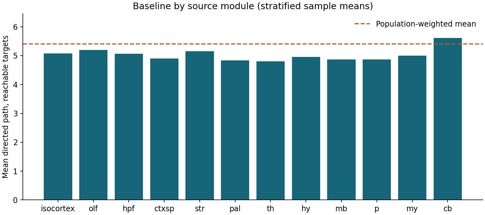

实验记录
涵盖结构、行为、动力学和开放评测。每条记录保留当时的方法、结果与限制，后续修正标在相关条目内。
45 篇记录
结构与损毁
推演框架：从果蝇连接组到"哺乳类以上"的智能网络结构与损毁
这是早期结构推演。有关智能层级和可塑性的表述为研究假设。
视角：神经外科（宏观解剖、可手术/可损毁的功能分区）× 生物学（进化、细胞类型、发育约束）× 计算机科学（图论、可计算生成模型、算力等价）。 本文件是整个项目的推理骨架；后续文档用数据逐条填充和校准。
0. 立场
智能不是神经元数量的单调函数。它是五个因素的联合产物：规模（神经元/突触数）、架构基序（哪些回路模式存在）、布线统计（距离依赖、重尾度分布、模块与枢纽）、可塑性与神经调制（学习规则、全局增益）、以及物理约束（布线体积、传导延迟、能耗）。果蝇雄性 CNS 是目前唯一"每一个突触都已知"且覆盖脑 + 腹神经索的完整个体连接组，因此它是推演唯一合格的可计算起点。
1. 基线 T0：果蝇雄性中枢神经系统（neuprint male-cns:v1.0，2026-09-15 实测）
| 指标 | 数值 | 说明 |
|---|---|---|
| Neuron 节点 | 176,422 | 其中 11,916 无类型片段；status=Traced 165,122；论文报告图中 166,483 |
| 细胞类型 | 11,751 | 平均每类型约 14 个神经元：高度"身份化"的网络 |
| 有向边（神经元对） | 25,862,574 | 平均每神经元约 157 个下游伙伴 |
| 突触连接（边权重和） | 125,024,863 | 平均每神经元约 750 个突触连接 |
| 突触前 / 后位点 | 45.7 M / 311.8 M | Meta 节点 totalPreCount / totalPostCount |
| 胞体坐标覆盖 | 约 1.39e5 | 有类型神经元中 84% 有 somaLocation |
| ROI | 144 | 脑神经纤维网 + VNC 神经纤维网 + 神经 |
| 尺度 | 脑约 680×380×260 µm，CNS 全长约 1 mm | 由网格包围盒得到 |
超类分布（神经元数）：视叶内在 89,403（51%）、中央脑内在 32,164、VNC 内在 13,161、无超类 9,722、视觉投射 9,201、VNC 感觉 6,370、视叶感觉 6,098、中央脑感觉 4,868、上行 1,846、下行 1,314、VNC 运动 708、视觉离心 563。
基线解读：一半以上的果蝇神经元在视叶，做的是高度重复的、按视柱排列的视觉预处理，这是果蝇版的"初级感觉皮层"。真正做灵活联想的中央脑内在神经元只有 3.2 万。整个身体的运动输出被 1,314 个下行神经元这个瓶颈压缩。
2. 跨物种尺度律（文献锚点）
| 物种 | 总神经元 | 皮层/端脑 | 小脑 | 每神经元突触 | 来源 |
|---|---|---|---|---|---|
| 果蝇（雄 CNS） | 1.66e5 | 中央脑内在 3.2e4 | 无（功能类比：蘑菇体） | ~750 | Berg et al. 2026 |
| 小鼠 | 7.1e7 | 1.37e7 | 4.2e7 | 皮层约 8,200 | Herculano-Houzel 2006; Schüz & Palm 1989 |
| 人类 | 8.6e10 | 1.6e10 | 6.9e10 | 新皮层约 7,000（总量 1.5e14） | Herculano-Houzel 2009; Pakkenberg 2003 |
其他锚点：
- MICrONS：约 1 mm³ 小鼠视皮层含约 1.2e5 神经元、5.23e8 突触（MICrONS Consortium 2025）。
- 小脑与皮层的神经元比在哺乳类中近似恒定（约 3.6–4 : 1）（Herculano-Houzel 2010）。
- 灵长类的神经元密度不随脑体积下降；啮齿类会下降；鸟类（鸦科、鹦鹉）端脑密度约为灵长类 2 倍（Olkowicz et al. 2016）。
- 指数距离规则 EDR：p(d) ∝ exp(−λd)，猕猴皮层区间 λ ≈ 0.19 /mm（Ercsey-Ravasz et al. 2013），小鼠 λ 更大（Horvát et al. 2016）。
- 白质体积 ∝ 灰质体积^1.23（Zhang & Sejnowski 2000）：长程布线成本超线性增长。
- 果蝇全脑：聚类系数 0.0477，小世界系数 141（Lin et al. 2024）。
3. 昆虫到哺乳类的"跃迁"到底是什么
3.1 果蝇已经拥有的、被保守下来的计算基序
| 果蝇结构 | 哺乳类对应 | 计算意义 |
|---|---|---|
| 蘑菇体 Kenyon 细胞（稀疏扩展编码）+ 多巴胺调制的 MBON 输出 | 小脑颗粒细胞 / 海马齿状回；VTA→纹状体 | 扩展重编码 + 奖赏预测误差驱动的联想学习 |
| 中央复合体（EB/PB 环吸引子） | 头方向系统（前背侧丘脑、压后皮层） | 连续吸引子记忆、路径整合 |
| 视叶视柱（约 800 柱/眼） | V1 超柱 | 拓扑感觉图、局部重复微回路 |
| 下行神经元（1,314 个） | 皮质脊髓束 / 脑干下行通路 | 决策到运动的瓶颈压缩 |
| VNC 中枢模式发生器 | 脊髓 CPG | 运动原语库 |
3.2 哺乳类新增的东西
- 新皮层：六层、柱状、可重复的"规范微回路"，通过复制同一模块并用皮层-皮层长程连接组织成层级来扩展（小鼠约 40 区，人类每半球约 180 区）。
- 丘脑-皮层环路：路由、注意、同步；是全局工作空间的硬件。
- 海马：索引式情景记忆，模式分离/模式完成；把皮层的分布式表征"打包"。
- 基底节：动作选择的强化学习门控，在皮层与丘脑之间加入可学习的抑制门。
- 大规模小脑：前向模型与时间预测，神经元数随皮层按恒定比例增长。
- 髓鞘化长程轴突：在脑尺寸增大 1000 倍时保持毫秒级同步。
3.3 核心判断：类型化 vs 群体化
果蝇：11,751 类型 / 1.65e5 神经元，每类型约 14 个，行为主要由进化预编程的精确布线决定。 小鼠皮层：数百个转录组类型 / 1.4e7 神经元，每类型 1e4 到 1e5 个；智能来自"同一微回路的海量复制 + 经验塑形"。 推论：迈向哺乳类以上，需要的不是更多"类型"，而是更多"可塑的模块副本"、更深的层级组织、以及能把副本组织起来的长程枢纽结构。
4. 层级蓝图（首版参数，待第 2 轮用模型校准）
T1 小鼠级（参照真实小鼠）
| 模块 | 神经元 | 备注 |
|---|---|---|
| 新皮层 | 1.37e7 | 约 40 区 × 6 层 |
| 海马结构 | ~1.2e6 | 齿状回颗粒细胞约 5e5 |
| 纹状体 | ~1.5e6 | 基底节输入核 |
| 丘脑 | ~1e6 | |
| 小脑 | 4.2e7 | 颗粒细胞占绝大多数 |
| 嗅球 / 脑干 / 中脑 / 下丘脑等 | ~1.2e7 |
T2 人类级
皮层 1.6e10（约 360 区）、小脑 6.9e10、其余约 7e8（纹状体约 1e8、丘脑约 5e7、海马约 4e7）。
T3 超哺乳级（本项目推演的设计）
设计原则：
- 皮层类比模块 1e11 神经元，采用鸟类式高密度堆叠（同体积约 2 倍），避免布线体积按 1.23 次幂爆炸。
- 小脑类比模块按 3.6 : 1 跟随皮层 → 3.6e11。
- 联合皮层比例从人类的约 70% 提升到约 85%（感觉运动区不需要等比扩大）。
- 长程连接的 EDR 衰减常数减半（等效于更快传导 + 更密的枢纽层），维持 L ~ ln N / ln k 的短路径。
- 丘脑类比的"全局工作空间"枢纽层扩容 3 倍，海马类比的索引容量随皮层等比增长。 估算：总 N ≈ 4.7e11，突触 ≈ 3e15；若平均发放 1 Hz，则每秒 3e15 次突触事件，约 1e16 到 1e17 FLOP/s 量级；对比本机 RTX 5060 Ti 约 2e13 FLOP/s（FP32），差 3 到 4 个数量级。
5. 可执行模型（本项目的计算部分）
- 生成模型：节点 = 各模块在解剖网格内采样的 3D 位置；边 = 距离核 exp(−λ d) × 模块间连通矩阵 × log-normal 权重；参数校准到果蝇真实数据（出度约 157、重尾度分布、模块结构）。
- 可比性：每个层级生成两个版本，N_s ≈ 1.65e5（与果蝇同量级，用于同口径对比）和 N_s ≈ 1e6（用于验证尺度趋势）；报告聚类系数 C、平均路径 L、模块度 Q、rich-club 系数；用 L ~ ln N / ln k 和模块度尺度律外推到真实 N。
- 3D 几何：果蝇 = 真实胞体坐标 + 144 个 ROI 网格；小鼠 = Allen CCF 12 个主要结构网格内采样；人类 = fsaverage5 皮层面 + 程序化小脑/脑干；T3 = 程序化设计。
- 算力：边生成与距离核用 torch(GPU)；图指标用 python-igraph；路径长度用 BFS 采样。
基线实测与生成对照：果蝇雄性 CNS 连接组（male-cns:v1.0）结构与损毁
数据：neuprint 公开数据集 male-cns:v1.0，2026-09-15 通过 Cypher 全量抓取（176,422 个 Neuron 节点，25,862,574 条边）。 分析：
src/fly_graph_stats.py（python-igraph），生成对照：src/generate_tiers.py T0（RTX 5060 Ti）。
1. 分析集合的定义
| 集合 | 节点 | 边 | 突触（边权重和） | 用途 |
|---|---|---|---|---|
| 全部 Neuron 节点 | 176,422 | 25,862,574 | 125,024,863 | 数据库原貌（含 11,916 个无类型片段） |
status = Traced（本项目的 T0） |
165,122 | 25,563,197 | 124,025,046 | 图论统计；与论文的 166,483 同量级 |
| Traced 且有胞体坐标 | 140,024 | 23,229,419 | — | 三维渲染与生成对照（需要空间位置） |
| Traced，权重 ≥ 5 | 165,122 | 6,235,682 | — | 与 Lin 等 2024 的阈值口径对齐 |
2. 全网图论指标（实测）
| 指标 | w ≥ 1 | w ≥ 5 | 有胞体子图 |
|---|---|---|---|
| 平均出度 ⟨k⟩ | 154.8 | 37.8 | 165.9 |
| 出度中位数 / 最大值 | 113 / 11,203 | 25 / 7,570 | 123 / 11,151 |
| 出度变异系数 | 1.38 | 1.66 | 1.33 |
| 互惠率 | 0.299 | 0.157 | 0.294 |
| 聚类系数 C（全局） | 0.1129 | 0.0627 | 0.1141 |
| 平均局部聚类 | 0.253 | 0.170 | 0.228 |
| 平均有向路径 L | 3.24 | 4.13 | 3.09 |
| 平均无向路径 | 2.98 | 3.66 | 2.85 |
| 小世界指数 S | 51 | 115 | 42 |
| 模块度 Q（超类划分） | 0.434 | 0.421 | 0.442 |
| 模块度 Q（Leiden） | 0.700 | 0.709 | 0.690 |
| 最大强连通分量 | 99% | 95% | 99% |
| 前 1% 枢纽承载的边 | 17% | 21% | 16% |
与文献的核验：Lin 等（2024，Nature）对 FlyWire 雌性全脑报告 C = 0.0477、S = 141。本项目在阈值 w ≥ 5 下得到 C = 0.063、S = 115，量级一致；差异来自数据集（雄性、含 VNC）、阈值与随机基准的定义。
路径分布（有向，从 200 个随机源出发）：1 步 0.1%、2 步 9.8%、3 步 58%、4 步 31%、5 步 1.6%。任意两个神经元之间，中位数只隔 3 个突触。
Rich-club：度阈值 k > 187 时 φ = 0.004，k > 1,048 时 0.058，k > 1,779（约前 1%）时 0.119。全网连接密度约 0.1%，所以最顶层枢纽之间的密度是全网的 100 倍以上：果蝇脑有明确的"富人俱乐部"。
3. 超类层面的结构
3.1 各超类的度（有向图，w ≥ 1）
| 超类 | 数量 | 平均出度 | 平均入度 | 角色解读 |
|---|---|---|---|---|
| 视叶内在 | 89,390 | 121 | 109 | 重复的视柱微回路，度较低 |
| 中央脑内在 | 32,160 | 234 | 252 | 联想中枢，度最高的大群体 |
| VNC 内在 | 13,151 | 183 | 211 | 运动模式生成 |
| 视觉投射 | 9,201 | 181 | 294 | 视叶到中央脑的汇聚通道（入度高） |
| 下行神经元 | 1,314 | 470 | 431 | 脑到 VNC 的枢纽，度是平均值的 3 倍 |
| 上行神经元 | 1,846 | 411 | 357 | VNC 到脑的枢纽 |
| VNC 运动神经元 | 708 | 19 | 284 | 纯输出汇（出度指向肌肉，不在图中） |
| 感觉（脑） | 4,868 | 79 | 43 | 输入源 |
| 感觉（VNC） | 6,365 | 100 | 38 | 输入源 |
| 视叶感觉（光感受器） | 4,114 | 16 | 5 | 输入源 |
3.2 超类间的投射矩阵（每行：该来源的边流向哪些目标，%）
| 来源 → | AN | CB | DN | MOTOR | OL | SENS | VNC | VP | 占全部边 |
|---|---|---|---|---|---|---|---|---|---|
| OL 视叶 | 0 | 0.1 | 0 | 0 | 81.0 | 0.2 | 0 | 18.7 | 42.5% |
| CB 中央脑 | 0.8 | 90.6 | 4.0 | 0.2 | 0 | 1.4 | 0 | 2.9 | 29.4% |
| VNC | 11.4 | 0 | 2.0 | 6.9 | 0 | 3.2 | 76.3 | 0 | 9.4% |
| VP 视觉投射 | 0.1 | 27.4 | 1.5 | 0 | 38.6 | 0 | 0 | 32.2 | 8.6% |
| SENS 感觉 | 12.3 | 22.8 | 3.1 | 1.3 | 4.8 | 21.3 | 33.5 | 0.8 | 4.6% |
| AN 上行 | 14.6 | 30.2 | 8.8 | 2.3 | 0.2 | 3.4 | 38.8 | 1.4 | 3.0% |
| DN 下行 | 10.3 | 28.8 | 12.2 | 4.2 | 1.0 | 1.5 | 39.8 | 1.9 | 2.4% |
72.7% 的边在同一超类内部。三点值得记住：
- 视叶是一个几乎封闭的预处理器：81% 的输出留在视叶，19% 经视觉投射神经元进入中央脑；视叶贡献了全网 42.5% 的边，却几乎不接收反馈。
- 中央脑高度自反：90.6% 的输出留在中央脑，这就是果蝇的"联想皮层"。
- 下行神经元不只是输出通道：只有 40% 的下行输出真的进入 VNC，29% 反馈回中央脑、10% 到上行神经元、12% 到其他下行神经元。下行系统是一个带有内部再入连接的决策层，而不是单向的运动指令线。这一点与哺乳类皮质脊髓/脑干下行系统的侧支反馈结构相同。
4. 胞体距离与连接概率（指数距离规则）
用 8,000 个随机源神经元，比较其真实下游伙伴的胞体距离分布与随机神经元对的分布：
- 目标胞体中位距离 129 µm，随机对 368 µm。
- 密度比在 25–700 µm 区间拟合 p(d) ∝ exp(−λd)：λ = 8.12 /mm，衰减长度 123 µm。
- 对比：猕猴皮层区间 λ ≈ 0.19 /mm，小鼠约 0.78 /mm（Ercsey-Ravasz 等 2013；Horvát 等 2016）。衰减长度与脑的线性尺寸大致同比缩放：果蝇 0.12 mm / 1 mm 脑长，小鼠约 1.3 mm / 13 mm，猕猴约 5 mm / 60 mm。"连接概率在脑长的十分之一尺度上衰减" 是跨越三个数量级的经验规律，本项目把它作为各层级生成模型的 λ 设定依据。
5. 生成对照（T0 合成网络）
用与真实数据相同的 140,024 个胞体位置、超类间投射矩阵、λ = 8.12 /mm 的距离核和对数正态出度（σ = 0.84），在 GPU 上生成同样 2,326 万条边：
| 指标 | 实测（有胞体子图） | 生成对照 | 复现？ |
|---|---|---|---|
| 平均有向路径 L | 3.09 | 2.95 | 是 |
| 模块度 Q（超类） | 0.442 | 0.456 | 是 |
| 模块度 Q（Leiden） | 0.690 | 0.626 | 基本 |
| 聚类系数 C | 0.114 | 0.019 | 否，低 6 倍 |
| 小世界指数 S | 42 | 6 | 否 |
| 前 1% 枢纽承载的边 | 16% | 10% | 部分 |
解读：模块划分加距离核已经足以解释果蝇脑的路径长度与模块结构，但解释不了它的聚类（三角形密度）与枢纽集中度。真实网络里的三角形来自类型特异的精确布线：同一类型的神经元共享输入输出伙伴，形成大量闭合三元组。这正是果蝇策略的量化指纹——11,751 个类型、每型中位数 3 个神经元，连接由基因组预编程。
6. 对推演的含义（专家判断）
- 基因组瓶颈：果蝇可以用基因组规定约 1 万种神经元身份及其配线（Zador 2019 的"基因组瓶颈"论证）。哺乳类皮层有 10⁷–10¹⁰ 个神经元，基因组不可能逐个规定，只能规定少量可复制的微回路类型，然后靠活动依赖的可塑性把统计性布线"精修"成高聚类、高效率的网络。果蝇靠精确配线获得的聚类，哺乳类必须靠学习获得。 这决定了 T1–T3 的生成模型必须把"可塑性带来的聚类增益"作为独立参数，而不是从模块和距离中推出。
- 枢纽层是跨物种的必需品：果蝇的下行/上行神经元（度是平均的 3 倍）与顶层 rich-club 说明，即使在预编程网络里，全局整合也依赖少数高连接度节点。哺乳类的丘脑、屏状核与皮层高阶联合区承担同样角色，T3 设计中把丘脑枢纽扩容 3 倍正是基于此。
- 感觉预处理不参与"智能"的尺度律：视叶占一半神经元、四成边，却几乎是单向封闭的。跨物种比较智能时应当以"中央脑内在 / 皮层系"为主体，这就是前端里同时给出全脑与前脑子网两组指标的原因。
层级结果：同规模对照实验（T0 → T3）结构与损毁
生成：
src/generate_tiers.py（RTX 5060 Ti，Gumbel-top-k），统计：src/netstats.py。 所有模型 N = 140,024（果蝇有胞体子图）、⟨k⟩ ≈ 166、权重自果蝇突触数分布自举；只改变架构（模块与比例、投射矩阵、λ、按角色的度）。
1. 全脑模型
| 模型 | C 全局 | 局部聚类 | L 有向 | L 无向 | S | Q 解剖模块 | Q Leiden | 互惠率 | 前 1% 枢纽边占比 | 最大强连通 |
|---|---|---|---|---|---|---|---|---|---|---|
| 果蝇实测（有胞体子图） | 0.114 | 0.228 | 3.09 | 2.85 | 42 | 0.442 | 0.690 | 0.294 | 0.16 | 0.99 |
| T0 生成对照 | 0.019 | 0.017 | 2.95 | 2.63 | 6 | 0.456 | 0.626 | 0.008 | 0.10 | 1.00 |
| T1 小鼠级 | 0.058 | 0.046 | 3.12 | 2.78 | 18 | 0.467 | 0.607 | 0.032 | 0.12 | 0.90 |
| T2 人类级 | 0.133 | 0.258 | 4.46 | 2.69 | 47 | 0.428 | 0.710 | 0.179 | 0.17 | 1.00 |
| T3 超哺乳级 | 0.091 | 0.299 | 5.04 | 2.71 | 32 | 0.324 | 0.656 | 0.190 | 0.19 | 1.00 |
2. 前脑子网（皮层系 + 基底节 + 丘脑，同样 N 与 ⟨k⟩）
| 模型 | C 全局 | 局部聚类 | L 有向 | L 无向 | S | Q 解剖模块 | Q Leiden | 互惠率 | 前 1% 枢纽边占比 |
|---|---|---|---|---|---|---|---|---|---|
| T1 小鼠前脑 | 0.025 | 0.035 | 2.97 | 2.62 | 8 | 0.289 | 0.499 | 0.015 | 0.10 |
| T2 人类前脑 | 0.036 | 0.062 | 3.08 | 2.60 | 12 | ≈0（皮层占 98%） | 0.558 | 0.017 | 0.19 |
| T3 超哺乳前脑 | 0.029 | 0.037 | 2.93 | 2.56 | 10 | 0.080 | 0.471 | 0.015 | 0.17 |
人类前脑的解剖模块度为 0 是度量的性质而非缺陷：16.2e10 皮层神经元占前脑 98%，"按解剖模块划分"几乎只剩一个模块。此时应看 Leiden 社区（Q = 0.558，来自皮层面上的空间社区，对应皮层分区）。
3. 各模块的度结构（T2 人类级，全脑）
| 模块 | 采样节点 | 平均出度 | 平均入度 | 说明 |
|---|---|---|---|---|
| 新皮层 | 26,370 | 353 | 296 | 主体 |
| 小脑 | 112,248 | 122 | 118 | 80% 的节点，局域前馈 |
| 丘脑 | 81 | 648 | 6,635 | 全网均值的 40 倍：全局路由枢纽 |
| 皮层下板（杏仁核等） | 49 | 297 | 3,440 | 汇聚枢纽 |
| 纹状体 | 179 | 266 | 2,041 | 皮层输出的门控汇 |
| 海马结构 | 163 | 323 | 1,129 | 索引汇 |
| 中脑 / 脑桥 / 延髓 | 244 / 244 / 326 | 312 / 335 / 327 | 1,953 / 1,522 / 819 | 下行汇 |
顶层 1%（k > 2,038）的 rich-club 密度 0.29；果蝇实测同分位 0.135。T3 为 0.25。
4. 解读
4.1 路径长度：架构决定，规模无关
所有模型的无向路径都在 2.6–2.9 步，有向路径 2.9–3.1 步（小脑主导的全脑 T2/T3 除外）。在固定 N 与 ⟨k⟩ 下，模块化 + 距离核 + 枢纽层就足以给出果蝇水平的"三步可达"。这与解析估计 L ≈ ln N / ln ⟨k⟩ = ln(1.4e5)/ln(166) ≈ 2.3 一致（实际略高，因为模块与距离限制了随机性）。
4.2 聚类：结构给不出，必须靠可塑性
- 果蝇真实 C = 0.114；果蝇的"模块 + 距离"对照只有 0.019；三个哺乳类前脑模型 0.025–0.036。
- 全脑 T2 的 C = 0.133 看似追平果蝇，但几乎全部来自小脑模块的极端局域布线（λ = 0.8 /mm 对应 1.25 mm 衰减长度，而小脑长 100 mm），并非"智能"所在的前脑。
- 结论：哺乳类蓝图本身产生的三角形密度只有果蝇的四分之一。果蝇靠基因组预编程的类型特异布线补足，哺乳类靠活动依赖的可塑性补足。任何"哺乳类以上"的网络设计都必须把可塑性带来的聚类增益（约 3–4 倍）作为独立预算，而不是期望它从架构里自然出现。用 AI 的语言说：功能结构主要在训练后的权重里，而不在架构里。
4.3 互惠率：同样的结论
果蝇实测 0.294；所有生成模型 0.01–0.19（T2/T3 的 0.18 来自小脑局域对称核）。真实脑里大量的双向连接（皮层-丘脑环路、皮层内互惠对）是学习与预测编码的硬件基础，生成器下一版要把互惠率作为显式参数。
4.4 枢纽：设计有效
从 T1 到 T3，前 1% 节点承载的边占比 0.12 → 0.17 → 0.19，丘脑枢纽扩容 3 倍的设计在图上可见。代价是 T3 的解剖模块度降到 0.32：更强的整合意味着更弱的分隔，这正是"全局工作空间"的图论代价。
4.5 规模尺度实验（固定小鼠架构与 ⟨k⟩ = 166，N 从 2 万到 40 万）
| N | 边 | C 全局 | 局部聚类 | L 有向 | L 无向 | S | Q 解剖模块 |
|---|---|---|---|---|---|---|---|
| 20,000 | 3.30e6 | 0.185 | 0.158 | 2.90 | 2.45 | 8 | 0.428 |
| 50,000 | 8.33e6 | 0.112 | 0.090 | 3.22 | 2.61 | 13 | 0.451 |
| 100,000 | 1.66e7 | 0.072 | 0.057 | 3.05 | 2.72 | 16 | 0.463 |
| 200,000 | 3.32e7 | 0.045 | 0.034 | 3.18 | 2.84 | 20 | 0.471 |
| 400,000 | 6.65e7 | 0.028 | 0.020 | 3.28 | 2.93 | 25 | 0.475 |
拟合：C ∝ N^−0.64（局部聚类 N^−0.69）；L 有向 = 1.97 + 0.101·ln N；S ∝ N^0.37；Q 基本不变（N^0.03）。 固定 ⟨k⟩ = 166 外推：N = 7.1e7（小鼠）→ L = 3.8、C = 0.001；N = 8.6e10（人类）→ L = 4.5、C ≈ 1e−5；N = 4.8e11（T3）→ L = 4.7。
含义：规模本身几乎不破坏"几步可达"（每增加 e 倍只多 0.1 步），却会把局域三角形按 N^−0.64 稀释殆尽。因此真实脑的聚类不可能来自"整体统计"，只能来自有效邻域：每个神经元的伙伴集中在一个 10^5 量级的局部群体里（一个皮层区、一个柱阵列），在这个尺度上网络的行为与果蝇全脑相同。换句话说，一个哺乳类皮层区就是一个"果蝇规模"的计算单元，哺乳类脑是数千个这样的单元由枢纽层缝合起来的网络——这也是 T3 设计把核团式联合区做成 16 个独立高密度团块的理由。
4.6 有向路径在 T2/T3 全脑中变长的含义
T2 4.46 步、T3 5.04 步，因为小脑模块 80% 的节点在固定 ⟨k⟩ 下只能局域连接。真实脑不受此限：小脑颗粒细胞平均只有 4 个苔藓纤维输入，但浦肯野细胞有 15 万个输入；皮层神经元有 7,000 个突触。在真实的度分布下，L 会回到 3 步左右——规模尺度实验（src/scale_experiment.py）与解析外推 L ≈ ln N / ln ⟨k⟩ 给出：N = 1e11、⟨k⟩ = 1e4 时 L ≈ 2.75。也就是说，要在 1e11 个神经元的网络里维持三步可达，平均每个神经元至少要有约 1e4 个伙伴——人类皮层的 7,000 个突触恰好处在这个边界上。
4.7 v2：加入互惠率后的结果（--recip 0.29）
按果蝇实测互惠率为每个层级补入反向边（先按 1/(1+f) 缩减出度，再为随机 f = r/(2−r) = 0.17 的边补反向边，总边数不变）：
| 模型 | C v1 → v2 | L 有向 v1 → v2 | S v2 | Q 解剖 v2 | 互惠率 v2 | 枢纽边占比 | 最大强连通 |
|---|---|---|---|---|---|---|---|
| T0 生成对照 | 0.019 → 0.016 | 2.95 → 2.90 | 6 | 0.456 | 0.294 | 0.10 | 1.00 |
| T1 小鼠级 | 0.058 → 0.052 | 3.12 → 3.08 | 19 | 0.469 | 0.307 | 0.12 | 1.00 |
| T1 小鼠前脑 | 0.025 → 0.022 | 2.97 → 2.93 | 9 | 0.289 | 0.298 | 0.11 | 1.00 |
| T2 人类级 | 0.133 → 0.122 | 4.46 → 3.06 | 50 | 0.427 | 0.392 | 0.17 | 1.00 |
| T2 人类前脑 | 0.036 → 0.032 | 3.08 → 2.89 | 13 | ≈0 | 0.299 | 0.20 | 1.00 |
| T3 超哺乳级 | 0.091 → 0.086 | 5.04 → 3.04 | 36 | 0.326 | 0.403 | 0.19 | 1.00 |
| T3 超哺乳前脑 | 0.029 → 0.026 | 2.93 → 2.84 | 10 | 0.081 | 0.298 | 0.17 | 1.00 |
解读：互惠连接不产生三角形（C 反而略降，因为双向对合并后无向边变少），但它把小脑主导的 T2/T3 全脑的有向路径从 4.5–5.0 步拉回 3.0 步，并让所有网络成为单一强连通分量。也就是说，双向连接是维持"有向可达性"的结构，而不是维持"局域聚类"的结构；果蝇 0.29 的互惠率是它在只有 155 个平均伙伴的条件下仍能三步可达的原因之一。T2/T3 的互惠率超过目标（0.39–0.40），因为小脑模块的对称距离核本身已经产生了大量双向对。
5. 真实尺度的估算与算力等价
| 层级 | 神经元 | 突触（估算） | 1 Hz 下突触事件/秒 | 等价 FLOP/s（×10） | 等价 RTX 5060 Ti 数 |
|---|---|---|---|---|---|
| T0 果蝇（实测） | 1.65e5 | 1.24e8 | 1.24e8 | 1.2e9 | 1/16,000 |
| T1 小鼠 | 7.1e7 | ≈1.9e11 | 1.9e11 | 1.9e12 | 0.1 |
| T2 人类 | 8.6e10 | ≈1.5e14 | 1.5e14 | 1.5e15 | ≈75 |
| T3 超哺乳设计 | 4.8e11 | ≈1.0e15 | 1.0e15 | 1.0e16 | ≈500 |
人类突触数的估算（按角色的每神经元突触数 × 神经元数）得到 1.5e14，与 Pakkenberg 等的立体学计数（新皮层 1.5e14）一致，说明角色假设是自洽的。算力上，T3 设计在 1 Hz 平均发放率下约需 1e16 FLOP/s，相当于几百块消费级 GPU 或一个中等数据中心机柜：算力不是超哺乳网络的瓶颈，布线规则与学习规则才是。
6. 对"哺乳类以上智能网络"的设计结论（本项目的推演答案）
- 规模：皮层类比 ≥ 1e11（人类 1.6e10），小脑类比按 3.6 : 1 跟随，总量 ≈ 5e11。规模决定容量，不决定效率。
- 架构：保留哺乳类蓝图（皮层片 + 丘脑枢纽 + 海马索引 + 基底节门控 + 小脑预测器），加双层皮层与鸟类式核团联合区解决布线体积，丘脑枢纽扩容 3 倍承担全局路由。
- 布线统计：λ 随脑长缩放（衰减长度 ≈ 脑长的 6–12%）；平均伙伴数 ≥ 1e4 以在 1e11 节点下维持三步可达；顶层 1% 枢纽承载约 20% 的边。
- 可塑性预算：结构给出的聚类只有 0.03，目标 ≥ 0.1；差额（3–4 倍的三角形密度）与 0.3 的互惠率必须由学习规则产生。这是从果蝇连接组学到的最重要的一课：果蝇把这些写进了基因组，哺乳类以上必须写进经验。
- 能耗/算力：约 1e16 FLOP/s 等价，可实现。
- 鲁棒性（见
03_损毁实验.md）：随机损伤几乎免费，枢纽损伤代价高昂；冗余必须放在通往最大模块的入口（小脑多入口 T3c：枢纽切除后效率保留 50% → 63%），分散丘脑无效。
7. 待验证与局限
- 真实尺度的连接数与突触数是角色假设的估算；小鼠"其余"脑区按 Allen 体积 × 密度权重拆分。
- 同规模对照固定了 ⟨k⟩ = 166，真实哺乳类 ⟨k⟩ 高 1–2 个数量级，路径长度结论需结合规模尺度实验外推。
- 生成器（v2）已有互惠率参数，但尚无"类型/柱"级的可塑性项。
损毁实验：神经外科视角下的网络鲁棒性结构与损毁
脚本：
src/lesion_experiment.py。图：果蝇真实 Traced 图（165,122 节点）与 v2 层级模型（140,024 节点，互惠率 0.29，重生成后与流水线版本边数相差 < 0.005%）。 指标（有向，200 个随机源）：可达比例、可达对的平均路径、全局效率（可达对 1/距离 的均值）、最大强连通分量。
1. 六种切除条件
| 条件 | 含义 | 外科类比 |
|---|---|---|
| baseline | 完整网络 | — |
| random 5% / 20% | 随机切除 5% / 20% 的神经元 | 弥漫性损伤（缺氧、弥漫性轴索损伤） |
| hubs top 1% / 5% | 按总度切除最高的 1% / 5% | 打击枢纽结构（如脑干网状结构、丘脑、屏状核） |
| anatomical | 果蝇：切除全部上行/下行类神经元（3,721 个）；哺乳类模型：切除整个丘脑模块 | 颈髓横断 / 丘脑损毁 |
2. 结果
| 网络 | 条件 | 切除数 | L 有向 | 可达 | 效率保留 |
|---|---|---|---|---|---|
| T0 果蝇实测 | 完整 | 0 | 3.23 | 98.6% | 100% |
| 随机 5% | 8,256 | 3.24 | 99.6% | 100.5% | |
| 随机 20% | 33,024 | 3.26 | 99.0% | 99.3% | |
| 枢纽 1% | 1,651 | 3.73 | 99.6% | 87.9% | |
| 枢纽 5% | 8,256 | 4.21 | 98.5% | 77.3% | |
| AN/DN 全切 | 3,721 | 3.66 | 97.6% | 91.1% | |
| T1 小鼠级 | 完整 | 0 | 3.11 | 100% | 100% |
| 随机 20% | 28,004 | 3.15 | 100% | 99.0% | |
| 枢纽 1% | 1,400 | 3.20 | 100% | 97.4% | |
| 枢纽 5% | 7,001 | 3.39 | 100% | 92.3% | |
| 丘脑全切 | 913 | 3.23 | 100% | 97.2% | |
| T2 人类级 | 完整 | 0 | 3.09 | 100% | 100% |
| 随机 20% | 28,004 | 3.18 | 100% | 97.5% | |
| 枢纽 1% | 1,400 | 3.98 | 100% | 78.2% | |
| 枢纽 5% | 7,001 | 4.80 | 100% | 66.3% | |
| 丘脑全切 | 81 | 3.36 | 100% | 92.3% | |
| T3 超哺乳级 | 完整 | 0 | 3.01 | 100% | 100% |
| 随机 20% | 28,004 | 3.09 | 100% | 97.6% | |
| 枢纽 1% | 1,400 | 4.05 | 100% | 75.4% | |
| 枢纽 5% | 7,001 | 6.76 | 100% | 50.0% | |
| 丘脑全切 | 174 | 3.29 | 100% | 92.1% |
3. 果蝇脑-VNC 桥接的专项核查
切除全部 3,721 个上行/下行类神经元后，脑→VNC 的跨区可达性仍为 99.6%，但路径从 3.57 步升到 5.14 步（VNC→脑：3.50 → 5.24）。隐藏的桥梁只有 130 个非 AN/DN 神经元（111 个 VNC 内在神经元、9 个 VNC 运动神经元等，多为投射到咽下神经节 GNG 的神经元）和 117 条直接的脑→VNC 边。再切除全部 9,722 个无超类神经元也不改变结果。
含义：可达性是"一条通路即可"的二值指标，对损毁不敏感；真正反映功能代价的是路径长度与效率。神经外科的经验与此一致：完全性脊髓损伤并不切断所有解剖通路，但残余通路的效率不足以支撑功能。
4. 解读
- 随机损伤几乎免费，枢纽损伤代价高昂。 四个网络切除 20% 随机节点后效率保持 97–99%；切除 5% 枢纽后效率降到 77%（果蝇）、92%（小鼠级）、66%（人类级）、50%（超哺乳级）。这就是重尾度分布与 rich-club 的代价：效率和脆弱性来自同一批节点。
- 丘脑的单节点关键性极高。 T2 只切 81 个采样节点（0.06%）就损失 8% 的效率，而随机切 28,004 个节点不损失任何效率：按单节点计，丘脑神经元的关键性是随机神经元的上千倍。这与临床上双侧丘脑梗死导致意识障碍一致，尽管静态图无法表达丘脑真正的动力学功能（唤醒、门控、同步）。
- 越"高级"的设计越依赖枢纽。 从 T1 到 T3，5% 枢纽切除的效率损失从 8% 升到 50%。T3 把路由集中到三倍丘脑枢纽与 16 个核团联合区，换来了整合效率，也换来了单点脆弱性。这是对 T3 设计的明确修正意见：超哺乳网络必须配备冗余的分布式枢纽（多个中等度枢纽核、皮层间直接长程链路），而不是少数超级枢纽。 修正版 T3b 用于验证这一点。
- 果蝇比人类级模型更抗枢纽打击（77% 对 66%），因为它的枢纽层（AN/DN + 中央脑高连接神经元）较分散、互惠率高、且不存在一个占 80% 节点的局域前馈模块（小脑）来放大枢纽依赖。
5. 修正设计的验证：T3b 失败，T3c 部分成功
| 网络 | 基线 L | 随机 20% | 枢纽 1% | 枢纽 5% | 丘脑全切 |
|---|---|---|---|---|---|
| T3 | 3.01 | 97.6% | 75.4% | 50.0%（L=6.76） | 92.1% |
| T3b 分散丘脑（6 核、k_rel 1.6→1.0、皮层 λ 0.03） | 3.03 | 99.3% | 74.7% | 51.3%（L=6.61） | 92.8% |
| T3c = T3b + 小脑多入口（皮层 5%、联合区 4%、中脑 6%、丘脑 3% 直接投向小脑） | 3.02 | 99.4% | 76.5% | 62.7%（L=5.08） | 93.2% |
为什么 T3b 无效：(1) 按度排序的前 5% 节点主要是脑桥、延髓、丘脑等在同规模采样里只有 145–290 个节点、入度却上千的中继模块，而小脑（74% 的节点）的全部输入只经由脑桥/延髓——真正的单点故障是皮质-脑桥-小脑瓶颈；(2) 降低丘脑 k_rel 只改变出度，其入度（约 4,000）由投射它的皮层决定，T3b 里纹丝未动。
为什么 T3c 有效：把小脑的入口从数百个中继节点分散到数万个皮层/联合区节点，切除任何 5% 的高度节点都无法同时切断所有入口。代价是小脑输入的"预处理"（真实脑桥核的功能）被绕过；在设计语义上，这相当于要求多条并行的前小脑通路。T3c 仍不及人类级（66%）与果蝇（77%）：高度集中的整合架构天生要为效率付出脆弱性的代价。
设计原则的修订：冗余必须放在通往最大模块的入口，而不是放在"看起来最像枢纽"的结构上；识别真正的瓶颈要靠损毁实验，而不是靠度的排名。
6. 静态图的边界
这里所有指标都是静态连接图的性质。真实损毁的功能后果还取决于：神经调制（切除 DAN/5-HT 系统对图几乎无影响，对行为却是灾难）、时序与振荡、可塑性代偿（数周内的重组）。因此损毁实验回答的是"信息还能不能高效地到达"，而不是"功能还在不在"。
后续研究计划：从结构生成到可验证的计算模型结构与损毁
这是分阶段研究计划。后续完成情况见对应实验记录。
日期：2026-09-15。状态：阶段 A 首轮已完成（见 05_全尺度基线核验.md，保留精度与缺失指标说明）；阶段 B 任务单和真实小鼠行为基线已建立，B–E 尚未完成。
后续执行更新：阶段 B 已取得同版局部数据、条件拟合和多种子图对照，但距离失配与观察机会集合仍未解决（见 11–15）。阶段 D 的工程预备已推进到闭环任务、接口/重连干预和无奖励读出特征校准（见 16–19）；这没有越过阶段 B 的生物数据门槛，也不等于阶段 D 的结构优势验收。阶段 C 全脑扩展与 T2/T3 功能比较仍不得以这些合成任务高分作为通过依据。
新种子复验：固定候选已在 10 组新生成图/任务种子上运行，短延迟与平均干预达到预定工程门槛，但反转长延迟仍不稳健、类型拓扑仍未显示优势（见 20）。这部分证据仅覆盖阶段 D 的合成任务工程基线，不替代 B/C 或真实动物验证。
真实行为参照：校准集的对比度/方向匹配、会话拆分与切换窗口审计已完成（见 21）。早期适应窗口样本不足，暂不设相应通过线；需把隐藏刺激先验变化与合成动作映射反转区分开。此进展属于阶段 D 的评价准备，未改变 B/C 门槛。
测量敏感性：合并早期时间窗增加覆盖，但十种会话分配仍显示动态参照支持有限（见 22）。不将更粗、更易测的曲线替代快速适应验收；暂缓继续调窗，转向与动物协议一致的隐藏先验闭环任务接口，动物等效门槛仍未冻结。
隐藏先验接口：真实校准刺激排程的闭环合同及程序化历史对照已通过（见 23）；正确动作映射固定，模型不可见区块，历史只来自自身动作和奖励。下一步才是把通用循环网络和假说图接入该合同；任务控制通过不算神经候选或阶段 D 通过。
假说图首轮结果：20 个 1 万节点模型已接入隐藏先验合同（见 24）。单步 v1 发现感觉到读出的同步时序错误；严格配对的两步 v2 修复可达性后，三种递归图仍全部未过预设能力门槛，且类型图未优于保度重连图。阶段 D 下一步转向预先冻结的内部可塑性/快慢状态分离，不继续把读出-only参数调整包装为结构能力；阶段 B、动物等效和最终测试门槛不变。
快慢状态修复：训练侧探针确认固定图的 go 后读出可线性解码当前感觉；因此优先实施匹配读出参数的快感觉/慢历史状态分离，而未先改 40 万条递归边（见 25）。五个旧图种子上主正确率提高到 84.7%–85.1%，全部预设机制干预通过。下一步必须在第 20 轮的十个新图种子上复验；内部突触可塑性改为相对于此固定图双状态基线的独立增量实验。验证/最终测试、拓扑优势和动物等效仍未完成。
本计划承接 docs/00–03、现有 T0–T3 实验和全尺度小鼠数据。计划制定后，用户已授权按阶段执行。阶段结果单独记录在对应报告，不能把本文件中的拟议任务当作已完成结果；时间为排期目标。
1. 研究目标与主线
长期问题：在规模、连接预算和物理约束明确的条件下，哪些局部回路、长程连接和学习机制能够改善记忆、学习、整合与损伤后的表现？
近期目标：建立经校准的小鼠启发模型，分别验证结构统计与任务表现，再用同一实验协议评估人类启发架构和 T3 设计。
推进顺序：结构基线可信 → 局部微回路校准 → 全脑多尺度组合 → 动力学与学习 → T2/T3 对照。
T1/T2 是参照物种结构的生成模型；T3 是设计假说。节点数量、短路径、聚类和图效率各自描述特定性质，不能单独作为“达到小鼠、人类或超哺乳智能”的证据。
2. 接续工作前确认的事实
| 项目 | 本次核对结果 | 对研究安排的影响 |
|---|---|---|
| 全尺度数据 | data/mouse_full/meta.json 记录 70,999,999 个节点；日志记录 2,827,324,172 条有向边、平均出度约 39.82 |
作为 M1-v1 已生成基线保留，先补可信统计 |
| 存储 | 当前 CSR/CSC 的索引与指针文件合计约 23.75 GB（22.12 GiB）；整个目录约 24.89 GB | 历史“34 GB”不能直接用于下一版容量预算，应按当前文件和新增字段重算 |
| BFS 失败 | 日志在 torch.unique(torch.cat(parts)) 报显存不足；代码先积累各块候选再全量去重 |
必须限制工作区峰值，同时检查邻居展开的临时数组 |
| 距离采样回退 | edges_done.json 记录 553,219,596 次均匀回退，约为已记录去重后基础边数的 22.9% |
此比值不是最终唯一边的回退占比；需补精确计数并量化距离与模块偏差 |
| 两个生成器 | 同规模生成器为 Gumbel-top-k 无放回采样；全尺度生成器使用空间网格、变更距离参数的重试、均匀回退与去重，度上限也不同 | 两者的统计一致性是待验证问题，旧尺度拟合不能直接移用于全尺度模型 |
| 已完成统计 | 日志有度、模块流、互惠率、边长、局部聚类的简略结果；JSON 首次写出位于基线 BFS 之后 | 完整全尺度统计文件尚未形成；要增加阶段落盘和恢复 |
| 图的语义 | 全尺度文件存储有向伙伴关系，当前没有逐边突触权重、兴奋/抑制标记、传导延迟或学习状态 | 平均度约 40 是计算预算下的稀疏结构；与果蝇阈值图度相近尚不足以证明生物学口径一致 |
| 版本管理 | neuroscale/ 自身有独立 Git 仓库，本次读取时工作区干净，最新提交 52e5a16 |
后续研究代码和文档以该独立仓库为版本基准 |
方法核对依据：src/fullscale/generate_mouse.py、src/fullscale/stats_mouse.py、src/generate_tiers.py、src/lesion_experiment.py 和对应本地结果文件。
3. 优先回答的研究问题
| 问题 / 假说 | 实验 | 什么结果会要求修订判断 |
|---|---|---|
| H1：局部结构约束能够解释一部分聚类与基序差距 | 距离模型、细胞类型/层约束模型、局部连接偏好模型逐项比较；学习机制在后续单独加入 | 新机制在留出数据上无改进，或改进完全来自增加边数 |
| H2：局部密集回路与稀疏长程通路能在规模增长时保留结构特征 | 固定局部密度和模块规则扩增，与固定体积增加节点的旧方案比较 | 聚类、路径或模块流随规模出现无法解释的偏移 |
| H3：针对瓶颈增加并行通路能改善损毁表现 | 等边数、等总权重及受控布线成本下比较原架构、分散枢纽、并行中继 | 改进只在幸存节点统计中出现，固定总体口径或任务表现无改善 |
| H4：结构先验能提高学习效率或记忆鲁棒性 | 在同一任务、训练预算和输入输出映射下，与随机/重连网络比较 | 多随机种子下优势不稳定，或优势由更多参数与训练量解释 |
旧文档中“聚类差距必须由可塑性补足”“真实尺度必然回到三步可达”“随机损伤几乎免费”等表述进入复核清单。现有实验支持特定生成模型的观测，尚未排除其他结构机制、口径效应或外推误差。
4. 阶段 A：补全可信基线（首轮，目标 1–2 个工作日）
A1. 数据与运行记录
- 建立运行清单：数据路径、文件大小/形状/dtype、节点与边数、生成参数、种子、代码提交、软件版本、运行时间和峰值内存。
- 分块检查 CSR/CSC 指针单调性、末项与边数一致、节点索引范围、行内排序、重复边和自环；明确哪些检查全量完成、哪些仅抽样完成。
- 验证转置关系：小图完全核对，全尺度先做确定性抽样双向查询和度总和检查；抽样通过不写成全量一致性证明。
- 特别检查生成器均匀回退路径中的自环排除与最终去重行为。旧数据是否存在自环以检查结果为准。
A2. 有内存上限的 BFS
- 候选实现：按边数量切块；用 visited / next-frontier 标记逐块合并，避免跨所有块保留候选数组。
- 保持逐层 BFS 语义：本层新发现节点只进入下一层，块内外重复访问均正确处理。GPU 并发标记必须使用安全的实现，并做确定性检查。
- 显存按当前可用量扣除保留空间设置预算，记录 allocated/reserved 峰值；不能只以 CSR 本体能装入为判断标准。
- 清理阶段间不再使用的 GPU 张量；CSR 与 CSC 分时加载。必要时使用 CPU 内存映射和分块传输路径。
- 每个源点、每个损毁条件增量保存结果；恢复时验证数据和参数标识，禁止混用不同实验结果。
- 清除静默深度截断：默认遍历至收敛；若设置层数上限，输出
truncated与未展开规模。距离 dtype 与最大距离匹配。
A3. 修订统计定义
- 可达率：统计有向可达节点对比例。全体源节点估计需包含零出度节点，或明确对其作零贡献加权。
- 平均路径：只对可达节点对计算，并同时报告可达率、路径分布及是否截断。
- 全局效率：不可达节点对贡献为零；损毁实验增加两种清晰口径：
- 原始总体口径：分母固定为原始
N(N−1)，被移除源/目标的贡献为零。 - 幸存节点配对口径：对同一幸存源/目标集合分别测损毁前后变化。
- 原始总体口径：分母固定为原始
- 损毁前后使用配对源点；随机损毁使用多组掩码。保留逐源统计，并据采样设计加权，区分源点抽样误差、损毁随机性与模型随机性。
- 当前单源前向∩后向可达集给出的是“该源所在强连通分量”；完整遍历时它对该分量精确，但不能自动命名为全图最大 SCC。全尺度可报告多源发现的最大分量及其作为全局最大值下界的性质。
- 统一全局聚类与平均局部聚类、有向/无向投影、自环及重复边处理。检查 rich-club 是否经过匹配度序列的随机网络归一化。
- 当前 small-world 指标混合无向局部聚类、有向路径及简化随机基线；在统一口径和随机对照前，仅保留为历史描述。
A4. 验收与交付
- 手工小图覆盖断连、汇点、多个 SCC、重复候选、自环、损毁源点和长链；BFS 距离、可达性、效率及源点 SCC 与可信 CPU 实现一致。
- 使用既有约 7.1 万节点测试图完成全流程；该图是缩减节点数的全脑测试图，不作为真实密度的局部皮层样本。
- 全尺度先跑少量源点测时间/峰值，再分层扩至约 24、96 个源点；按脑区配额抽样并按节点比例加权，同时报告分区结果。
- 扩样以预设精度和预算为准：主要全局指标以约 5% 相对置信区间半宽作为初始目标，接近零的指标另设绝对误差；未达到则如实报告，不能把目标当作精度保证。
- 输出建议：
results/mouse_full_audit_v1.json、可恢复的统计 JSON、逐源记录、docs/05_全尺度基线核验.md。
完成门槛：统计正确性检查通过、全尺度遍历在预算内完成、缺失指标和估计误差均明确。
5. 阶段 B：建立局部微回路模型（目标 3–5 个工作日）
B1. 数据校准分工
- 果蝇 T0：作为实测结构参照及生成器复现测试。保留 Traced、有胞体、权重阈值等不同集合的定义；不直接把果蝇互惠率设为所有哺乳类模块的真实值。
- Allen Mouse Connectivity Atlas：使用脑区投射数据约束模块间连接的相对强度、方向和空间分布。该资源基于轴突示踪及量化投射，不能直接作为单神经元突触概率。官方数据说明
- MICrONS：选取有明确版本和质量筛选的局部小鼠视觉皮层数据，校准距离、层、细胞类型及局部连接统计。它覆盖特定视觉皮层区域，应记录体积边界、重建完整度与单个体局限。数据论文
- “功能相近的细胞更倾向连接”可作为待测试的连接机制；MICrONS 中已有跨层/区域证据，但这不直接确定形成机制或证明学习因果。原始研究
先获取所需的表格、聚合统计或已校验子集，记录访问版本、许可、筛选和来源；缺少数据的指标不填入推测的“实测值”。
B2. 模型序列
先用约 1 万节点调试，再以约 3 万至 10 万节点的皮层局部区域为候选研究规模，具体体积、密度与边数由数据筛选和性能测试确定。
- B0：现有“模块 + 距离 + 度分布”基线。
- B1：加入空间分层、兴奋/抑制类别及按类型的连接约束；对具体核团/类型使用对应符号规则，避免给所有脑区套同一兴奋比例。
- B2：加入数据支持的局部连接偏好/共同邻居机制，与 B1 做增量消融。
- 学习诱导结构变化留到阶段 D 单独研究，用于区分预设结构与活动依赖变化的贡献。
采用两套连接预算：继承约 40 平均度的工程对照；按所选局部数据估计的生物约束对照。明确神经元伙伴数、突触重数和权重的关系，不能将突触总数直接当作出度。
局部块配置外围缓冲区或记录外部输入/输出，分别统计内部连接与跨边界连接。对切块缺失导致的低度、低聚类作敏感性分析。
B3. 验收
- 至少 5 个生成种子；关键比较扩至 10 个，报告效应量及不确定性。
- 预先划定空间/层/细胞组的校准与留出集合，避免将相关邻接边随机切分后误认为完全独立验证。
- 在连接概率分层误差、度/边长分布、互惠、聚类、局部基序中预注册主要指标；改进应在留出集合与匹配预算下成立。
- 匹配有限样本下精确生成器的模拟波动范围，评估近似生成器；不设一个对所有统计量通用的任意误差阈值。
- 输出校准参数、数据清单、消融结果和
docs/06_局部回路校准.md。
完成门槛：至少一个新增机制在预定指标上产生可重复的留出改进，同时解释没有改善的指标。
6. 阶段 C：多尺度小鼠 v3（目标 3–5 个工作日）
- 架构细化为脑区 → 局部区域/细胞群 → 神经元；分别描述局部布线与脑区间投射。
- 明确皮层、海马、丘脑、基底节、小脑等模块的适用分辨率；超出数据支持的部分保留为参数化假说。小脑颗粒细胞与输出/中继细胞不能始终共用同一种平均度规则。
- 将隐含采样回退替换为经过验证的近似方法，或把长程混合项显式建模。记录每一类采样路径，评估空间网格、边界处理、重复边和度截断的偏差。
- 使用相同位置、目标概率契约和度配置比较精确/近似采样器。无放回采样与有放回后去重的差异需单独测量。
- 分开做“固定体积改变密度”与“固定局部密度增加体积/模块数”实验；节点数、伙伴数、权重及总布线成本各自记录。
- 建议规模阶梯：10 万 → 100 万 → 1000 万 → 7100 万；先以低成本两档检验规律，仅将通过验证的候选推至后续规模。
- 10 万和 100 万优先至少 3 个生成种子；大图一次运行只能提供工程和个例结构证据，关键科学结论须依托多种子中小规模对照或追加大图复现。
验收：局部统计、模块投射和尺度趋势符合预先定义的误差标准；资源预测与小规模实测相符；配置、生成过程、数据和结果可对应追溯。
输出：v3 配置/生成器、尺度曲线、局部及全脑分区结果、docs/07_多尺度小鼠模型.md。
7. 阶段 D：动力学与可测功能（目标 4–7 个工作日）
先在约 1 万至 10 万节点或与之对应的粗粒化回路上建动力学模型，测得成本后扩展。
- 首版使用具有兴奋/抑制、时间常数和延迟的速率模型，先验证活动稳定性、响应范围与扰动恢复。
- 在代表性微回路上用脉冲模型复核对发放时序敏感的结论；不把两类模型的结果混为同一实验。
- 将“固定内部连接、训练输出读出”与“加入内部突触可塑性”分两步比较，分别记录可训练参数和更新成本。
- 局部模型的外部输入、背景噪声与读出映射固定在比较协议中。延迟由距离和明确的速度假设计算；距离衰减常数不当作传导速度。
首批功能任务：
| 任务 | 主要指标 | 可回答的问题 |
|---|---|---|
| 延迟线索判别 / 延迟匹配 | 准确率随延迟和干扰强度的曲线、记忆失效时间 | 回路是否支持稳定但可更新的记忆 |
| 关联学习与规则反转 | 达标所需训练样本、反转后的适应速度、旧规则干扰 | 结构与学习规则是否改善学习效率和灵活性 |
| 对上述任务做节点/通路损毁 | 损毁前后的配对表现、恢复速度、失败模式 | 图结构鲁棒性是否对应任务鲁棒性 |
对照采用相同节点/边预算、输入输出、训练样本和优化预算的随机网络、保度重连网络及消融版本。按实验问题尽可能保持兴奋/抑制符号、权重分布和延迟分布；无法同时匹配的因素明确报告。
验收：至少 5 个模型/训练种子的留出任务成绩；关键比较扩至 10 个；记录时间、内存、训练量和不确定性。若无优势，保留负结果并据此调整机制。
输出：可重复任务基准、结构指标与功能指标对应分析、docs/08_动力学与学习.md。
8. 阶段 E：重新比较 T2 / T3（阶段 D 后，目标 2–3 个工作日）
- 先在同规模、同连接/训练预算下比较 T1、T2、T3、分散枢纽和并行中继版本；将物种启发参数与人为设计参数分别注明来源。
- 单独扫描规模与连接预算，以避免把“更大”或“更多边”的效果归入架构收益。
- 鲁棒性消融包括随机移除、固定比例高连接节点移除、解剖通路移除，以及等节点数/等丢失边数的匹配对照。
- 同时报告全体加权统计、分区统计和功能任务；防止小脑节点占比掩盖小型中继模块的变化。
- 以任务表现、学习成本、鲁棒性、总连线长度/假设延迟及实测计算开销共同评价设计。
- T3 的阶段性成功定义为：在指定预算和任务上出现可重复的优势，并解释对应机制。若只改善某一静态图指标，就将结论限定于该指标。
输出：T3 修订建议、含负结果的对照报告和可视化。报告采用实测运行成本；传统“突触事件 × 固定 FLOP”仅能作为注明假设的数量级估算。
9. 统一实验纪律与资源安排
- 模型 ID、版本、参数、数据筛选、随机种子、结果及日志一一对应；旧结果保留，新结果另设版本。
- 主要假说、指标、样本/种子计划和接受标准在观察对照结果前写入配置或实验记录；探索性分析另行标注。
- 置信区间区分网络生成差异、源点采样差异、损毁差异和训练差异；单图增加 BFS 源点不能替代多网络复现。
- 原始数据、生成图、显示抽样、统计分析对象分开标识；浏览器点云和抽样边只作为检查与展示入口。
- 本机单张 16 GB GPU 的重负载计算顺序运行；启动前读可用显存/内存，并设置工作区上限、进度落盘和恢复点。
- 先做秒级至分钟级基准，估算长任务的耗时和磁盘峰值。没有测量依据时不承诺全尺度动力学的实时速度。
- 原始图、局部密集子网、带属性稀疏图和粗粒化动力学各自建立容量预算；新增权重、延迟、优化器状态都计入。
10. 首轮执行清单与交付节奏
首轮只围绕阶段 A 形成可核验闭环：
- 固定 M1-v1 数据与代码版本，完成文件/图结构检查，输出审核清单。
- 完成有内存上限、可恢复的 BFS 和统计定义修订；验证小图与既有测试图。
- 运行全尺度基线的少量源点基准，然后扩展分层源点采样。
- 在配对口径下比较随机损毁、高连接节点损毁和丘脑通路损毁；记录不确定性。
- 交付可信统计、资源报告和阶段 B 的详细数据/参数任务单。
建议排期：第 1 周完成 A 并推进 B；第 2 周完成 B 并推进 C；第 3–4 周按验收结果推进 D/E。该排期是研究安排，不代表已启动后台任务或已承诺连续运行。
若阶段 A 暴露生成偏差足以影响主要结论，将 M1-v1 定位为工程基线，优先在阶段 B/C 修订生成规则，再决定哪部分值得全尺度重算。若阶段 B 没有留出改进，先调整假说与参数识别，后续规模扩展顺延。
全尺度基线核验：M1-v1 / Stage A结构与损毁
后续补充：10_系统自我改进与评估.md 记录新的后分层估计与 22 次补样，并保留区间压力测试失败。本文件保留最初 96 源点运行的统计，不以新估计覆盖历史数据。
日期：2026-09-15。状态：阶段 A 首轮完成。正式运行于 13:18:42–13:37:40 完成，共 672 条源点/条件记录及 3 次逆向 SCC 核验，无深度截断。本文只报告结构与计算验证，不作智能能力判定；缺失指标和未达精度部分见第 6 节。
1. 核验对象与结论边界
对象是历史生成器已经落盘的 M1-v1：70,999,999 个节点、2,827,324,172 条有向伙伴边，平均出度 39.8215。未重新生成或修改原始图。
当前模型应定位为“小鼠启发的全尺度稀疏结构工程基线”。节点有位置和模块归属；边尚无逐边突触权重、兴奋/抑制、传导延迟或学习状态。短路径、强连通和损伤后的图效率不等于动物的学习、记忆或行为表现。
2. 数据完整性审核
审核文件：results/mouse_full_audit_v1.json。运行约 67 秒，状态 passed_with_warnings。
| 检查 | 范围 | 结果 |
|---|---|---|
| 指针形状、类型、单调性和末项 | CSR/CSC 全量 | 通过 |
| 索引越界、行内降序、重复边 | 两套数组全部边 | 均为 0 |
| 自环 | 全部边 | 5 条；保留原图并报告 |
| 零出度 / 零入度 | 全部节点 | 0 / 39 |
| 最大出度 / 入度 | 全部节点 | 477 / 485 |
| 模块流对应关系 | 所有模块对的精确总数 | CSR/CSC 一致 |
| 转置边成员查询 | 每个方向固定种子抽 100,000 条边 | 各 100,000 条命中；不是全量转置证明 |
| 位置的非有限值 | 全部位置 | 0 |
| 文件校验和 | 元数据、位置和四个图数组 | 六份完整 SHA256 已保存 |
互惠率抽样估计 0.29261；100,000 条抽样边的几何长度中位数 1,482.19 µm、均值 2,287.33 µm、90 分位数 5,653.12 µm。这是欧氏端点距离，不是重建轴突轨迹长度。
全量出度中位数 / 90 分位数 / 99 分位数为 26 / 84 / 216；入度对应为 28 / 73 / 182。按预设 12 个解剖模块计算的有向模块度为 0.48049（有向配置模型期望项）；这是固定分区的统计，不是社区发现最优模块度。
生成日志的均匀回退计数为 553,219,596，是去重后基础边数的约 22.9%；该比值不是最终唯一边的精确回退比例。这一生成近似、约 40 的平均度和度截断都需要后续单独校准。
3. 遍历实现、正确性与资源
原有跨块累积候选再整体去重的 BFS 已替换为固定容量队列：每个节点通过原子操作只入队一次，新发现节点仅在下一层展开。指针/边偏移为 64 位，距离为 32 位；默认到收敛，不静默截断。
- CPU/GPU 小图测试覆盖断连、多个 SCC、自环、重复候选、高汇聚、损毁源点和 180 节点长链；含统计公式与聚类对照。
- 既有 70,999 节点测试图：CPU、GPU 分别对 4 个起点 × 5 个条件，与 SciPy 完整距离向量核对，各 20 组零差异；存储的 CSC 与独立构造转置逐项完全一致。
- 同一测试图完成全流程，从 24 扩至 36 个源点时只补算新源点；再次执行 36 个源点时检查点不变，无重复遍历。
- 当前自动测试共 19 项通过，包括行为编码、按动物隔离及历史特征无当期信息泄漏。
全图基线单源 BFS 耗时中位数 2.04 秒（含距离回传，不含后续统计与检查点写入）。固定工作区 0.860 GiB；基线 PyTorch 峰值 allocated 11.924 GiB、reserved 11.947 GiB，未再发生原来的显存溢出。设备为 RTX 5060 Ti 16 GB；这些峰值不含驱动和其他进程占用。CSR/CSC 分时加载。
软件：Python 3.14.5、NumPy 2.4.6、PyTorch 2.12.0.dev20260408+cu128。每次统计绑定数据标识、参数与六个核心源文件的内容哈希，并保存源文件快照；只记录 Git HEAD 不足以标识未提交实现。
4. 全尺度基线实测
12 个模块各抽 8 个源节点，共 96 个；模块内均匀无放回抽样，按模块节点数加权回全体节点。最大模块小脑占约 59.4%，不是对 12 个模块简单取平均。源点包含所有节点类别，不预先剔除低度或不活跃节点。
| 指标 | 实测估计 | 95% 源点抽样区间 / 说明 |
|---|---|---|
| 有向平均路径，仅可达节点对 | 5.40018 步 | 5.32567–5.47005 |
| 有向全局效率，不可达对贡献 0 | 0.188465 | 0.186112–0.191061 |
| 有向可达节点对比例 | 0.99999945 | 抽中源点的可达数相同；不得将零宽 bootstrap 区间当作总体无误差 |
| 样本最大距离 | 9 步 | 不是全图直径 |
| 无向简单投影的平均局部聚类 | 0.00002408 | 5,000 个均匀节点，节点贡献标准误 0.00000185 |
聚类计算去掉自环，度小于 2 的节点贡献 0；19 个高邻居数样本使用随机 400 邻居子样本，避免改变配对计数语义。未把无向聚类与有向路径拼成新的 small-world 分数。
平均路径、效率的 95% 区间相对半宽分别约 1.34%、1.31%，达到首轮约 5% 的精度目标。此处区间仅覆盖固定图上的源点抽样，不覆盖生成随机种子、参数误差或动物差异；聚类没有宣称满足相同相对精度。
**方法影响：**旧小图的“三步左右”不能直接外推为当前全图结果；生成器、平均度和采样近似同时变化，不能把差异全部解释为节点数增长。低聚类也不能单凭此结果归因为“缺少可塑性”。
5. 损伤对照与连通分量
下表为正式 96 源点结果，百分数后的方括号为 95% 源点 bootstrap 区间；三组随机掩码分别报告，不把它们当成三张独立生成图。
| 损伤条件 | 原始总体效率保留率 | 同一幸存集合的效率保留率 |
|---|---|---|
| 随机 20%，掩码 0 | 56.52% [39.61, 69.25] | 96.08% [95.73, 96.38] |
| 随机 20%，掩码 1 | 52.80% [36.53, 67.88] | 95.81% [95.34, 96.12] |
| 随机 20%，掩码 2 | 53.80% [37.70, 66.80] | 95.98% [95.67, 96.28] |
| 最高度 1% | 95.11% [94.63, 95.54] | 97.12% [96.94, 97.31] |
| 最高度 5% | 80.61% [75.57, 83.53] | 90.54% [89.79, 91.21] |
| 丘脑全部节点（约 0.65%） | 95.23% [94.49, 95.83] | 96.68% [95.93, 97.30] |
损伤同时报告两种效率保留率：
- 原始总体：损伤前后分母均为原始
N(N−1)；删除的源、目标均贡献 0。 - 幸存节点配对：对同一组幸存源/目标比较损伤前后；允许基线最短路经过随后被删的中间节点。
同一条件使用配对源点；随机删 20% 使用三组固定掩码。枢纽定义为入度 + 出度最高的精确 1% / 5%，并列按节点 ID 处理；丘脑条件删除该模块全部节点。这些操作不是生理性抑制，也不是脑功能定位实验。
**解释限制：**随机损伤的第一列区间很宽，部分源点被删除且小脑权重大，不能将约 53%–57% 的点估计当作精确损失率。第二列约 96% 只说明幸存节点对的路线效率变化较小；它不包含丢失节点的代价，因此不能概括为“随机损伤几乎免费”。各损伤比例和丢失边数也不匹配，不能据此直接排名模块的重要性。
三次完整前向/逆向遍历均得到 70,999,960 个节点的源点强连通分量。其大小超过全图一半，因此可判定为最大 SCC，不只是“抽到的最大分量”。其余 39 个节点恰对应全部零入度节点，因而各是单节点 SCC；无零出度节点意味着它们都指向巨大 SCC。全图共 40 个 SCC，弱连通分量覆盖所有节点。
上述组合推断以 CSR/CSC 代表同一张图为前提；转置关系的审核强度见第 2 节。在此前提下还可推出全图有向可达率为 70,999,960 / 70,999,999，与抽样结果相符。它仍只反映结构连通性。
图表：


6. 尚未完成与下一阶段
- 未做全尺度逐边转置等式证明；已做全量索引审核、精确模块流与双向成员抽样。
- 未完成匹配度序列的 rich-club 归一化及一致口径的 small-world 随机对照；不报告相关新分数。
- 只有一张全尺度生成图；置信区间不能替代多图/多模型种子。
- 随机损伤的原始总体效率受删除源点的抽样波动影响较大；96 个源点不保证该指标达到 5% 精度。后续若将其作为主要结论，需增加源点或另设按模块及存活状态分层的采样协议。
- 神经动力学、闭环学习、结构优势和“小鼠等级”能力均尚未验证。
下一阶段任务见 06_局部回路校准.md。优先完成小鼠局部数据校准和生成近似对照，随后再决定是否值得全尺度重算。IBL 行为参照及简单条件预测结果见 09_行为验证协议.md。
7. 重现入口
在 neuroscale 目录执行；依赖见 requirements.txt / requirements-dev.txt，GPU 路径使用 PyTorch 自带 NVRTC。
py -m pytest tests -q
py -u src/fullscale/graph_audit.py --dir data/mouse_full --hash
py -u src/fullscale/validate_reference.py
py -u src/fullscale/validate_reference.py --device cuda:0
py -u src/fullscale/stats_mouse.py --dir data/mouse_full --sources 96 --run-label verified
py -u src/fullscale/report_stage_a.py
正式统计：results/mouse_full_stats_v2_verified.json；汇总与度直方图：results/stage_a_summary_v1.json；逐源结果与源代码快照：results/mouse_full_stats_v2_verified_checkpoint/（只在本地，不提交 Git）。旧的未完成 mouse_full_stats_v2.json 已标记为 aborted；试运行保留在 mouse_full_stats_v2_pilot.json。代码或数据契约变化时必须另用新的 --run-label，不能混接已有统计。
局部回路校准：阶段 B 执行任务单结构与损毁
日期：2026-09-15。状态：同版 v1412 静态归档已下载和提取，质量检查及初始源空间分组完成；观测伙伴条件分布已有探索性拟合，但主要生物连接概率未校准、阶段 B 未验收。最新实测记录见 11_局部数据与采样器验证.md 和 12_观测连接条件模型.md，下方保留研究任务和原首选访问路线。
生成对照更新见 13_局部生成网络对照.md：30 个匹配预算局部图显示类型分布改善与距离分布恶化并存；阶段 B 未通过，不将此候选直接推至全脑。
1. 本阶段要解决什么
M1-v1 保留为工程基线。下一轮先在可运行的局部回路上检验：加入真实小鼠的层、细胞类别及局部连接规律，是否在留出数据和相同连接预算下优于纯距离模型。通过之后再扩大规模。
IBL 行为准备已另行完成，见 09_行为验证协议.md；它不会替代本阶段的结构校准。
2. 数据版本与访问路线
实际执行更新：另冻结 configs/microns_archive_v1412_v1.json，四张关联表统一来自官方 v1412 归档，不与下述 v1822 查询路线混用。connections_with_nuclei 是聚合连接视图，没有逐突触 ID/位置；目前不足以完成 B-04 的逐突触审计和 B-05 的负例观察集合定义。
MICrONS 官方目前列出的公开版本为 minnie65_public materialization 1822，时间戳为 2026-06-27T14:05:22.813147+00:00。首选固定该版本；所有细胞、类型、校对和突触表必须使用同一版本/时间戳，不把不同版本的 root ID 直接连接。候选表为 nucleus_detection_v0、proofreading_status_and_strategy、cell_type_multifeature_combo 和 synapses_pni_2；字段和覆盖率仍须实际查询确认。v1822 发布清单
程序化 CAVE 访问需要用户自己的访问令牌；本轮未配置或尝试登录。先取小型注释表与受限突触查询，不下载全体 EM 图像。若仅使用静态归档，必须连同对应版本的全部关联表重新冻结协议，不能将旧版突触表接到新版细胞类型上。官方访问与校对教程、静态归档
Allen 投射数据只用于区域间方向与相对投射约束。使用 ProjectionStructureUnionize，保留实验 ID、注射范围、半球和 is_injection。注射区信号与远端投射分开；层级结构不能父区/子区重复相加。投射密度不是单神经元突触概率。Allen 官方说明
3. 按顺序执行的数据任务
| 顺序 | 任务 | 必须生成的记录 | 通过条件 |
|---|---|---|---|
| B-01 | 检查访问并冻结数据版本 | release、timestamp、许可、查询参数、下载哈希 | 可重复读取；字段明确 |
| B-02 | 连接核位置、类型与校对表 | 唯一 root ID、重复/多核检查、未知类型、校对级别计数 | 关联无静默丢行，类型来源可追溯 |
| B-03 | 选择核心体积及外围缓冲区 | 坐标系、单位、体积边界、每层/类型数量 | 选择仅依赖位置与质量，不看模型表现 |
| B-04 | 提取合格源细胞的输出突触 | 突触 ID、pre/post root ID、位置、计数、边界分类 | 无 root ID 截断；同版连接；无重复突触 |
| B-05 | 构造有向伙伴图与观察机会集合 | 一对神经元一条伙伴边，另存突触重数 | 未观察到不一律等同不存在 |
| B-06 | 冻结空间留出与评价设计 | 动物/空间块/细胞分组清单、主要指标、预算、种子 | 先冻结再拟合与比较 |
注意：root ID 使用 64 位整数或字符串，不得转为浮点数。坐标优先查询为 nm 后统一换算 µm；不将 EM 体素单位直接当作距离。
4. 质量与边界规则
轴突“校对通过”不代表延伸完整。完整输出分析优先使用 axon_fully_extended，其他策略单独分组；树突与轴突质量分别处理。valid_id 与当前 pt_root_id 不一致的细胞单列审查。不能把 axon_interareal 或截断策略与完整轴突混合估计局部负连接。官方校对定义
只有在源轴突、目标树突和空间观察范围足以支持判断时，才将未检出的连接用于连接概率分母；其余属于未知。对残余重建缺失与检测误差做敏感性分析。
同一皮层体积内相关神经元对不是独立样本。先根据解剖坐标确定非重叠空间块，以源细胞所在块划分校准/验证/测试；跨集合邻居及共同邻居特征必须遵守可用数据边界。不能用完整图预计算基序特征后声称测试图未被使用。
至少输出两套结果：核心区域内部连接统计，以及包含缓冲区/外部目标的连接统计。MICrONS 属于局部皮层和有限个体参照，结论不外推为所有脑区或小鼠总体。
5. 模型和比较
- 距离基线：仅位置、距离核、可观察的度预算；首先核对采样器与精确小图参考。
- 层/类型约束：在相同预算上加入层对与细胞类别对参数；抑制/兴奋标记来自有证据的类型映射，未知类别不硬填。
- 局部偏好模型：仅在前两项通过后，加入数据支持的连接偏好；所有新参数均计入复杂度和校准量。
主要指标拟定为留出观察机会集合上的连接概率对数损失，按空间块汇总，并报告分层校准误差。度、边长、互惠、平均局部聚类和基序为诊断指标。正式数值界限需在 B-06 根据校准集误差与模拟波动冻结，不能事后按验证结果设置。
每种模型 5 个生成种子；关键增益扩到 10 个。先约 1 万模拟节点测试计算成本；真实校准细胞数由质量筛选决定，不预设有 1 万个完整重建源细胞。只有在数据支持和资源测量后才推进 3 万至 10 万节点。
分别报告约 40 平均出度的工程预算，以及从合格观察集合估计的生物约束预算；明确它们回答不同问题。样本内拟合更好、边数更多或单个生成种子改善，都不足以通过本阶段。
6. 阶段门槛
通过条件：至少一个新增结构机制在预定留出主要指标上产生可重复改进，且预算差异、质量筛选和边界截断不足以解释该改进。负结果同样保留。
若数据访问受限，可先验证工程采样器与模拟任务；但不能以模拟参数冒充实测小鼠校准。阶段 C 的全脑扩展和阶段 D 的结构优势结论依赖这里的数据门槛。
系统自我改进与评估：迭代 1结构与损毁
日期：2026-09-15。当前目标：持续改进和评估 NeuroScale 研究系统，不将“测试通过”替代真实结构与行为验证。状态：本轮有实质进展，总体研究目标未完成。
后续更新：迭代 2 见 11_局部数据与采样器验证.md；当前评估入口输出 system_evaluation_v2.json，53 项测试通过，保留科学失败项。下方数字和 v1 台账是迭代 1 的历史证据。
1. 本轮证据与决策
启动时重新检查了工作区，基线已归档在提交 db81332。本轮保留原图、原始 96 源点统计和行为基线，新增有独立版本的分析及 22 个实际全尺度源点遍历。
| 项目 | 结果 | 决策 |
|---|---|---|
| 工程回归 | 39 项测试通过，0 跳过 | 当前覆盖范围内通过，不代表智能验收 |
| 新估计器点误差 | 两种已知真值模拟中 RMSE 均下降，偏差通过预定检查 | 可用于补充点估计 |
| 新估计器近似区间 | 平滑情形覆盖率约 95.9%；稀有异常情形约 40.9% | 不通过确认性推断门槛，禁止据此宣布达到精度验收 |
| 幸存源点覆盖 | 发现 3 个缺失/不足分层，补算 22 个源点 | 六项损伤条件不再缺少可估方差的幸存源点层 |
| 行为输入检查 | 新增异常拒绝；校准/验证逐动物结果完全复现 | 通过兼容性检查，未重训、未评估测试集 |
| 生物学结构与自主能力 | 本轮没有新的实测微回路拟合或闭环学习证据 | 仍未通过，不能称为“小鼠等级智能” |
机器可读台账为 results/system_evaluation_v1.json，状态应为 evaluated_with_scientific_gate_failure，而不是全绿。该状态表示评估成功发现了科学推断限制，不是程序运行失败。
2. 为什么改进损伤估计
原始方法从每个模块抽取 8 个源节点，删除源点贡献为零，再按模块总节点数加权。这一方法没有丢掉删除节点的代价，但在小脑等大模块内，抽到几个被删除源点就能明显改变估计。
掩码给出的每个模块实际幸存节点数 A_h 已知。新增估计为：
E_after = Σ_h (A_h / N) × mean_surviving_sources[Σ_j 1/d_ij / (N−1)]
这里 N 始终是原始节点数；删除源/目标依然贡献零。活着但不可达的源点也保留为零，不以可达性筛选样本。该方法是利用已知总体数量的后分层，不是改成“只统计幸存者”的分母。后分层方法说明
条件方差使用分层样本方差、有限总体修正及 Welch–Satterthwaite 自由度，给出近似 t 区间。此近似没有覆盖率保证；同时提供基于变量取值 [0,1] 的 Hoeffding 分层联合保守区间。后者较宽，但不会仅因小样本没抽到异常值而给出虚假的零宽区间。自由度近似、无放回抽样集中界研究
3. 先固定压力测试，再看结果
配置：configs/estimator_evaluation_v1.json。固定种子、每模块 8 个源点、每种情形 2,000 次重复。两种有限总体模拟都是有界的逐源效率，不是神经网络仿真：
- 平滑情形：模块内效率小幅波动。
- 稀有异常情形：少量源点效率骤降，检验样本漏掉异常时的失效。
| 情形 | 原估计 RMSE | 后分层 RMSE | 近似区间覆盖率 |
|---|---|---|---|
| 平滑 | 0.01613 | 0.00245 | 95.94% |
| 稀有异常 | 0.01791 | 0.00610 | 40.86% |
点估计 RMSE 分别下降约 84.8% 和 65.9%，这只证明在这两种有限总体模拟中的改进。每种情形有 3 次仅一个幸存样本的分层，程序拒绝给出近似方差；覆盖率以可提供区间的重复为分母，未隐去缺失计数。保守区间在这批重复中均覆盖真值，但精度很低。
结论：保留失败情形，不修改门槛，不把平滑模拟的好成绩外推到所有图。当前精度问题没有被“区间变窄”彻底解决。
4. 应用到全尺度图与补样
首次后分层暴露了以下实际缺口：
- 最高度 1% 损伤：ctxsp 模块仅 1 个已采样幸存源点。
- 最高度 5% 损伤：丘脑尚存 55 个节点，但原来的 8 个源点全部被删除；脑桥仅 1 个已采样幸存源点。
补样规则在遍历前写入文件：只对少于 2 个样本、但尚未穷尽总体的幸存层补至 min(8,A_h)；从未观察的幸存节点均匀无放回抽取，不查看距离值选择源点。实际补算 22 次全尺度遍历，遍历耗时合计约 38.5 秒（不含载图与其他开销），峰值 PyTorch 显存约 11.92 GiB。
新结果 results/mouse_full_poststratified_v2.json 中，三组随机删 20% 的原始总体效率分别为 0.11618、0.11511、0.11543；除以冻结的基线点估计后，描述性保留率为 61.64%、61.08%、61.24%。
这些比值没有给出正式置信区间，因为冻结基线自身也有抽样误差。新结果的近似效率区间仅供探索；保守区间仍宽，不能宣称已获得分布无关的 5% 精度。旧结果不覆盖，新旧差异应结合原始宽区间理解，而非声称旧计算全部错误。
补样与后分层同时显示：当前生成图的最高度节点删除严重集中在某些模块。“删最高度 5%”并不等于各脑区都删 5%；这对解释枢纽作用和下一版生成规则很重要。
5. 行为评估输入检查
新增拒绝以下输入：未知/缺失选择编码、未知反馈、非法对比度、两侧刺激均缺失、同时出现两个正对比度、会话标识缺失、试次顺序冲突，以及模型系数对应的特征名/顺序不一致。
这些检查针对当前 IBL 单刺激协议，不应不加修改用于其他任务。负运动潜伏期仍作为独立时序质量问题，不拿来删掉选择试次。
验证方法是读取已冻结的两组系数，仅复算校准集与验证集：四组评估的 NLL 差值均为 0，全部逐动物指标一致。未重训、未选择新超参数、未评估最终测试集。证据为 results/behavior_input_contract_v1.json。
6. 可重复评估入口
py -u src/fullscale/evaluate_estimators.py
py -u src/fullscale/poststratified_lesions.py --use-supplement
py -u src/behavior/verify_input_contract.py
py -X utf8 -u src/evaluate_system.py
只有缺少补样结果时，使用 poststratified_lesions.py --fill-gaps 进行实际补算；检查点按源点写入。程序检查抽样计划、数据身份、重复源点及直方图/汇总一致性。
evaluate_system.py 会重新运行测试，并检查相应结果是否对应当前实现。它检查的是明确列出的工程与评估证据，不能代替未实施的神经模型实验；退出码 0 也不等价于所有科学门槛通过，应读取各 gate 状态。
7. 继续改进的完整主线
本轮类型为“实质进展”：改变了实现，增加了全尺度观测，并通过压力测试发现影响下一步决策的失败证据。总体目标保持进行中。
下一优先事项转向模型本身，而不只优化统计：
- 接入同版本的小鼠局部细胞、校对与连接数据；按
docs/06验证结构参数与留出改进。先核实可用的公开数据路线，缺少访问权限时明确报告，不虚构实测值。 - 检验生成器距离采样与均匀回退偏差，并审查最高度节点过度集中于小模块的后果；与精确小规模采样器比较。
- 建立具有自主动作与反馈的闭环任务、相同预算的结构对照、多随机种子测试；不能以预测真实动物选择替代自主学习。
- 在最终测试前固定行为接受界限，验证迁移和干预效应。未完成这些证据前，保留“小鼠等级能力未验证”的判断。
局部数据与采样器验证：迭代 2结构与损毁
日期：2026-09-15。阶段 B 进行中，结构参数尚未校准；阶段 C–E 未验收。原全尺度图与生产生成器保留，未重生成、未覆盖、未发布。
1. 本轮结论
- 同版本 MICrONS v1412 归档已下载并校验，局部数据提取和质量检查完成。
- 旧生产采样逻辑在预先固定的 20 次小规模目标分布测试中全部失败；精确网格拒绝采样候选全部通过。候选尚未接入全尺度生成器。
- 新鲜运行的 53 项测试全部通过，0 跳过。科学验收仍非全绿：旧采样分布和迭代 1 的近似置信区间压力测试均失败。
- 没有进行局部参数拟合、自主行为训练或留出模型评估，不能宣布“小鼠等级智能”。
机器可读证据：results/microns_local_qc_v1.json、results/spatial_sampler_evaluation_v1.json、results/system_evaluation_v2.json。迭代 1 的台账与结果保留。
2. 数据版本和质量
原计划首选 v1822 的 CAVE 查询。本轮采用官方可匿名下载的 v1412 静态归档，另设协议 configs/microns_archive_v1412_v1.json；没有连接到 v1822 的 root ID 或类型表。文件名中的 celltypes_v661 是类型注释表名称，实际文件来自 v1412 同版物化归档。下载记录包含 URL、大小、ETag 和 SHA256。许可为 CC-BY-4.0。官方归档、使用条款
连接压缩文件为 3,000,292,924 字节，另有胞核、细胞类型、校对表。胞核坐标按 4×4×40 nm 体素换算为 µm；root ID 始终使用 64 位整数，输出 JSON 的源细胞 ID 使用字符串。类型是自动 metamodel 预测，不能称为人工真值。
筛选规则在 configs/microns_local_qc_v1.json 中固定：删除非正 root ID 和所有重复 root 行，核验类型表 target_id 等于胞核 ID，排除非神经细胞。源细胞另外要求 valid_id == pt_root_id、轴突状态通过以及 axon_fully_extended 策略；树突校对标记独立保留。
| 检查项目 | 结果 |
|---|---|
| 唯一正 root 的胞核记录 | 118,271 |
| 成功唯一关联类型的神经细胞 | 71,421 |
| 符合当前轴突质量筛选的源细胞 | 135 |
| 全文件扫描聚合连接行数 | 303,202,520 |
| 来自这 135 个源细胞的行数 | 150,625 |
| 目标不在唯一已分型神经细胞集合 | 41,163 |
| 目标已分型但连接表胞核身份不一致 | 193 |
| 通过双端身份等检查的观测连接 | 109,269 |
| 上述连接的突触重数之和 | 175,370 |
| 上述连接中目标树突另有通过校对标记 | 10,004 |
135 个源细胞均有筛选后的观测连接；提取集合没有重复源—目标对或自环。全文件存在 538 行非正端点 root ID，不能因为表名带有 with_nuclei 就认为所有记录均可直接使用。聚合表没有逐突触 ID/位置，因此未完成逐突触重复审计、空间边界切割或原检测结果复核。
所有排除项均保留在带质量标记的提取表中，没有静默改为“无连接”。41,163 条不能唯一关联目标的记录不等于都通向物理体积外：原因可能包括未分型、歧义或未关联胞体。
流式解压与解析每批约 8 MiB，完整扫描约 34.5 秒；这不包括下载和哈希核验。实际细胞表及连接子集保存为 Parquet，未将 3 GB 压缩连接表全部载入内存。
3. 留出纪律与尚未识别的问题
只按位置和质量、在扫描连接与拟合前冻结源细胞分组：250 µm 空间格，经固定 SHA256 映射得到校准 80、验证 27、测试 28 个源细胞，共 16 个源空间块。当前仅进行了跨集合的统一质量检查，没有看任何模型留出成绩。
这是初始源空间分组，不是独立动物验证：数据来自单个局部体积；块之间没有隔离带，目标可共享，类型分布不均衡。正式模型比较仍需补充缓冲区、有效样本量、稀有类型处理及特征防泄漏规则。
目前 connections_with_nuclei 视图的完整过滤定义、重建可观察范围以及未检出连接的意义尚未核实。不能用任意不存在于此表中的神经元对直接充当负例，也不能把观测正例的平均距离直接拟合成总体连接概率衰减。阶段 B 的主要概率指标尚未满足使用前提。
4. 采样器的可证伪检验
目标契约：给定一个源细胞及同一目标模块中的离散细胞位置，目标概率正比于 exp(-lambda * distance)。固定配置 configs/spatial_sampler_evaluation_v1.json 使用 2,048 个候选目标、每次 20,000 次有放回抽样、四种几何（内部、边界、远离目标体积、非均匀密集簇）各 5 个种子，lambda 为 0.008/µm。
以精确枚举概率构造 10 个距离箱和 8 个空间八分区；按预定 Hoeffding 联合界得到每个方法的族误差水平 0.01、最大分箱绝对误差容限 0.01672。该门槛只约束这里的分箱概率，不是全分布总变差距离的证明。
| 方法 | 通过次数 | 最大分箱概率绝对误差 |
|---|---|---|
| 直接按精确概率抽样的参考 | 20 / 20 | 0.01218 |
| 原生产生成器的目标采样逻辑 | 0 / 20 | 0.61368 |
| 新精确网格拒绝采样候选 | 20 / 20 | 0.00757 |
旧逻辑对照直接提取未修改的 generate_mouse.py 中网格构建函数和目标采样循环，以 CPU PyTorch 执行；不只测试 NumPy 复刻版。复刻版结果另存 spatial_sampler_replica_check_v1.json，不作为主要证据。此处不是全 GPU 生成流程、模块选择或互惠操作的比较。
新实现对网格 c 使用包络质量 n_c * exp(-lambda * d_min)，先按此质量选择网格，再均匀选节点，以 exp(-lambda * (d_actual - d_min)) 接受。两项相乘后，每个节点的接受质量符合目标距离核；超过提议预算明确失败，不改变 lambda 或回退为均匀分布。
还增加了自环排除、无放回唯一性、无放回先后顺序概率、远距离数值下溢、零衰减和预算耗尽的回归测试。不过，精确分布不等于已满足全尺度性能要求：每个源点的网格权重计算、密集无放回采样成本、度约束及模块组合尚待测量。记录中的计时包含不同的初始化范围，不能拿来宣称候选比旧方法更快。
5. 下一轮的明确验收顺序
- 核实聚合视图过滤与观察机会集合；必要时获取同版逐突触子集。若只能支持正例条件分析，另冻结次要协议，不冒充原连接概率验收。
- 基于校准集建立纯距离基线，再增加类型/层约束，预先固定稀有类型处理、空间隔离和预算。只有取得预定留出改进才推进生物学校准结论。
- 将候选采样器接入独立的小规模 v2 生成路径，比较完整度预算、模块流、去重、自环、互惠及资源开销；不直接重算 7,100 万节点。
- 在动力学阶段建立延迟记忆、反转学习及损毁恢复的闭环任务；真实鼠行为预测基线不能替代模型自身动作与反馈。
6. 复现入口
py -X utf8 -u src/fetch_microns_archive.py --connections
py -X utf8 -u src/prepare_microns_local.py
py -X utf8 -u src/fullscale/evaluate_spatial_sampler.py
py -X utf8 -u src/evaluate_system.py
下载器会核验已有归档，不重复下载同一文件。QC 脚本重新验证源文件哈希并扫描连接，拒绝变更已冻结的源空间分组。评估台账明确保留失败门槛，其退出码 0 仅表示评估运行成功，不能解释为研究已全部通过。
观测连接的条件模型：迭代 3结构与损毁
日期：2026-09-15。状态：探索性次要分析完成，阶段 B 的生物连接概率校准仍未验收。总体研究目标继续，未启动全尺度重生成或自主行为训练。
1. 为什么先做这个实验
上一轮已经取得同版本真实连接数据，但尚未核实聚合视图全部过滤条件，也没有足够证据将每一对未检出连接当成真实负例。官方明确区分“已清除错误合并”和“完整延伸”；即使状态通过，仍可能缺失分支。完整延伸源轴突是较完整的伙伴抽样，不能自动补足目标树突或体积外信息。v1412 校对定义
本轮检索官方归档、发布清单与连接教程，没有取得 connections_with_nuclei 的完整视图过滤定义；不能将“尚未查到”写成“该定义不存在”。这一限制没有阻止次要分析，但原主要验收保持不变。
新的问题是：对于一个已被观察到、通过身份检查的伙伴连接，距离与细胞类型能否更好地解释它指向哪一个目标？
这描述经过当前采集与筛选后的观测伙伴分布，不是任意神经元对的生物连接概率，也不识别真阴性。它可以检验生成规则的候选偏好，但不能代替 docs/06 原主要概率指标，更不能证明学习或智能。
2. 先冻结的模型和评价
协议：configs/microns_conditional_targets_v1.json。源 ID 与空间隔离计划在读取分析用连接结果、拟合与评分前写入 results/microns_conditional_plan_v1.json。没有基于验证成绩选择新的参数范围、惩罚强度或隔离距离。
目标目录固定为 71,421 个唯一关联类型的神经细胞，排除源自身。三种条件分布为：
- 距离：
log score(i,j) = -a * distance_um / 100，1 个参数。 - 距离 + 目标类型：增加 11 个目标类型中的 10 个相对偏置，合计 11 个参数。
- 距离 + 源 E/I × 目标类型：源兴奋/抑制类别分别拥有 10 个相对目标类型偏置，共用距离系数，合计 21 个参数。
经 softmax 在候选目标目录上归一化；参考目标类型为 23P。参数边界、类型顺序和均方 L2 惩罚 0.01 预先固定。没有把 type 偏置解释为因果连接机制，也没有给推测权重强加生物电导含义。
每个源细胞的观测唯一伙伴等权，源细胞在各自空间块内等权，各空间块再等权。优化的是该加权交叉熵加惩罚项，不是把每条邻接边当独立样本的似然。验证只报告不含惩罚项的分数。
两个预定训练条件全部保留：
| 训练条件 | 校准源细胞 | 校准空间块 | 验证源细胞 | 验证空间块 |
|---|---|---|---|---|
| 原源空间划分，无额外隔离 | 80 | 11 | 27 | 3 |
| 校准源距离任一验证/测试源至少 100 µm | 24 | 7 | 27 | 3 |
100 µm 是源胞体间的距离隔离，不等于神经突起互不重叠或整个空间块间存在缓冲带。目标细胞仍可共享；这是源泛化实验，不是同时对全新源和全新目标的验证。
测试源只使用先前已冻结的空间元数据确定隔离几何。连接文件通过 Parquet 谓词筛选只返回校准与验证源的有效观测结果；拟合器拒绝验证/测试记录，评分准备函数拒绝测试源。本轮未对测试源评分。
3. 实际结果
交叉熵单位 nats，越低越好。所有模型优化均收敛。
| 模型 | 无额外隔离 | 100 µm 源隔离 |
|---|---|---|
| 仅距离 | 10.483899 | 10.494652 |
| 距离 + 目标类型 | 10.435140 | 10.483011 |
| 距离 + 源 E/I × 目标类型 | 10.347692 | 10.396730 |
相对距离基线：
- 仅目标类型偏置：平均下降 0.04876 / 0.01164 nats；在两个训练条件下均有一个验证块变差。100 µm 隔离时，该块变差约 0.11347 nats。
- 源 E/I 与目标类型偏置：平均下降 0.13621 / 0.09792 nats；两个训练条件中的三个验证块均有下降。
当前证据更支持将“源类别条件下的目标偏好”保留为下一轮候选，而不是只增加一个所有源通用的目标类型偏置。没有据此发布确认性的通过结论；可能解释仍包括观察偏差、类型误差、模型复杂度、训练类型分布和空间关联。
纯距离拟合衰减分别为约 8.76/mm 与 9.21/mm。它们描述特定局部观测分布，不能直接替换全脑蓝图中脑区尺度的参数，也不能直接当作真实生物连接概率的衰减常数。
源类型非常不均衡：无隔离验证集 27 个源中，23P 占 21 个，其余来自 4P、5P-ET、5P-IT 和 MC。100 µm 隔离后的校准源又只有 24 个；不能从一个平均分数推断所有类型都改善。
4. 不确定性和失败项
按三个验证空间块作了 2,000 次配对重抽样，结果文件将分位数明确标记为描述性而非确认性区间。三个块不足以建立可靠的小鼠总体推断；即使三个块的差值同号，也不证明独立动物泛化。
原验收中的以下工作仍缺失：
- 观察机会集合、原始过滤口径与重建缺失敏感性。
- 真实连接概率主要指标、有效预算匹配、多生成种子结构统计。
- 独立动物/区域及最终保留测试。
- 完整生成模型中的度分布、互惠、局部基序、动力学与闭环行为效果。
迭代 1 的近似区间压力测试失败、迭代 2 的旧采样分布失败均继续保留，没有被本轮预测改进覆盖。
5. 实现与检查
新增 src/fit_microns_conditional.py：稳定 log-sum-exp 归一化、解析梯度、固定参数布局、分块加权、源隔离和版本身份核验。七项新测试覆盖三种模型的梯度有限差分、源自身排除、权重定义、系数错位、静默权重截断以及训练/测试边界拒绝。
新鲜回归结果：60 项通过，0 跳过。results/system_evaluation_v3.json 同时记录工程通过、已有科学失败及生物学校准未完成，不将其合并成一个“系统全通过”标志。
py -X utf8 -u src/fit_microns_conditional.py
py -X utf8 -u src/evaluate_system.py
拟合与重新评分约 8.6 秒，不使用 GPU。模型系数、优化记录、逐源验证分数、逐块改进以及全部配置/输入哈希见 results/microns_conditional_targets_v1.json。
6. 后续推进
下一步将这个条件偏好作为带明确观察偏差的候选，接入独立的小规模生成实验，做多种子及匹配度预算对照；同时继续补观察机会与完整性依据。不能把“已经有一个更好的预测分数”改写为阶段 B 原门槛已经通过。取得结构校准证据后，才推进结构优势的动力学和行为验证。
局部生成网络对照：迭代 4结构与损毁
日期：2026-09-15。结果：完成 30 个匹配连接预算的局部假说网络及独立文件审计；发现类型分布改善与距离分布恶化并存，未通过整体结构校准。总体研究目标继续。
1. 本轮检验与实际模型
上一轮 E/I × 目标类型条件模型的验证交叉熵下降。本轮检验：把这些已冻结参数用于真正生成网络，是否也让观测结构的多个方面同时改善？
先冻结 configs/local_generator_comparison_v1.json，使用三种模型 × 两种源隔离拟合 × 五个生成种子，共 30 个网络。每个网络：
- 10,000 个节点，所有模型使用完全相同的位置与类型。
- 每个源恰好 40 个不同目标，共 400,000 条有向伙伴边。
- 无自环、不添加额外互惠边、不通过去重偷偷降低度数。
- 绝对权重统一为 1，符号由源 E/I 类别决定；此为建模假设，不是已校准突触电导。
节点取自 MICrONS 已分型神经细胞，强制保留 107 个合格校准/验证源，排除 28 个合格测试源，其余由固定种子均匀抽取。样本散布于原局部体积，不是保持真实细胞密度的连续 1 万节点切块；不能将稀疏化后的网络当作原组织的完整重建。
生成采用 float64 离散 Gumbel top-k 无放回参考路径，同一生成种子的随机扰动在六个参数版本之间共享，便于配对比较。这一方法按加扰后的对数权重选取不同目标；先前的类型加权网格加速尚未实现，不能宣称本轮证明了全尺度网格性能。Gumbel top-k 原始方法
全部网络保存于 data/local_generator_v1/，压缩文件、节点元数据和计划共约 25.82 MB；本轮生成、统计、写出合计约 44.1 秒。每批 64 个源，不建立完整 N×N 距离矩阵。没有测量进程级峰值内存，不以数组预算冒充实测峰值。
2. 哪些比较有观测参照
完整实测邻接图不可得，因此全图聚类、SCC、入度分布和互惠是生成假说之间的诊断，不是已经通过真实连接组验收。
可以比较的观测对象仍是 27 个验证源、3 个源空间块的有效正连接，并将其目标限制到相同的 10,000 节点目录。每个验证源保留 26–219 个观测伙伴，全部保留，没有因某个源误差大或伙伴少而将其删除。
两个预定结构误差指标均按块等权、块内源等权：
- 边长分布的 Wasserstein 距离，单位 µm，越低越好。
- 目标类型组成的总变差距离，取值 0–1，越低越好。
所有生成模型的边数相等，但观测行的伙伴数量不强制变成 40，边长和类型按归一化分布比较。实测行也不是全部已知正负邻接矩阵，不能据此计算全图真实聚类。
3. 五种子平均结果
| 拟合源隔离 | 生成模型 | 边长分布误差（µm） | 目标类型误差 |
|---|---|---|---|
| 0 µm | 距离 | 91.04 | 0.3772 |
| 0 µm | 距离 + 目标类型 | 95.54 | 0.3903 |
| 0 µm | 距离 + E/I × 目标类型 | 96.10 | 0.3318 |
| 100 µm | 距离 | 90.83 | 0.3795 |
| 100 µm | 距离 + 目标类型 | 94.60 | 0.3894 |
| 100 µm | 距离 + E/I × 目标类型 | 97.42 | 0.3414 |
关键反例：E/I × 目标类型候选在两种拟合隔离条件下，五个种子的类型误差都下降，但五个种子的边长误差都上升。相对纯距离模型，边长误差平均增加约 5.05 / 6.59 µm，类型误差下降约 0.04545 / 0.03806。
只增加目标类型偏置的模型，两项误差平均都变差。六个版本全部报告，没有只保留交叉熵或某一个结构指标。
这里没有预先规定确认性接受阈值，因此称为明确的多指标代价，而不是事后发明一个统计显著性门槛。五个种子只反映生成波动，不能变成五个独立小鼠样本。
4. 是否只是随机采样误差
在见到上述结果后，增加了明确标注为事后诊断的两项检查，不用于修改原比较或宣称独立验证：
- 直接计算每个源的精确单次 categorical 目标分布。在没有有限采样噪声时，E/I × 类型模型的边长误差仍比纯距离大：0 µm 拟合约 88.13 → 94.92 µm；100 µm 拟合约 87.53 → 95.62 µm。此为单次抽样边际，不等同于 40 个无放回目标的边际。
- 从每个源的观测伙伴中有放回重采样 40 个目标，五次平均误差约 26.96 µm / 0.1419。这是对当前经验分布的采样噪声参考，不是独立样本基准，也不是生物学误差下限。
这些检查支持“不能仅靠增加生成种子消除距离拟合问题”的判断，但尚未确定原因。可能涉及共享距离核过于简单、类型与空间关系、训练/验证区域差异、节点稀疏化以及观测选择偏差；当前没有证据把原因归给其中一个。
5. 全图假说诊断
以 100 µm 隔离拟合为例，距离模型到 E/I × 类型模型：
- 无向全局聚类约 0.02205 → 0.02776。
- 有向互惠边比例约 0.01939 → 0.02242。
- 入度变异系数约 0.2435 → 0.5842。
- 平均边长约 235.33 → 221.65 µm。
虽然聚类上升、平均连线更短，但入度更加集中，而且观测边长分布匹配反而恶化。因此“连线更短”或“聚类更高”不能自动作为优越性结论。
30 个假说图均为单一强连通分量。路径与效率只使用 32 个固定均匀源点，排除自身、保留不可达目标的原始分母。该 SCC 结果不能证明记忆、学习、行为或智能。
6. 工程审计与复现
新增生成器 src/generate_local_comparison.py 及独立审核入口 src/evaluate_local_comparison.py。完整图检查包括文件哈希、节点次序、每源度数、自环、重复边、源符号和绝对权重总量；重新从图文件计算验证误差并核对保存值。已有生成结果支持按相同配置/代码/输入身份恢复，不覆盖原全尺度图。
新增九项测试覆盖抽样概率、无放回组合概率、相同随机扰动与分批一致性、参数布局、已知小图路径/效率、不可达分母、符号预算、缺失实验拒绝和负指标保留。
新鲜回归为 69 项通过，0 跳过。当前总台账 results/system_evaluation_v4.json 会重跑局部图审核，并保留既有科学失败和本轮多指标代价。完整结果在 results/local_generator_comparison_v1.json 与 results/local_generator_evaluation_v1.json。
py -X utf8 -u src/generate_local_comparison.py
py -X utf8 -u src/evaluate_local_comparison.py
py -X utf8 -u src/evaluate_system.py
7. 对下一轮的影响
不把当前候选升级为全脑默认规则，也不扩增到百万节点。下一优先事项是检查训练数据中的距离模型失配，比较有明确复杂度约束的距离核候选，并把类型与距离两类指标同时纳入预先冻结的后续协议。验证集已反复参与探索，后续结果必须明确这一点；保留的测试源仍不评分。
观察机会与重建完整性、真实密度/度预算、多区域泛化，以及动力学和闭环行为仍属于原目标的未完成部分。当前得到的是可信的失败证据与可运行的局部模型，而非“小鼠等级智能”。
距离核选择与否决：迭代 5结构与损毁
日期：2026-09-15。完成了校准集内空间交叉验证、模型选择冻结及独立重放。两种新的距离核均未被采用；既有模型的距离失配没有解决，阶段 B 仍未验收。
1. 本轮要避免的问题
迭代 4 发现，交叉熵改善并不保证生成网络的边长分布更接近观测。本轮不再按单个预测分数决定是否采用新规则，而是先冻结一个三指标选择规则，只用校准源做选择。原全尺度图和 30 个局部对照图均不改动。
此前验证集已用于探索，本轮距离核假说也受到这些负结果启发。因此“验证记录不进入本轮选择器”不等于整个研究流程拥有一个全新、从未被观察的验证集。最终测试源仍未评分。
2. 冻结的三个模型
协议为 configs/distance_kernel_selection_v1.json。三者都保留源 E/I × 目标类型偏置，避免把距离核变化与取消类型机制混在一起。
| 模型 | 距离参数 | 总参数数 |
|---|---|---|
| 共享指数核 | E/I 共用一个衰减斜率 | 21 |
| E/I 分开指数核 | E/I 分别一个衰减斜率 | 22 |
| E/I 分段核 | E/I 分别四段斜率，节点为 100、250、500 µm | 28 |
分段核的对数分数连续，距离斜率限制非负，因此距离部分随距离单调不增。分段位置、参数边界、类型偏置惩罚和最大迭代次数均先写入配置，没有按本轮结果修改。
此处“共享指数核”是迭代 3 的 E/I × 类型条件模型，不是没有类型偏置的纯距离模型。所有分数仍针对当前观测伙伴的条件分布，不是生物连接概率。
3. 校准集空间交叉验证
沿用外层两个训练集合：无额外隔离的 80 个校准源，以及距验证/测试源至少 100 µm 的 24 个校准源。
在各训练集合内部，按已有源空间块分成三个折；整块进入一个折，不把同块源分散到训练和留出。空间块排序后按固定随机种子打乱、轮流分配。每次用两折拟合、剩余一折评分，共 3 模型 × 3 折 × 2 外层集合 = 18 次拟合。
内层没有再次增加 100 µm 隔离带；目标元数据也可在不同源集合之间共享。因此这是源空间块泛化检查，不是完全独立的神经突起区域或独立动物验证。
汇总所有校准源的折外预测，各空间块等权、块内源等权。采用新模型须同时：
- 折外交叉熵下降；
- 折外距离 Wasserstein 误差下降；
- 目标类型总变差误差不增加。
若有多个候选满足，选交叉熵最低者，再按较少参数破同分；没有满足者则保留共享指数核。这是预定的探索性工程选择规则，不是统计显著性检验，也不证明被保留的基线已足够准确。
4. 实际折外结果
三个误差均越低越好。距离单位 µm，交叉熵单位 nats。
| 外层源隔离 | 模型 | 交叉熵 | 距离误差 | 类型误差 |
|---|---|---|---|---|
| 0 µm | 共享指数核 | 10.17436 | 54.65 | 0.29854 |
| 0 µm | E/I 分开指数核 | 10.15077 | 58.21 | 0.29638 |
| 0 µm | E/I 分段核 | 10.13323 | 59.79 | 0.29442 |
| 100 µm | 共享指数核 | 10.29231 | 64.60 | 0.37813 |
| 100 µm | E/I 分开指数核 | 10.31993 | 71.11 | 0.38264 |
| 100 µm | E/I 分段核 | 10.27317 | 70.66 | 0.37141 |
两种新核在两种训练集合下的距离误差均增加。E/I 分开指数核在 100 µm 条件下甚至三个误差都变差；分段核虽降低交叉熵和类型误差，仍未解决距离问题。
据此，两个训练集合都保留共享指数核。没有为了取得“改进”而把选择规则改成交叉熵单指标，也没有再把失败候选拿到验证集挑选。
5. 冻结与验证复算
选择结束后，先在各自完整校准集合拟合被保留的参考模型，将选择和系数写入 distance_kernel_selection_frozen_v1.json，再读取验证源的观测边。
只评分冻结的选择与参考；本次二者相同，所以每个训练集合只有一个验证模型。27 个验证源上的交叉熵为 10.347692 / 10.396730，与迭代 3 对应模型一致。验证距离误差约 95.17 / 96.04 µm，仍明显存在失配。
这些结果使用完整 71,421 目标目录、精确单次抽样分布，不能与迭代 4 的 10,000 节点、40 个无放回目标误差直接作数值增减比较。
6. 新增的系统改进
src/select_distance_kernel.py：校准限定的空间 CV、连续单调距离基函数、三指标选择和验证前冻结。src/verify_distance_selection.py：不重训，读取已保存系数，重算 18 个 CV 训练目标与折外分数、2 个最终训练目标与验证分数；核对选择规则、源覆盖、数据身份及冻结前后系数一致性。- 新增十项测试：基函数分解与连续性、三个模型的有限差分梯度、与旧目标函数等价、整块分折、拒绝牺牲距离的候选、训练输入限制，以及篡改冻结系数/分数时的拒绝。
重放全部通过；新鲜回归 79 项通过，0 跳过。总台账为 results/system_evaluation_v5.json，保留科学失败、结构权衡和候选未采用状态。
冻结文件及源代码检查支持过程审计，但不是执行历史的密码学证明。当前证据来自程序边界、文件对应关系、逐项重算和测试的组合，不只来自一个写着 passed 的字段。
本轮拟合与评分耗时约 38.8 秒。复现入口：
py -X utf8 -u src/select_distance_kernel.py
py -X utf8 -u src/verify_distance_selection.py
py -X utf8 -u src/evaluate_system.py
详细结果和计划为 results/distance_kernel_selection_v1.json、results/distance_kernel_plan_v1.json 和 results/distance_kernel_verification_v1.json。
7. 下一步的判断依据
本轮否决了“仅按 E/I 分开距离尺度或增加径向分段就足够”的候选改进，不证明这些机制永远无效，也未锁定失配的因果来源。
下一优先事项是校准数据内的失配诊断：按源类型、空间块与方向检查残差，判断各向同性径向核、源群体差异和观察偏差各自还缺什么证据。新的候选须继续用校准内比较选择，保留多指标约束，不反复在已看过的验证集上试到通过为止。
观察机会集合、真实密度/度预算和重建完整性仍未解决；独立区域/动物、动力学和闭环学习也仍缺失。本轮的成功是阻止不满足预定条件的改动进入默认模型，而不是声称已经达到小鼠级能力。
方向残差与模型选择：迭代 6结构与损毁
日期：2026-09-15。校准折外残差分析和 12 次方向模型空间 CV 已完成。两个方向候选均未通过原定三指标选择规则，默认模型保持不变。生物结构校准、动力学与小鼠等级能力尚未验收。
1. 距离均值掩盖了什么
本轮只读取校准源的观测边，使用迭代 5 已保存的折外共享指数核系数。它们已包含源 E/I × 目标类型偏置，且对完整目标目录归一化，因此预测本身已经反映目标位置分布与体积边界，不是用均匀球体作为比较对象。
| 外层源隔离 | 校准源 | 平均距离残差 | 平均逐源绝对距离残差 | 方向八分区总变差 |
|---|---|---|---|---|
| 0 µm | 80 | +2.92 µm | 46.41 µm | 0.2139 |
| 100 µm | 24 | +1.58 µm | 60.48 µm | 0.2461 |
残差定义为观测减预测。整体平均距离接近，并不表示每个源都拟合好；正负源误差明显相互抵消。
进一步按 E/I 分组，0 µm 情形下兴奋源平均距离残差约 +25.34 µm，抑制源约 −27.93 µm。不过迭代 5 已表明，单纯为 E/I 分开距离斜率并不能保证折外分布误差下降。按分组观察到差异，不等于该分组参数一定能泛化。
方向采用源胞体指向目标胞体的单位向量，比较预测与观测的均值及八分区组成。零长度位移使用零向量。原数据 x/y/z 只是体积坐标轴，没有转换为皮层法向，也不能给某一方向直接命名为“向上行”或“沿皮层深度”。
结果为事后校准残差诊断，没有设置显著性检验，也没有证明方向差异必然来自真实解剖机制；观测选择、类型误差和空间采样仍可能影响它。
2. 有限的方向机制检验
残差提示方向信息可能缺失，于是另冻结 configs/direction_kernel_selection_v1.json，比较：
- 共享方向偏好：在原 21 参数模型后增加 3 个角向对数分数系数，总计 24 参数。
- E/I 分开方向偏好：分别增加 3 个系数，总计 27 参数。
方向项为 beta · unit(source→target)。距离斜率、类型偏置与方向偏置联合拟合；方向系数有固定界限和均方 L2 惩罚。没有增加更高阶角向函数，也没有按结果改惩罚强度。
完全沿用迭代 5 的两个校准源集合、空间折及参考折外分数。2 模型 × 3 折 × 2 集合共 12 次新拟合。仍要求折外交叉熵和距离误差下降、类型误差不增加；方向残差只作描述，不能替代原有三个选择指标。
这些假说由校准残差启发，所以 CV 仍属于开发阶段证据，不是另一个全新的确认性样本。验证源不进入本轮选择，测试源不评分。
3. 结果与决定
下表三个误差均越低越好：
| 外层隔离 | 模型 | 交叉熵 | 距离误差 µm | 类型误差 |
|---|---|---|---|---|
| 0 µm | 参考模型 | 10.17436 | 54.645 | 0.29854 |
| 0 µm | 共享方向 | 10.16654 | 54.919 | 0.30140 |
| 0 µm | E/I 方向 | 10.13710 | 54.321 | 0.30055 |
| 100 µm | 参考模型 | 10.29231 | 64.595 | 0.37813 |
| 100 µm | 共享方向 | 10.28790 | 65.154 | 0.37310 |
| 100 µm | E/I 方向 | 10.29655 | 65.689 | 0.38385 |
0 µm 条件下 E/I 方向项的距离误差略降约 0.324 µm，但类型误差增加约 0.00202；100 µm 条件下三项误差都增加。共享方向项也没有在两个集合中同时满足三个条件。
两个集合均保留参考模型。没有放宽类型指标、不将微小距离下降宣布为成功，也没有去验证集挑选两个失败候选。冻结选择后，仅复算被保留参考的验证成绩，结果与迭代 5 一致。
这个决定不代表方向机制永远无用，只表示本次两个简单方向项没有满足本轮预定选择条件。
4. 实现和复核
新增：
src/diagnose_directional_residuals.py：校准折外逐源、类型、E/I 和空间块残差。src/select_direction_kernel.py：方向项解析梯度、校准空间 CV、选择与验证前冻结。src/verify_direction_selection.py：重放 12 次训练目标与折外分数，核对选择、参考系数、冻结记录及验证分数，不重训、不评分测试源。
六项新测试覆盖零位移、两种方向模型梯度、零方向参数时复现参考目标、坐标和系数共同旋转时的分数一致性，以及拒绝验证源进入训练。
新鲜全套回归 85 项通过、0 跳过，方向重放通过。总台账为 results/system_evaluation_v6.json，继续保留科学失败、结构代价以及新候选未采用状态。
方向模型 CV 与评分约 27.0 秒。主要产物是 results/directional_residuals_v1.json、results/direction_kernel_selection_v1.json、results/direction_kernel_frozen_v1.json 和 results/direction_kernel_verification_v1.json。
py -X utf8 -u src/diagnose_directional_residuals.py
py -X utf8 -u src/select_direction_kernel.py
py -X utf8 -u src/verify_direction_selection.py
py -X utf8 -u src/evaluate_system.py
5. 暂停参数扩张，推进证据缺口
连续两轮候选筛选都未获得三指标共同改善。下一步不继续在同一小校准集上扩展距离/方向函数族，当前模型与这些负结果暂时冻结。
优先处理两条仍在原研究范围内的工作：
- 检查源类型/空间样本覆盖和观察机会、重建完整性。没有实测依据时，不把未观察到的边当作真实负例，也不推全脑生物学校准结论。
- 建立可单独检验的闭环任务接口及控制基线，明确观察、动作、反馈和试次状态，排除答案泄露与历史状态污染。此为动力学/学习阶段的工程准备，不表示阶段 B 已通过；之后任何结构优势声明仍需校准与匹配预算的证据。
当前网络仍是结构假说，不是已经学会任务的智能体。工程测试、方向残差或图指标均不能替代“小鼠等级”的行为验证。
行为与学习
行为验证协议：IBL 决策基准 v1行为与学习
后续实现核验：已增加决策输入、历史顺序与模型特征契约检查；冻结模型在校准/验证集的全部逐动物指标保持一致。见 10_系统自我改进与评估.md，最终测试集仍未评估。
日期：2026-09-15。状态：真实行为参照、个体划分和两项简单条件预测基线已完成；合成闭环任务与通用控制已运行（见 16_闭环学习任务基线.md），1 万节点假说图与重连/零边控制也已执行（见 17_假说网络闭环对照.md），但未建立拓扑收益。生物学校准连接组的学习和动物等效评估仍未完成。
机制诊断更新：已完成输入/读出重叠与分离、五通道泄漏基线及训练后关闭循环的对照（见 18_输入读出路径与机制诊断.md）。分离接口中的弱线索可达但未被当前读出有效利用，不能把任务失败直接归因于缺少生物拓扑。
工程修正更新：固定的无奖励中心/尺度校准改善了分离接口学习（见 19_无奖励读出特征校准.md）；额外输入和参数已计入，未据此选择生物拓扑或改变动物验收状态。
真实参照更新：仅校准集的对比度/方向匹配与会话重复性已完成（见 21_真实行为参照与会话重复性.md）。完整曲线重复性覆盖 50 只动物，切换后最早窗口仅 19 只合格；因此暂不制定早期适应通过线，未用会话波动自动生成等效界限。
时间分箱敏感性：三种窗口与十种完整会话分配均已比较（见 22_适应时间窗与拆分敏感性.md）。原版完整动态曲线的两半重复性每次仅覆盖 1–2 只，合并至 20 试次后为 31–37 只；这些是动态指标的样本数，不同于上段静态曲线的 50 只。暂不继续以调窗寻找通过线，所有方案均保留，正式适应速度指标未采用。
真实任务合同：已用校准集实际刺激排程运行隐藏先验诊断（见 23_隐藏先验闭环任务合同.md）。模型观测不含区块标签，只含带噪刺激及自身上一动作—奖励；感觉、正确历史和反向历史控制按预期分离。尚未运行神经/假说图候选，参数未拟合，不能作为动物等效结果。
1. 验证目标
第一项功能目标是检验模型在视觉证据与近期经验共同影响的左右决策任务上，能否达到预先规定的小鼠参照表现。完成此项只能支持该任务范围内的能力判断。
果蝇来源的连接规律作为可消融的结构假说；小鼠行为数据承担独立检验。7100 万节点的结构统计不计作任务成绩。
2. 已固定的数据
- 数据管理方：International Brain Laboratory。
- 数据位置：AWS 公共桶
ibl-brain-wide-map-public，固定对象aggregates/2026_Q2_IBL_et_al_BWM/trials.pqt。 - 本地：
data/behavior/ibl_2026_q2/trials.pqt；文件大小 24,212,510 字节，SHA256 记录于同目录provenance.json。 - 元数据：公开
Brainwidemap缓存中的sessions.pqt；按 eid 连接，检查每个会话唯一归属及全部会话可映射。 - 数据规模：139 只小鼠、12 个实验室、459 个会话、295,920 个试次。
- 许可：CC-BY 4.0；来源与引用保存在下载清单。IBL 数据目录
这份聚合表是执行任务时的记录会话，不假定其中包含从未训练动物开始的完整学习历史。关于训练样本效率的动物比较需要另行接入 subjectTrials/subjectTraining 数据。官方加载说明
3. 数据划分与防止泄漏
固定种子 20260915。每个实验室内按小鼠标识的哈希顺序分配，近似 60%/20%/20%；同一只小鼠的全部会话归入同一集合。划分只依赖元数据。
| 集合 | 小鼠 | 会话 | 试次 | 用途 |
|---|---|---|---|---|
| calibration | 85 | 267 | 172,342 | 校准感觉噪声、建立参照分布、训练/探索 |
| validation | 27 | 95 | 61,339 | 比较模型、选择超参数 |
| test | 27 | 97 | 62,239 | 模型和评估规则冻结后的最终检验 |
具体成员清单：results/ibl_subject_splits_v1.json。改变原始数据、元数据或划分会触发检查；新的研究协议必须另设版本。验证集已用于下述简单基线评估；测试集没有汇总行为成绩或进行模型评估。
这套划分检验新个体的泛化；因为各集合包含相同实验室，它不等价于留一实验室泛化。跨实验室检验作为独立的后续外部验证。
4. 变量定义
- 有符号对比度：
contrastRight.fillna(0) - contrastLeft.fillna(0)；范围约 -1 至 +1。两边均缺失的异常试次须在正式训练前单列核查。 - 报告右侧刺激：
choice == -1；左侧为+1；未作答为0。这个编码与轮子的移动方向有关，不能凭正负号猜左右。官方计算实现 - 正确：
feedbackType == 1。 - 反应起始潜伏期：
firstMovement_times - stimOn_times。负值、缺失值单独标记；模型模拟时间与程序运行耗时分别报告。 probabilityLeft、当前真实刺激侧、当前奖励/正确性是环境或评价变量；当前试次作答之前不作为模型的额外输入。- 上一动作、上一奖励及自身持续活动可构成历史状态；必须保持每个会话内的时间顺序，禁止跨会话拼接历史。
当前参照汇总对未作答保留独立比例，同时输出所有试次分母的右侧选择比例和有作答条件下的比例。正式主要指标采用哪一口径须在模型比较前固定。
校准集质量核查：两侧对比度同时缺失或同时为正均为 0；768 个未作答试次保留。422 个试次缺失刺激起始时间，21,370 个试次出现负的首次运动潜伏期。这些时间值不用于当前选择预测，不能直接当作干净的反应时间参照。完整计数见 results/ibl_calibration_qc_v1.json。
5. 模型运行的两条证据层次
- 行为拟合：用真实小鼠的历史动作与结果预测其下一选择。可评价行为统计拟合，不能据此认定模型会自行学习任务。
- 闭环执行：模型接收感觉观测，产生自己的动作，环境按该动作给奖励，模型更新自己的状态；评价自主表现、适应和学习。
先建立透明的行为拟合基线用于核对数据与评价程序，再接入闭环任务。若输入为带噪声的对比度证据，结论限定于决策回路；完整视觉能力需要额外验证视觉编码过程。
6. 预定比较与主要指标
模型组：果蝇规律迁移、小鼠结构约束、匹配节点/边预算的重连网络、简单决策/循环网络。固定感觉编码、动作读出和训练协议，记录可训练参数、训练试次数及优化预算。
主要指标：
- 对比度 × 刺激概率区块的选择曲线误差，先按小鼠汇总再计算群体分布。
- 区块切换后偏好的适应曲线；切换位置不提供给模型。
- 简单任务的失误率和未作答率，避免只看总体正确率。
- 闭环任务中获得奖励的比例与适应代价。
次要指标：选择历史/奖励历史效应、反应起始潜伏期分布、跨刺激条件迁移。动物学习试次数暂不从现有成熟记录会话推断。
统计单位：动物个体和独立模型种子；试次是个体内部的重复观测。首轮至少 5 个模型种子，关键比较扩到 10 个。
接受标准的数值界限应参考校准集的个体间/会话间变异、测量精度和样本支持，并结合任务上有意义的可接受差异制定；不能由重测波动自动推出。须在新的正式模型比较和相应验证集选择之前冻结，注明已有简单基线的验证集暴露。采用差距置信区间与预定等效/非劣界限；“没有显著差异”不构成等效证明。
7. 从结构到机制的验证
- 保持输入输出和预算，打乱或去掉某类连接，检验该机制对成绩的贡献。
- 增加延迟记忆和规则反转任务，检验同一学习机制的迁移；不要为每个测试情境手工写独立解法。
- 后续引入与动物实验对应的时段性回路抑制，区分感觉、运动与记忆过程的影响。静态删节点只提供结构干预参照。
8. 简单行为拟合基线：实测结果
使用 85 只校准小鼠拟合两个逻辑回归模型；验证前固定特征及正则强度（L2 = 0.001），没有用最终测试集选择配置。
- 刺激模型：截距、有符号对比度及其带符号平方根。
- 历史模型：在上述特征上增加前 1–3 个试次的动作与动作 × 反馈；按会话重置。
- 未作答作为第三类别，其概率固定为校准集逐动物平均未作答率；不依据验证集调整。
- 先计算每只动物的平均负对数似然（NLL），再对动物等权平均；单位为 nats/试次，越低越好。这不是任务奖励正确率。
| 条件预测模型 | 验证集平均 NLL |
|---|---|
| 仅刺激 | 0.46048 |
| 刺激 + 历史 | 0.39702 |
27 只验证小鼠的配对差值为 −0.06347，动物层级 bootstrap 95% 区间为 [−0.07579, −0.05047]，相对前者约低 13.8%。这说明真实历史有助于预测这些小鼠的选择；不说明连接组网络已学会任务，更不构成“小鼠等级智能”的证明。该比较属于评价管线的探索性基线，不是尚未冻结等效界限的正式验收试验。
输出：results/ibl_choice_baselines_v1.json（含系数、逐动物指标与区间）、results/figures/ibl_choice_baselines_v1.png。历史特征使用真实动物过去的动作与反馈，而非模型自主产生的历史。
9. 当前可执行入口与下一步
py -X utf8 src/behavior/fetch_ibl_reference.py
py -X utf8 src/behavior/prepare_ibl_reference.py
py -X utf8 src/behavior/fit_choice_baselines.py
py -X utf8 src/behavior/report_choice_baselines.py
py -m pytest tests/test_behavior_protocol.py -q
已交付：下载脚本、来源/哈希记录、个体划分、校准集逐个体曲线与质量核查、条件预测基线，以及编码、划分、历史防泄漏测试。
下一步：先在校准内解决早期适应指标的覆盖与测量精度，再制定有科学意义的接受界限；与局部回路校准阶段衔接，准备保持刺激—动作映射不变的隐藏先验切换任务，不能用合成 XOR 映射反转替代。新增机制的正式比较方案须先冻结，再评估验证集；最终测试集保留到模型配置与评价标准冻结之后。
闭环学习任务基线：迭代 7行为与学习
日期：2026-09-15。首个主动动作—奖励闭环已实现并运行，但使用的是合成任务与通用循环网络控制，不是已校准的果蝇/小鼠连接组，也不是 IBL 任务复现。阶段 B 的结构问题继续保留。
1. 本轮比行为预测多了什么
模型接收一侧线索，等待若干步，在 go 时刻自行选择左/右；环境根据这个实际动作返回奖励，模型再更新行动价值。未向模型提供正确动作、当前规则、切换时刻或当前奖励。
每试次包括：一个线索步 → 0 或 4 个训练延迟步 → 一个作答步。延迟中出现与答案独立的干扰线索，使用不同输入通道。训练 800 试次后，线索与奖励动作的映射反转，但输入不提示切换。随后继续训练 800 试次。
这是理想化高层线索，不是图像或视网膜输入。等待期间只允许 wait，go 时强制作二选一；当前不测反应时间、主动等待策略或遗漏率，不能据此对齐真实小鼠的这些指标。
配置、种子和训练预算在 configs/closed_loop_tasks_v1.json 中冻结，五个模型种子全部运行，没有根据成绩改延迟或训练量。
2. 四个控制
| 控制 | 状态/学习机制 | 可训练参数 |
|---|---|---|
| 随机 | 作答时随机左右，不学习 | 0 |
| 符号记忆 Q | 人为提供精确线索记忆，根据奖励学习两线索×两动作价值 | 4 |
| 通用循环状态 Q | 128 个固定泄漏循环单元，在线学习线性动作价值读出 | 258 |
| 每步清空状态的同网络 | 相同图、输入映射与读出预算，每次更新前清空状态 | 258 |
符号记忆是明确标注的正控制，不能当成自主形成记忆的神经模型。通用循环网络没有额外保存原始线索，只保留连续内部状态。
循环图有 1,024 条边，每个源出度为 8；按源确定兴奋/抑制符号，权重和整体增益是工程假设。循环矩阵绝对行和不超过 0.9，泄漏系数为 0.2，因此相同输入下状态差异的无穷范数满足至多 0.98 倍的单步收缩界。这是数值稳定约束，不是动物时间常数或生物权重校准。
每步清空状态的消融同时移除了泄漏状态记忆与循环传递，不能单凭该消融把收益归因于循环边的拓扑。后续结构实验还需要“保留泄漏但去掉循环边”的控制。
3. 冻结探测与时序隔离
每个训练区块结束后复制模型，用新的随机线索/干扰序列各运行 300 试次，分别测试延迟 0、4、16。延迟 16 从未用于训练。
探测时不学习，学习型控制关闭探索；随机控制继续随机。复制模型保证探测不会改变训练模型的权重、内部状态或随机数状态，也不会推进训练环境。每试次重置短期状态，但保留跨试次学习的参数。
二选一奖励是在动作发生后计算，不是读入真实动物的动作/奖励历史。整个实验没有打开 IBL 或 MICrONS 的测试源行为结果。
4. 实际表现
下表为五种子的平均奖励率；每格 5×300 个探测试次，但泛化单位仍是模型种子，不把 1,500 试次冒充 1,500 个独立模型。
| 控制 | 原规则，延迟 0 / 4 / 16 | 反转学习后，延迟 0 / 4 / 16 |
|---|---|---|
| 随机 | 52.1% / 47.7% / 49.8% | 50.2% / 53.3% / 50.9% |
| 符号记忆 Q | 100% / 100% / 100% | 100% / 100% / 100% |
| 通用循环状态 Q | 100% / 100% / 64.8% | 100% / 98.9% / 60.8% |
| 每步清空状态 | 51.3% / 50.5% / 49.7% | 50.7% / 50.6% / 49.7% |
通用循环状态控制在短延迟上学会任务，但长延迟泛化明显下降。原规则延迟 16 的逐种子成绩为 77.0%、49.3%、59.0%、63.0%、75.7%；不是每个种子都明显优于随机。反转后对应为 64.0%、64.3%、62.3%、59.3%、54.0%。
反转也暴露了适应代价：通用循环状态控制在反转后的前 100 个训练试次平均奖励率只有 11.0%，最后 100 个试次恢复到 96.8%。符号记忆控制对应为 51.8% 和 96.0%。训练含 10% 探索，不能把训练末段分数与无探索探测成绩直接当成同一评价条件。
这些成绩表明任务可被学习，也能暴露记忆与旧规则干扰的失败。它们没有证明果蝇或小鼠结构先验具有收益，亦不构成动物行为等效。
5. 实现与核验
src/behavior/closed_loop.py：环境状态机、四个控制、动作—反馈执行器与无副作用探测。src/behavior/evaluate_closed_loop.py：五种子完整训练/探测，保存压缩逐试次轨迹和曲线。src/behavior/verify_closed_loop.py：重建模型和环境，逐条重放并比较动作、奖励与试次步数，核对逐种子及汇总分数。
已重放 20 个控制/种子组合、32,000 个训练试次、36,000 个冻结探测试次。这不是只检查结果文件中的通过标志。
12 项新测试覆盖：隐藏规则不改变作答前观测、奖励不提前出现、正确的试次长度、反转奖励、非法动作/重复重置拒绝、短期状态重置、探测不改变模型/RNG、消融预算一致、符号一致性及收缩界。
新鲜回归 97 项通过、0 跳过；当前台账为 results/system_evaluation_v7.json。合成训练/探测本轮约 3.0 秒，独立重放另计。结果为 results/closed_loop_tasks_v1.json、results/closed_loop_verification_v1.json，逐试次轨迹在 data/closed_loop_v1/。
py -X utf8 -u src/behavior/evaluate_closed_loop.py
py -X utf8 -u src/behavior/verify_closed_loop.py
py -X utf8 -u src/evaluate_system.py
6. 下一步才是结构—功能连接
接下来把已保存的局部结构假说接到相同闭环接口，用稀疏状态更新测量成本；设置同节点、同边数、同源符号和同输入/读出的重连对照，以及无循环边但保留泄漏的控制。共同限制增益，避免某个结构仅靠更大权重获益。
在预定训练预算和多种子下比较学习速度、长延迟迁移及反转代价。当前结构仍未生物学校准，因此即使出现任务收益，也必须先称为假说网络的工程/机制结果。
真实鼠的学习历史、感觉噪声、时间单位、任务曲线及等效界限仍未完成；最终动物测试集保持未评分。“小鼠等级智能”仍未验证。
假说网络闭环对照：迭代 8行为与学习
日期：2026-09-15。本轮把已保存的 1 万节点网络接入真实的动作—奖励计算闭环。这里的“真实”仅指程序实际执行了动作、反馈与学习，不是动物实验，也不是生物学校准成功的连接组。
1. 本轮回答的问题
上一轮通用循环网络的成功，可能来自泄漏状态本身，而非连接拓扑。本轮固定任务、输入映射、读出学习规则和预算，比较以下四组，每组五个配对种子：
| 组别 | 循环连接 | 节点 / 可训练读出参数 |
|---|---|---|
| 距离假说 | 已生成的 guard100 距离模型，40 万条边 | 10,000 / 20,002 |
| 类型假说 | 已生成的 guard100 E/I × 目标类型模型，40 万条边 | 10,000 / 20,002 |
| 类型假说重连 | 对类型图做同源 E/I 类别内的有向双边交换，40 万条边 | 10,000 / 20,002 |
| 无循环边 | 类型图的零边消融；保留单元泄漏、输入和读出 | 10,000 / 20,002 |
前三组共同使用相同的单边绝对权重 0.00625，绝对权重总和均为 2,500。增益由全部原始图的最大入度 144 和预定绝对行和上限 0.9 决定，没有按任务成绩调参。零边组不是等边预算对照，而是明确的机制消融。
重连保持每个节点的入度、出度及分别来自兴奋/抑制源的入边数，保留源符号和节点身份，不产生自连或重复边。五个重连图均替换了约 97.6% 的原始边。有限次交换不保证在满足约束的全部图上均匀采样。
这些局部网络的节点位置来自全体积下采样，不是保持真实细胞密度的连续组织块；条件连接模型的距离失配与观察完整性问题仍存在。不能把其表现称为已验证的果蝇或小鼠回路表现。
2. 学习与隔离协议
沿用第 16 节任务：训练延迟 0 / 4 步；原规则 800 试次，未提示反转后再训练 800 试次。每个区块结束后冻结学习、关闭探索，以独立序列各测试延迟 0 / 4 / 16，每个条件 300 试次。
每个配对种子使用相同的五通道稠密随机输入、初始零读出、奖励规则与随机序列。每试次清空短期状态，跨试次保留学得的读出。神经状态沿稀疏循环矩阵更新，仅动作价值读出学习，内部循环突触固定。没有读取真实动物的行动或奖励历史，没有使用动物最终测试集。
协议在 configs/graph_closed_loop_v1.json 中冻结，计划同时记录代码、任务和源图生成结果的哈希。全部逐试次动作、奖励、长度和两个训练区块后的读出权重均落盘，没有只保存最好种子。
3. 结果：任务成功不等于拓扑贡献
下表为五个种子的平均奖励率。种子是比较单位，不能把全部试次当作独立模型。
| 组别 | 原规则延迟 0 / 4 | 原规则延迟 16 | 反转学习后延迟 0 / 4 | 反转学习后延迟 16 |
|---|---|---|---|---|
| 距离假说 | 100% / 100% | 67.53% | 100% / 100% | 60.07% |
| 类型假说 | 100% / 100% | 67.60% | 100% / 100% | 60.07% |
| 类型假说重连 | 100% / 100% | 67.67% | 100% / 100% | 60.07% |
| 无循环边 | 100% / 100% | 67.60% | 100% / 100% | 60.07% |
四组反转后前 100 个训练试次的平均奖励率均为 23.0%。每个配对种子的两个训练区块奖励率在四组间完全相同。进一步比较逐试次动作：类型组与三个控制分别配对的 8,000 个训练试次中，动作差异均为 0；各自 9,000 个冻结探测试次中，与距离、重连、零边控制仅分别有 3、5、2 次动作不同。零边对照的两次差异在平均奖励率上抵消，不能将相同分数误写为全部动作相同。
最重要的负结果是：去掉全部循环边，保留单元泄漏与输入/读出，成绩仍几乎不变。 当前实验没有建立类型连接或重连前拓扑的任务收益。这不是“证明四组等效”：只有五个种子，未预定等效界限，任务也可能缺乏区分力。
数学上，零边组仍有状态更新 h(t+1) = 0.8 h(t) + 0.2 tanh(B x(t))。线索会残留在各单元中；读出能直接访问所有单元，输入也直接到达所有单元。因此，本任务允许绕过跨节点信息传递的路径，不能把短延迟高分单独归因于循环记忆。
4. 实现与核验
src/behavior/sparse_graph_agents.py：稀疏动力学、符号和度保持重连；明确使用W[目标, 源]更新状态。src/behavior/evaluate_graph_closed_loop.py：冻结计划、图准备、独立资源基准、训练与冻结探测。src/behavior/verify_graph_closed_loop.py：从头重放全部动作/奖励/试次长度和读出权重，重新核对预算、重连不变量及汇总；输出逐种子的配对差值。
额外的事后诊断固定输入一个线索，再输入 16 个空白步，测量循环驱动和状态相对零边模型的差异。它用于检查连接是否实际生效，不作为预注册能力验收，也不据此挑选新参数。
诊断确认连接确实参与计算：五种子中，类型图与零边组的末端状态 L2 差异为 0.03659–0.03844，与重连组为 0.05140–0.05234；训练后的读出权重也不相同。这排除了“各组始终执行完全相同状态计算”的解释，但不能据此证明生物机制正确。状态变化没有在本任务中转化为明确的成绩收益。
核验已完整重放 20 组、32,000 个训练试次、36,000 个冻结探测试次及 40 份读出权重，均逐项一致；新鲜回归 105 项通过、0 跳过。同一实现的确定性重放验证可复现性，不是独立实现或生物有效性证明。系统台账仍保留此前近似区间覆盖率与旧采样器的失败，整体研究未验收。
独立资源基准为 364 个状态步约 0.096 秒，即约 0.264 毫秒/步；20 组正式训练和探测本轮约 87.2 秒，图准备与独立核验另计。这些是本机工程测量，不是神经生理时间。
结果：results/graph_closed_loop_v1.json；核验：results/graph_closed_loop_verification_v1.json；台账：results/system_evaluation_v8.json。图、压缩轨迹、冻结计划和权重位于 data/graph_closed_loop_v1/。原始全尺度网络未改动。
py -X utf8 -u src/behavior/evaluate_graph_closed_loop.py --benchmark-only
py -X utf8 -u src/behavior/evaluate_graph_closed_loop.py
py -X utf8 -u src/behavior/verify_graph_closed_loop.py
py -X utf8 -u src/evaluate_system.py
5. 下一阶段安排
- 先检查任务的机制区分力。 增加低维泄漏记忆基线；预先规定感觉输入与动作读出的访问范围，区分“所有单元直接得到线索”与“需要跨节点传递”。不以强行制造类型图胜出为目的。
- 再冻结新的机制实验。 在训练前固定输入/读出划分、增益条件、延迟与干预时段。保留本轮零边和重连控制，报告全部条件及失败；训练后干预与从头重训的消融分开解释。
- 结构与动物证据仍独立推进。 继续处理局部结构的距离失配、观察完整性和独立样本问题；真实行为比较需先确定感觉噪声、任务时间和接受界限，最终动物测试集不用于挑选上述机制。
本轮完成的是假说网络上的闭环执行与结构控制，不是“小鼠等级智能”的验收。较大的节点数、短延迟高分、内部状态发生变化，都不能替代跨任务泛化和真实动物参照验证。
输入读出路径与机制诊断：迭代 9行为与学习
日期：2026-09-15。本轮针对第 17 节暴露的“零循环边也能完成任务”问题，增加感觉输入/读出访问控制、低维泄漏基线和训练后时段性干预。目标是诊断模型为什么成功或失败，不是通过挑选任务让某种图胜出。
1. 冻结的比较方案
固定沿用 1 万节点、40 万边的距离图、类型图及类型保度重连图，另保留零边消融。共同单边绝对增益 0.00625、泄漏 0.2，没有增益或学习率搜索，原始图与上一轮结果不改动。
每个新模型种子独立于图边生成一个节点随机排列，前 1,000 个节点接受五通道感觉输入。比较两种布局：
| 布局 | 感觉输入节点 | 状态读出节点 | 对应控制的问题 |
|---|---|---|---|
| overlap，重叠 | 排列前 1,000 个 | 同一批 1,000 个 | 单元自身泄漏记忆是否已足够 |
| disjoint，分离 | 同上 | 接下来的 1,000 个，不重叠 | 有限训练预算下能否利用跨节点传来的信息 |
每个布局的四类图共享相同输入值、感觉节点、读出节点和随机任务流；两种布局之间保持感觉输入完全相同。两种布局均为 2,002 个可训练读出参数，不能把它们与上一轮全节点读出的成绩直接当成唯一改变拓扑的比较。
另加五个种子的 channel_leak 基线：每个观测通道对应一个独立的连续泄漏状态，无循环边，共 12 个可训练读出参数。它不是完美符号记忆，不额外储存离散线索；固定的通道分离是手工编码假设，不是学得的生物编码，也不是等容量拓扑控制。
正式组合为 2 种布局 × 4 类图 × 5 个种子，加 5 个低维基线，共 45 组。训练沿用原规则 800 试次、隐藏反转后 800 试次；训练延迟 0 / 4，冻结探测延迟 0 / 4 / 16，每条件 300 试次。
配置为 configs/routing_mechanism_v1.json。五个新模型/任务种子为 91701–91705，图仍用 91501–91505；没有根据首个种子结果改变后续条件。方案和代码哈希在正式训练前写入本地冻结计划，并非外部时间戳注册。
2. 训练后的干预
有边模型完成两段训练后，复制模型，不再学习。固定在反转后、延迟 16 的 300 个既有探测试次上，分别执行：
all_edges_off：每步省略循环驱动，保留自身泄漏、外部输入和已训练读出。delay_edges_off：只在既非线索也非 go 的延迟观测步省略循环驱动；线索/go 步保留循环更新。
完整模型与干预模型使用相同探测序列和相同训练结束状态；探测不会修改原模型的随机数状态或权重。该实验与“从头训练一个无边网络”不同，不能混为同一种消融。零边和低维基线没有重复运行没有意义的去边干预。
go 仍然由观测控制作答时机，并非由模型自主学会等待。时间步没有换算成动物毫秒，输入也不是视网膜图像。
3. 实测结果
下表均为五个模型种子的平均奖励率；各行按“延迟 0 / 4 / 16”列出。每格虽然包含 1,500 试次，独立模型单位仍只有五个。
| 布局 / 模型 | 原规则：0 / 4 / 16 | 反转学习后：0 / 4 / 16 |
|---|---|---|
| 重叠 / 距离 | 100% / 100% / 61.33% | 100% / 100% / 62.33% |
| 重叠 / 类型 | 100% / 100% / 61.13% | 100% / 100% / 62.27% |
| 重叠 / 重连 | 100% / 100% / 60.53% | 100% / 100% / 62.40% |
| 重叠 / 零边 | 100% / 100% / 60.73% | 100% / 100% / 62.27% |
| 分离 / 距离 | 48.73% / 50.53% / 49.67% | 49.13% / 52.73% / 50.80% |
| 分离 / 类型 | 48.73% / 50.53% / 49.67% | 49.13% / 52.73% / 50.87% |
| 分离 / 重连 | 48.73% / 50.53% / 49.67% | 49.13% / 52.80% / 50.80% |
| 分离 / 零边 | 48.73% / 50.53% / 49.67% | 49.13% / 52.80% / 50.87% |
| 五通道泄漏基线 | 100% / 89.40% / 51.53% | 90.13% / 71.07% / 50.13% |
重叠接口继续出现“有边与零边近似表现”；分离后，所有图均未在当前训练预算下学会稳定利用线索。未见类型图的明确任务优势，亦没有开展等效性检验。
反转后前 100 个训练试次的平均奖励率，重叠四组均为 17.6%，分离有边组为 49.6%、零边组 50.4%，五通道控制 37.8%。不能把分离组较高的这一数字称为更快适应：它在反转前就没有学会规则，缺少重叠组的旧规则干扰，也没有随后形成可靠的新规则策略。
五通道控制说明，少量泄漏状态就能学会部分短延迟任务；它没有复现 1,000 个读出特征的全部表现，也未解决长延迟或反转失败。不能因此宣布五个单元与 1 万节点模型等价。
训练后干预的反转规则、延迟 16 奖励率如下：
| 布局 / 模型 | 完整 | 全程关闭循环 | 仅延迟关闭循环 |
|---|---|---|---|
| 重叠 / 距离 | 62.33% | 62.13% | 62.27% |
| 重叠 / 类型 | 62.27% | 62.00% | 62.20% |
| 重叠 / 重连 | 62.40% | 62.20% | 62.20% |
| 分离 / 距离 | 50.80% | 50.87% | 50.87% |
| 分离 / 类型 | 50.87% | 50.87% | 50.87% |
| 分离 / 重连 | 50.80% | 50.87% | 50.87% |
重叠组的干预变化较小。分离组本来就在随机水平附近，其“关闭后没降分”存在地板效应，不能解释为循环传递无关。
信息传到了，但当前读出没有有效利用
类型图的空白延迟诊断中，读出节点的左右线索状态差范数为：
| 延迟 | 重叠布局，五种子范围 | 分离布局，五种子范围 |
|---|---|---|
| 0 | 2.942–3.058 | 0.00866–0.00989 |
| 4 | 1.205–1.252 | 0.01778–0.02026 |
| 16 | 0.08301–0.08613 | 0.00419–0.00475 |
关闭全部循环后，分离布局的线索差严格为零。因而“连接完全没有传递任何线索”不是当前失败的解释；但是可访问的线索幅度明显比重叠布局小。
事后读出检查进一步显示：五个分离类型图在最终权重下，对每个空白延迟的左右线索都偏向同一个动作。例如种子 91701、延迟 4 的偏置差为 +0.039615，左右线索的状态项分别约 −0.0000164、+0.0000577，不足以改变选择方向。这里报告的是固定空白序列诊断，不是全部有干扰试次的分类结论。
当前更新规则对偏置与神经特征采用同一学习率，偏置特征恒为 1；小幅神经信号与偏置的尺度差可能限制有限试次内的学习。这是由实测分解支持的下一步假说，不是已经证明的唯一原因；本轮未为了修复成绩而事后增加训练量或放大信号。
4. 解释边界
分离布局的零边模型在读出节点上完全收不到线索，这是设计导致的信息限制。即使有边模型超过它，也只能首先说明任务利用了跨节点传递，不能证明类型图优于普通图，更不能证明“小鼠等级”。
反过来，有边模型失败也不能直接证明连接图无用：可能是信号幅度、特征条件数、读出学习、干扰鲁棒性或训练预算的限制。必须同时检查信号是否到达，以及训练后的读出是否真正利用它。
预定的输入诊断为：在同一模型上分别给左/右线索，等待 0 / 4 / 16 个空白步，再给 go，测量指定读出节点状态差的 L2 范数；另测关闭全部循环驱动后的结果。它不使用奖励或拟合分类器，不等于自然干扰条件下的可学习性。
核验另保存事后的最终读出分解：Q左 − Q右 = 偏置差 + 状态项，按两个线索、全部延迟和全部模型报告。不以该诊断挑参数，也不把事后分析称为预定验收。
5. 实现与复现
src/behavior/routing_agents.py：输入/读出掩码、两种干预、五通道泄漏控制及复制隔离的线索对比。src/behavior/evaluate_routing_mechanism.py：冻结方案、45 组实验、完整轨迹与两阶段权重保存。src/behavior/verify_routing_mechanism.py：全部重放、输入访问独立断言、逐种子图/布局配对差值、干预变化与最终读出分解。
结果与核验分别为 results/routing_mechanism_v1.json、results/routing_mechanism_verification_v1.json；逐试次轨迹、权重、节点索引和冻结计划位于 data/routing_mechanism_v1/。系统台账为 results/system_evaluation_v9.json。
45 组正式实验本轮约 190.6 秒，独立核验另计。已从头重放 72,000 个训练试次、81,000 个冻结探测试次、18,000 个干预试次及 90 份读出权重，全部一致。新鲜回归 121 项通过、0 跳过；16 项新增测试覆盖输入访问限制、泄漏与循环区分、时段干预、冻结隔离、五通道基线，以及故意引入输入泄漏/读出重叠/参数预算错误时的拒绝检查。
系统台账保留先前近似区间覆盖率和旧采样器的失败，整体仍为 evaluated_with_scientific_gate_failure。本轮的工程核验通过没有替代尚未通过的科研验收。
py -X utf8 -u src/behavior/evaluate_routing_mechanism.py
py -X utf8 -u src/behavior/verify_routing_mechanism.py
py -X utf8 -u src/evaluate_system.py
本轮没有读取动物最终测试集，没有修改全尺度图，没有升级生物结构校准或动物等效状态。同一实现的确定性重放证明可复现，不证明动力学生物有效。
6. 下一步的具体顺序
- 先冻结特征尺度诊断与控制：只用独立、无奖励的校准输入估计读出特征尺度，比较原始特征与固定预处理；同一规则应用于全部图和零边控制，禁止按成绩逐图选增益。
- 保持图、训练试次数、动作奖励规则及接口划分，判断能否消除“信号已到达但读出偏置主导”的失败；保留未处理基线和全部失败结果。
- 只有在任务确实能被图间传递和读出学习共同完成后，才讨论类型/距离/重连的配对差异、时段性干预与泛化。即使解决工程学习问题，仍须独立完成生物结构与真实动物行为验证。
无奖励读出特征校准：迭代 10行为与学习
日期：2026-09-15。第 18 节发现分离接口的神经信号可达，但小幅状态项未能克服读出偏置。本轮冻结一个“中心化 + 整体缩放”的读出预处理对照，检验能否改善这一工程学习失败。它不是神经突触权重或动物生理尺度的校准。
1. 什么改变了，什么没有改变
对每个模型，先用 256 个独立、无奖励的输入序列采集 go 时刻的读出节点状态 h。这些序列仅使用训练延迟 0 / 4，与训练相同的随机线索/干扰分布；不使用测试延迟 16。输入生成器没有规则、动作或奖励字段，采集函数不调用动作选择和学习接口。
冻结以下变换：
μ = 校准状态的逐坐标均值
s = max(sqrt(校准集 mean(||h − μ||²)), 1e−8)
z = (h − μ) / s
动作价值 = 偏置 + 读出权重 · z
只有一个整体尺度，不进行逐坐标白化、分类方向拟合或按成绩选增益。全部 45 个模型的均值/尺度在任何一组新学习开始前一次性落盘冻结。零信号模型使用尺度下限，不能凭空获得线索。
保留第 18 节的全部图、输入/读出掩码、模型种子、任务序列、循环增益、泄漏、学习率、探索率及原规则 800 + 反转 800 个奖励训练试次。神经状态更新不变，只在作答时变换读出特征。原始特征和本轮预处理特征构成配对比较。
本轮同时改变中心和尺度，因此只能讨论二者组合的效果，不能分别归因。它也是针对已有失败提出的探索性修正，不是独立的动物级验收。
2. 公平比较与额外成本
原始 45 组结果直接复用 routing_mechanism_v1 的冻结轨迹和权重；它们不是新增独立样本。新训练运行同样的 45 组：两种输入布局 × 四类图 × 五个种子，另加五个五通道泄漏基线。两臂使用相同任务与随机种子，所有配置均报告，不挑最好种子。
| 模型 | 奖励训练参数：原始 / 本轮 | 新增无奖励拟合参数 | 本轮新增无奖励输入 |
|---|---|---|---|
| 1 万节点、1,000 节点读出 | 2,002 / 2,002 | 1,000 个均值 + 1 个尺度 | 每模型 256 试次 |
| 五通道泄漏基线 | 12 / 12 | 5 个均值 + 1 个尺度 | 每模型 256 试次 |
不能声称总拟合参数或总输入经历完全相同：本轮每个模型共有 1,856 个训练/校准输入试次，而原始臂为 1,600 个奖励训练试次。新增校准在模型—试次口径为 11,520 次，但只有五套共享输入流、合计 1,280 条唯一校准序列，不能将其当成独立样本数。
校准不推进学习模型的 RNG 或内部状态；正式训练重新构建相同的初始模型。均值/尺度在学习、冻结探测和干预期间均不更新。
3. 实测结果：学习失败被改善，但类型图没有胜出
本轮所有有边图在两种布局、两段训练后的延迟 0 / 4 冻结探测中均为 100%；重叠零边控制和五通道控制也为 100%。分离零边控制保持约 49%–53%，没有凭借预处理获得不存在的线索。
下表为五个配对种子的长延迟 16 平均奖励率。这里的 45 个原始臂结果是上一轮数据，不增加独立样本数。
| 布局 / 模型 | 原规则：原始 → 本轮 | 反转后：原始 → 本轮 |
|---|---|---|
| 重叠 / 距离 | 61.33% → 77.40% | 62.33% → 65.67% |
| 重叠 / 类型 | 61.13% → 77.20% | 62.27% → 65.87% |
| 重叠 / 重连 | 60.53% → 75.87% | 62.40% → 65.53% |
| 重叠 / 零边 | 60.73% → 76.20% | 62.27% → 65.60% |
| 分离 / 距离 | 49.67% → 92.20% | 50.80% → 85.53% |
| 分离 / 类型 | 49.67% → 92.20% | 50.87% → 77.93% |
| 分离 / 重连 | 49.67% → 96.80% | 50.80% → 84.60% |
| 分离 / 零边 | 49.67% → 49.67% | 50.87% → 50.87% |
| 五通道控制 | 51.53% → 76.13% | 50.13% → 64.73% |
这支持“输入/读出尺度和中心处理会影响有限预算下的学习”的机制解释，而不是“跨节点线路不存在”。神经图和每步状态演化未改变，改变的是读出表示及额外的无奖励校准。它不能单独证明偏置是唯一原因，也不能把改善归因于生物拓扑。
分离布局的反转后长延迟逐种子成绩尤其说明了不稳定性：
| 模型种子 | 距离 | 类型 | 重连 |
|---|---|---|---|
| 91701 | 71.00% | 67.00% | 53.33% |
| 91702 | 60.67% | 60.00% | 100.00% |
| 91703 | 100.00% | 99.33% | 69.67% |
| 91704 | 96.00% | 100.00% | 100.00% |
| 91705 | 100.00% | 63.33% | 100.00% |
类型图相对距离图平均低 7.60 个百分点，相对重连图低 6.67 个百分点，逐种子也并非一致方向。这是描述性比较，不是显著性、等效性或劣效性检验。没有选择任何图为“生物智能更强”的胜者。
更快学会旧规则也暴露了反转代价：分离有边组反转后前 100 个训练试次均仅为 9.2%，之后短延迟才恢复到 100%。不能只展示最终高分而省略适应失败。原始分离组约 50% 的这一指标并不更好，它此前根本没有学会规则。
五通道控制用 12 个奖励训练参数加 6 个无奖励统计量，也能达到两规则短延迟 100%，但长延迟仍下降。这进一步限制了“高分来自大规模网络”的解释，并不建立它与复杂网络的全面等效。
4. 干预仍使用原来的变换
保留反转规则、延迟 16 下的 all_edges_off 和 delay_edges_off 两个干预。干预模型复制已训练的读出和原有的 μ、s，不根据干预后的活动重新归一化。
因此全程关闭循环后，分离布局的神经读出状态为零，但变换后的特征通常为常向量 −μ/s，不一定是零。这个常量不包含当前线索，不能被误认为保留了感觉信息。零边控制及复制隔离测试覆盖了此边界。
反转后长延迟的实测结果：
| 布局 / 模型 | 完整 | 全程关闭循环 | 仅延迟关闭循环 |
|---|---|---|---|
| 重叠 / 距离 | 65.67% | 65.40% | 65.53% |
| 重叠 / 类型 | 65.87% | 65.60% | 65.60% |
| 重叠 / 重连 | 65.53% | 65.60% | 65.67% |
| 分离 / 距离 | 85.53% | 48.73% | 48.73% |
| 分离 / 类型 | 77.93% | 49.93% | 49.93% |
| 分离 / 重连 | 84.60% | 48.73% | 57.20% |
分离布局现已能在完整模型与循环受阻模型之间显示明显的成绩变化；这比上一轮完整模型也处于随机水平的地板效应更可解释。但跨节点通路本来就是该布局的必要输入通道，这不证明生物类型结构具有特异优势。仅延迟干预还会改变读出特征分布，不能据此定位生物记忆储存部位或宣称动物机制同构。
5. 实现与核验
src/behavior/calibrated_readout.py：无动作/奖励的观测流、被动状态采集、均值/尺度拟合及冻结特征读出。src/behavior/evaluate_feature_calibration.py：先冻结全部校准，再运行新学习、冻结探测和干预；引用原始臂的哈希。src/behavior/verify_feature_calibration.py：重生成校准观测，重算全部状态与统计量，重放新学习和权重，核对原始参照及配对变化。
配置：configs/feature_calibration_v1.json；结果：results/feature_calibration_v1.json；核验：results/feature_calibration_verification_v1.json；总台账：results/system_evaluation_v10.json。观测流、原始校准特征、统计量、轨迹和权重在 data/feature_calibration_v1/。
已重生成五套观测流，重新计算 45 个模型、11,520 个模型—校准试次的全部特征、均值与尺度；随后完整重放新模型的 72,000 个训练试次、81,000 个冻结探测试次、18,000 个干预试次及 90 份读出权重，全部一致。总评估还单独重新重放了原始 45 组参照，而非只信任已有通过标志。
新鲜回归 140 项通过、0 跳过。19 项新增测试包括：被动校准不得调用动作或奖励学习、被动状态与实际动力学一致、恒等变换精确复现原始训练、非平凡变换不改变神经动态、零方差安全处理、干预保持原统计量、冻结统计/模型覆盖被篡改时拒绝等。
新模型的奖励训练与探测本轮约 190.6 秒，不含校准准备、旧参照与重放；本轮数据目录约 45.6 MB。该时间不是生物时间或总研究成本。总台账仍保留近似区间覆盖率和旧采样器的历史失败，整体为 evaluated_with_scientific_gate_failure，未因本轮学习改善而改为科研验收通过。
py -X utf8 -u src/behavior/evaluate_feature_calibration.py
py -X utf8 -u src/behavior/verify_feature_calibration.py
py -X utf8 -u src/evaluate_system.py
冻结记录和代码顺序提供本地可复核的执行证据，不是外部预注册时间戳。同一实现的重放检验可复现性，不是独立实现验证，更不证明生物机制正确。动物最终测试集和原始全尺度图均未改动。
6. 下一步：停止在同一批种子上继续调分
- 本轮组合预处理只作为固定工程候选。下一次确认需冻结新的模型/任务种子，复验学习、反转和长延迟迁移，报告全部图及控制；不继续根据这五个种子的输赢调参。固定图上的新学习种子与新生成图上的结构复验须分别记账，不能把前者当成新增独立图。
- 把特征校准、奖励学习、冻结评估和干预的输入预算与参数分别记账，保持无奖励校准及最终测试隔离。后续若分拆中心化/缩放贡献，应作为新方案，而不是补写本轮解释。
- 模型已能在人工分离接口上利用连接，但该任务并非 IBL 或生物行为复现。后续需要真实行为任务对齐、接受界限和独立动物测试；局部结构的距离失配、观察完整性及生物连接概率仍未解决，不能用本轮功能改善抵消这些失败。
新图与新种子复验：迭代 11行为与学习
日期：2026-09-15。前两轮在同一批图/模型种子上发现并改善了读出条件问题；本轮在学习开始前冻结新种子和操作性门槛，对固定候选做前瞻性工程复验，不再调参。
1. 独立性与保持不变的条件
- 新图种子 92001–92010：每个种子生成距离图、类型图及类型保度重连图，共 30 个新图。
- 新模型/任务种子 92101–92110：每组图使用配对输入、读出、任务和无奖励校准流。
- 所有图保持 10,000 个节点、400,000 条边，沿用同一节点目录、guard100 拟合系数和精确 Gumbel 采样。重连保持每个节点的入/出度、源符号和 E/I 入度；有限次交换不是均匀随机图证明。
- 仅复验此前明确的分离输入/读出接口：每组有三种有边图和零边控制；另有十个五通道控制，共计划 50 个学习模型。
本轮增加的是条件于同一节点目录与拟合参数的图生成/学习随机性，不是新动物、独立生物体积或参数估计不确定性。每个图种子只配一个新学习种子，因此是联合复验，不能分别估计图随机性与优化随机性。
保持循环增益 0.00625、泄漏、输入/读出预算、学习率、探索率、256 个无奖励校准试次、800 + 800 个奖励训练试次、延迟 0 / 4 / 16 的冻结探测以及原统计量下的干预规则。没有新原始特征臂，因此本轮不独立重估第 19 节的“未校准 → 已校准”改善幅度。
2. 预先冻结的工程门槛
配置为 configs/seed_replication_v1.json，在新图和新任务成绩产生前落盘，并绑定源代码、原始拟合、节点目录和任务配置的哈希。
| 检查 | 冻结规则 |
|---|---|
| 数值安全 | 10 组图均满足固定增益 × 最大入度 < 1；不调整增益、不重抽失败图 |
| 覆盖 | 所有计划模型完成；不把安全失败或低分种子从分母中删除 |
| 短延迟学习 | 距离、类型、重连和五通道控制各至少 9/10 种子，在两规则、延迟 0 / 4 的每个冻结条件均达到 95% |
| 循环干预 | 三类有边图在反转后延迟 16 的平均“完整 − 全程关闭循环”奖励率至少为 20 个百分点 |
| 零边负控制 | 每个规则/延迟的十种子均值均在 35%–65% 之间 |
这是已知合成任务上的操作性复验标准，不是统计显著性、动物等效界限或生物结构验收。短延迟通过不能被扩大解释为长延迟可靠；粗负控制区间也不等于概率上证明机会水平。
3. 安全性与数据准备
10 组新图均通过严格收缩检查，最大入度范围为 137–156，最大绝对行和为 0.975。增益没有改变；由于新图最大入度不同，不能沿用旧图的 0.9 行和数值。原始图未覆盖，新图单独保存。
所有合格模型的无奖励均值/尺度均在第一组奖励学习之前冻结。图生成、重连和校准文件有独立哈希，恢复运行只能复用同一合同下的已完成记录。
4. 实测结果与没有通过的广义结论
运行结果满足第 2 节冻结的合成任务门槛。所有 50 个模型均完成；距离、类型、重连和五通道控制各 10/10 个种子，在两规则、延迟 0 / 4 条件均为 100%。分离零边控制的六个条件均值为 48.47%–51.50%。
| 模型 | 原规则长延迟 16 | 反转后长延迟 16 | 反转后全程关闭循环 | 平均干预降分 |
|---|---|---|---|---|
| 距离 | 99.17% | 77.43% | 50.97% | 26.47 个百分点 |
| 类型 | 96.50% | 75.90% | 50.97% | 24.93 个百分点 |
| 重连 | 95.90% | 79.07% | 50.70% | 28.37 个百分点 |
| 零边 | 51.47% | 51.50% | 不重复执行 | — |
| 五通道控制 | 58.40% | 75.07% | 不适用 | — |
仅延迟阶段关闭循环时，三类有边图的本轮群体平均奖励率与全程关闭循环相同；该均值相同不自动代表每个动作都相同，逐试次配对记录单独保存。
这些结果复现了固定候选的短延迟学习与循环干预效应，但不支持“类型结构优于一般结构”。反转后长延迟，类型图平均比距离图低 1.53 个百分点、比重连图低 3.17 个百分点；没有用这一次平均排序选架构。
长延迟并不稳健，完整逐种子结果如下：
| 模型/任务种子 | 距离 | 类型 | 重连 | 五通道控制 |
|---|---|---|---|---|
| 92101 | 100.00% | 100.00% | 100.00% | 56.33% |
| 92102 | 94.00% | 84.67% | 84.33% | 87.00% |
| 92103 | 100.00% | 93.33% | 82.00% | 63.67% |
| 92104 | 100.00% | 100.00% | 100.00% | 80.33% |
| 92105 | 61.33% | 69.00% | 100.00% | 62.67% |
| 92106 | 54.00% | 54.00% | 54.33% | 62.00% |
| 92107 | 72.67% | 61.67% | 72.67% | 76.00% |
| 92108 | 47.00% | 47.00% | 47.33% | 79.67% |
| 92109 | 45.33% | 49.33% | 50.00% | 89.33% |
| 92110 | 100.00% | 100.00% | 100.00% | 93.67% |
种子 92106、92108 等完整模型本就接近机会水平，单独的干预降分可接近零，仍存在种子层面的地板效应。群体平均干预门槛通过，不能改写为所有种子均有稳定的长时记忆。
反转后前 100 个奖励训练试次，距离/重连平均为 10.2%，类型为 10.4%，五通道为 15.3%。最终短延迟高分没有消除旧规则干扰与适应代价。
5. 可复现实现与评估调度
src/behavior/evaluate_seed_replication.py：生成新图、安全判定、冻结校准、新种子学习、干预和预定门槛计算。src/behavior/verify_seed_replication.py：重新生成所有图与重连过程，重算无奖励特征，重放动作/奖励/权重并核对门槛。src/audit_runner.py：最多三个独立 CPU 核验进程并行，分别保存输出、进度和错误。各任务读取不可变输入，不读取另一个并发任务的输出；完整核验范围保留。
并行调度有真实子进程成功/失败测试、重复任务拒绝及三工作进程上限测试；任何核验失败仍使总台账失败。并行运行时间不能与串行单项时间混作无干扰的性能比较。
结果：results/seed_replication_v1.json；核验：results/seed_replication_verification_v1.json；总评估：results/system_evaluation_v11.json。图、校准特征、计划、轨迹和权重位于 data/seed_replication_v1/。
已精确重新生成全部 30 个图，重新计算 12,800 个模型—校准试次，完整重放 80,000 个训练试次、90,000 个冻结探测试次、18,000 个干预试次和 100 份读出权重，均一致。十套共享校准输入各 256 条，唯一序列数为 2,560，不能将模型—试次总数当作独立输入样本数。
新鲜回归 154 项通过、0 跳过。14 项新增测试覆盖新图采样复现、严格增益安全边界、失败种子不重抽、复验门槛边界及缺失/重复/异常负控制拒绝、并行核验限额和真实子进程错误传播。
本轮图生成与重连合计约 49.85 秒，奖励学习/探测约 190.29 秒；无奖励校准准备与重放另计。数据目录约 65.1 MB。四项并行核验均退出成功，日志记录了启动、逐组进度和完成状态；没有跳过历史重放来换取并行效率。
预定合成复验门槛经完整重放确认通过，但总台账仍为 evaluated_with_scientific_gate_failure：此前近似区间覆盖率、旧采样器等失败仍保留，生物结构与真实动物验证仍未完成。
py -X utf8 -u src/behavior/evaluate_seed_replication.py
py -X utf8 -u src/behavior/verify_seed_replication.py
py -X utf8 -u src/evaluate_system.py
局部结构的距离失配、观察机会集合、生物参数与真实动物任务仍未完成。此复验即使通过，也不解除阶段 B/C 的限制，不支持“小鼠等级智能”或 T2/T3 优势结论。
6. 对下一阶段的影响
当前固定候选可作为合成任务的工程基线继续使用，不再为这批种子的长延迟成绩追加事后调参。通过的是有限的短延迟学习和平均干预复验，不是所有记忆/灵活性要求。
后续应把工程基线与真实行为参照的闭环接口、感觉噪声、任务时间和接受界限衔接，保持动物最终测试隔离；同时继续处理阶段 B 的观察机会与距离失配问题。不能让更多同类合成任务重复替代真实结构/行为证据。
真实行为参照与会话重复性行为与学习
日期：2026-09-15。状态：仅校准集的对比度匹配参照、会话拆分重复性和区块适应覆盖审计已完成。没有拟合新行为模型，没有设置等效界限，没有新增验证/测试集评分。小鼠等级能力与原阶段 B–E 均未因此通过。
1. 本轮问题与数据边界
前一轮新图/新种子复验通过了部分合成任务工程门槛；这一轮转向真实小鼠行为。目标不是再提高玩具任务分数，而是确定未来动物比较的指标是否可测、是否有足够重复观测。
只读取 data/behavior/ibl_2026_q2/calibration_trials.pqt 的行为内容：85 只小鼠、267 个会话、172,342 个试次。其 SHA256 为 74e135f0aa5151ce5ccd9e86246157ae81153758658faea6996b8b69252ed354。逐会话身份对照冻结划分，检查动物/实验室/集合一致、会话完整、试次排序、选择编码及派生字段。未重新打开完整原始试次表；原始下载与抽取来源依赖此前保存的证据，本轮不是重新验证下载过程。
新分析前先冻结配置、校准文件、个体划分和代码哈希，保存在 results/ibl_reference_quality_plan_v1.json。此前已看过校准汇总和简单基线的验证集成绩，所以这是后续分析冻结，不声称从未接触过相关数据的前瞻预注册。最终测试集仍保留。
2. 为什么不能直接比较区块内右选率
IBL 的概率区块改变左右刺激的出现频率。一个只跟随当前刺激、完全不使用区块历史的模型，也可能出现明显的原始选择比例变化。因此需在相同对比度下比较选择。选择编码仍为 choice = -1 报告右侧刺激、+1 报告左侧、0 未作答，不能用轮子转向替代刺激侧。IBL 官方计算实现
本轮两个不同的量：
- 静态偏好：在 9 个有符号对比度上，逐个计算
P(右选 | probabilityLeft=0.2, 有作答) − P(右选 | probabilityLeft=0.8, 有作答)，对对比度等权，再对动物等权。 - 动态适应：只用相邻的 0.2 ↔ 0.8 切换，统一对齐到“新近更常见的一侧”；在每个动物、每个时间窗内，对两种切换方向 × 三种弱对比度（−0.0625、0、+0.0625）共 6 个条件等权。
这些是研究自定义的透明汇总量，不是 IBL 官方训练等级判定，也不声称仅凭其大小可界定物种智能。
条件选择率不把未作答当成左选；未作答独立报告。probabilityLeft 和切换位置仅供离线评价，不能在未来模型作答前作为额外输入。
3. 静态曲线与重复性结果
每个概率区块 × 对比度条件至少需要 5 个有作答试次。全数据的单条件曲线覆盖 82–85 只动物；要求完整 18 条件时，78 只合格。
| 描述性指标 | 合格动物数 | 动物等权均值 | 均值的动物 bootstrap 95% 区间 |
|---|---|---|---|
| 匹配对比度后的区块偏好差 | 78 | 18.20 个百分点 | 16.30–20.47 |
| 两半会话的完整曲线平均绝对差 | 50 | 8.79 个百分点 | 7.89–9.82 |
| 两半会话的区块偏好差之绝对差 | 50 | 5.60 个百分点 | 4.38–6.85 |
| 未作答率 | 85 | 0.611% | 0.416–0.854% |
| 易试次正确率，绝对对比度 ≥ 0.25 | 85 | 92.97% | 92.20–93.67% |
重复性拆分按动物内会话 ID 的固定哈希顺序交替分到两半，不使用行为成绩，也不把同一会话的试次打散到两边。65 只动物有至少两个会话，20 只只有一个；在前者中又有 15 只的某些条件样本不足，因此最终只有 50 只进入完整曲线重复性统计。所有动物的覆盖情况与被排除指标都保存在 JSON，未填补缺失条件。
这个数字混合了有限试次噪声、不同会话的真实行为变化和固定拆分的偶然性；它不是噪声上限，也不是按日期的重测信度。仅做一次固定会话拆分，不声称已评估所有拆分的稳定性。更不能推出“模型误差小于 8.79 个百分点就等同小鼠”。
4. 动态适应与样本支持限制
识别出 2,809 次合格切换。初始 0.5 → 有偏区块不计入；时间窗不能跨入再下一块，切换前窗口也不能越过前一块起点。索引 0 为切换后的首个试次，时间窗按左闭右开计算。
每种方向 × 弱对比度条件至少需 3 个有作答试次。表中选择率已经匹配对比度和方向；各行动物集合不同，不能直接把均值连线解释为同一群体的学习轨迹。
| 相对试次窗口 | 合格动物数 / 85 | 标准化选择新常见侧的比例 |
|---|---|---|
| 切换前 [−20, 0) | 76 | 32.24% |
| 切换后 [0, 5) | 19 | 50.68% |
| [5, 10) | 53 | 60.65% |
| [10, 20) | 65 | 65.26% |
| [20, 40) | 67 | 68.73% |
完整覆盖全部五个窗口的交集只有 17 只动物。这是本轮重要的测量限制，不通过降低事先设定的最小样本数来隐藏它，也不据此拟合“适应时间常数”或制定早期适应通过线。
切换前与最后窗口共同合格的 67 只动物，配对标准化变化为 +35.83 个百分点，动物 bootstrap 均值 95% 区间 [32.46, 39.19]。同批动物未经对比度标准化、包含全部对比度的原始变化为 +54.85 个百分点。两者针对的刺激分布不同，不能把两数相减直接估计“伪学习”大小；它们说明原始变化与标准化偏好不是同一个评价量。
共形成 153,859 个事件—试次行，涉及 126,500 个唯一试次。同一试次可能同时属于某个切换的后窗和下一切换的前窗，不能当成两次独立观测。统计重采样单位始终是动物，重复 2,000 次；区间是既有实验室混合样本的描述性均值区间，不是跨实验室泛化区间或所有窗口的同时置信带。后期窗口会被短区块截断，其支持还依赖区块长度。
5. 对后续研究计划的具体改变
- 将“由动物变异直接确定接受界限”改为：先检查测量精度与覆盖，再结合任务上有意义的差异定义等效/非劣界限，并在新的模型比较前冻结。随机会话差异本身不赋予界限科学意义。
- 暂不把早期适应速度作为当前数据上的正式验收指标。下一版应在校准内比较更粗的时间窗、显式部分汇聚估计或增加数据；保留本版结果，不在看到模型成绩后修改评价口径。
- 合成任务的“线索—动作映射反转”与 IBL 的“刺激先验概率切换”不是同一个任务。下一步真实任务适配必须保持刺激侧—正确动作规则不变，让模型根据自己的感觉、动作和奖励历史适应隐藏先验；不能把既有 XOR 反转分数当成 IBL 适应成绩。
- 现有数据是成熟记录会话，不提供初学动物的完整训练过程；学习样本效率、感觉噪声、反应时间和内部突触可塑性仍需独立协议与数据。固定读出训练的假说网络也尚未成为生物校准连接组。
阶段 B 的连接概率校准、距离失配和观察机会集合问题依然存在；本轮仅推进真实行为参照与阶段 D 的评价准备，不授权跳过 B/C，也未开始 T2/T3 能力外推。
6. 工程验证与复现
新增 12 项测试覆盖校准身份污染、派生编码、会话拆分独立性、单会话不足、窗口跨界、方向对齐、未作答处理、频率混淆和空样本处理。全套当前为 166 项通过。
独立检查器重新计算全部结果，并用原会话试次位置另行检查切换覆盖、窗口裁剪、方向与动作编码；核对所有有偏试次的条件表计数。新结果加入 system_evaluation_v12.json：参照重放通过，适应样本支持标为受限。历史置信区间覆盖和旧空间采样器的科学失败仍保留；总目标未完成。
py -X utf8 src/behavior/evaluate_ibl_reference_quality.py --freeze
py -X utf8 src/behavior/evaluate_ibl_reference_quality.py
py -X utf8 src/behavior/verify_ibl_reference_quality.py
py -m pytest tests/test_ibl_reference_quality.py -q
py -X utf8 src/evaluate_system.py
冻结计划已存在时不得覆盖不同配置/代码；修改方案需新版本。主要输出：ibl_reference_quality_plan_v1.json、ibl_reference_quality_v1.json、ibl_reference_quality_verification_v1.json，均位于 results/。所有改动仅在本地，未提交或推送。
适应时间窗与拆分敏感性行为与学习
日期：2026-09-15。状态：校准集内三种时间分箱、十种会话分配种子的比较已完成；没有自动选定新的正式指标，没有设置等效界限，没有新模型拟合或新增验证/测试集评分。
1. 为什么需要这次检查
上一轮发现切换后前 5 个试次的标准化选择率只有 19/85 只动物满足条件覆盖；完整五窗口曲线只有 17 只。静态心理物理曲线的跨会话比较虽然有 50 只动物可用，但它不证明动态适应曲线也有足够重复观测。
本轮检验两个问题：合并早期窗口能增加多少完整曲线覆盖？这种覆盖和会话间差异对拆分种子有多敏感？不以寻找“小鼠通过线”为选择目标。
配置、代码及原版文件身份在新比较开始前冻结。原版结果已被查看，这是一项明确的后续探索性测量检查，不是未接触数据的预注册。数据仍为 85 只校准动物的 267 个会话、172,342 个试次，SHA 与第 21 轮相同。
2. 固定的比较口径
三种方案都保留切换前 [−20, 0) 和最后 [20, 40) 窗口，只改变切换后的早期分箱：
- fine：原版 [0, 5)、[5, 10)、[10, 20)，共五个窗口。
- ten：将前两个合并为 [0, 10)，共四个窗口。
- twenty：进一步合并为 [0, 20)，共三个窗口。
每个动物、每个窗口，仍要求两种切换方向 × 三种弱对比度的全部六个条件各至少有 3 次作答，随后条件等权、动物等权。不降低最低样本数，不填补缺失条件，不把未作答计为左选。
所有方案使用相同的 2,809 次切换、153,859 个事件—试次行和 50,650 个弱对比度有作答事件—试次行。相邻切换的前/后窗可能共享真实试次，所以这些行数不是独立样本量。合并改变分箱而不增加或删除观测行，窗口仍在区块边界处截断。
会话分配种子为原版 92301，加上 92401–92409。对每只动物的完整会话按固定哈希顺序交替分两半。十次分配使用同一批动物和会话，不是十批独立复验；对只有两个会话的动物，忽略半组标签后只有一种拆分。
3. 覆盖结果
| 方案 | 各窗口合格动物数 | 全部窗口共同合格 / 85 | 两半全部窗口共同合格 / 65 个多会话动物，十次范围 | 每次拆分都合格的动物 |
|---|---|---|---|---|
| fine | 76、19、53、65、67 | 17 | 1–2 | 1 |
| ten | 76、64、65、67 | 56 | 15–18 | 11 |
| twenty | 76、81、67 | 66 | 31–37 | 28 |
因此，合并早期窗口改善了可测覆盖，但没有使整个校准群体都可用于动态重复性估计。最后窗口在三种方案中都只有 67 只合格，单纯合并早期窗口不可能解决这部分缺失。
本轮另输出“固定完整个体集合”的群体曲线，避免在同一条曲线上更换动物。各方案分别使用自己的 17/56/66 只完整动物，仍不能把三条曲线当作同一群体的时间分辨率对照。以 twenty 的 66 只为例，三个窗口选择新常见侧的均值分别为 32.70%、59.75%、68.80%；[0, 20) 是整个区间内观测的条件汇总，不能解释为第 20 个试次的瞬时表现。
4. 重复性不是一个通用的通过数字
十次会话分配中，逐动物完整曲线绝对差再取动物均值，其范围为：
| 方案 | 会话两半曲线 MAE 均值的范围 | 十次均值的中位数 |
|---|---|---|
| fine | 1.96–9.54 个百分点 | 6.43 |
| ten | 5.82–8.57 个百分点 | 7.37 |
| twenty | 6.81–7.94 个百分点 | 7.24 |
这不是方案排名。fine 的小误差可能只来自一只合格动物；各方案比较的动物、时间分辨率、窗口权重和汇总量都不同。十次均值的范围不是置信区间，也不能把十次共享动物的结果再当独立样本计算显著性。
在预先保留的种子 92301 中，twenty 的 31 只合格动物：
- 曲线 MAE 动物均值为 7.16 个百分点，动物 bootstrap 95% 区间 [5.85, 8.59]。
- 两半“最后窗口减切换前窗口”的变化幅度之绝对差，动物均值为 14.68 个百分点，区间 [11.12, 18.58]。
适应变化幅度与整条曲线的平均误差并不是同一项测量。后者看似较小，不代表前者可精确重复。这些差异混合有限作答噪声和真实会话变化；也不应变成“模型误差低于 7% 或 15% 就等效小鼠”的规则。bootstrap 仅以动物为单位、每次 2,000 次，描述既有实验室混合样本，不提供跨实验室外推。
5. 本轮研究决定
- 保留全部三种结果，不自动采用其中任一种作为正式动物验收指标。早期适应速度与时间常数仍未被可靠验证。
- 暂停继续微调时间窗来寻找更好看的重复性数字。twenty 可作为有明确时间分辨率限制的描述性参照，但它不能替代原本要测的快速适应能力。
- 下一步推进任务适配：构建刺激侧—正确动作映射固定、隐藏刺激先验变化的闭环任务；模型必须使用自己的动作/奖励历史，不可直接读取区块概率或切换位置。先检验感觉、奖励和记录接口，再比较模型行为，不能把当前合成 XOR 反转当作此任务。
- 正式验收仍需明确有科学意义的容许差异，补充或改善动态参照的样本支持，并在新比较前冻结协议。提高覆盖或测试数不会替代局部生物结构校准、独立动物检验、内部可塑性及 T2/T3 研究。
任务适配前另核对了 IBL 官方伪会话生成实现。其中 generate_pseudo_session 可以根据真实动物在指定对比度和区块中的选择比例抽样动作；这适用于生成统计参照，不是自主学习，不能直接作为我们的闭环控制器。该工具还区分均匀/非均匀对比度抽样。下一步必须核对本数据的任务版本和刺激排程，使用本地实际对比度值；不能把工具默认值、动物选择曲线或真实区块标签未经区分地送入模型。
6. 工程验证与文件
新增 10 项测试，覆盖分箱计数守恒、固定条件权重、缺失个体、未作答、区间重叠/缺口和会话分配完整性。全套 176 项测试通过。
检查器重算全部 30 个“方案 × 分配种子”组合。另用原版逐条件方法，对每种方案的全数据及两个预先固定种子的两半会话做 15 次独立曲线比较，核对条件支持与概率；三种方案的切换位置、窗口边界和选择方向也分别核验。fine 的全数据结果与原版第 21 轮保持一致。
运行入口：
py -X utf8 src/behavior/evaluate_ibl_adaptation_windows.py --freeze
py -X utf8 src/behavior/evaluate_ibl_adaptation_windows.py
py -X utf8 src/behavior/verify_ibl_adaptation_windows.py
py -m pytest tests/test_ibl_adaptation_windows.py -q
py -X utf8 src/evaluate_system.py
冻结方案已存在时，不允许覆盖不同的配置/代码；需要改变方案时另建版本。
输出位于 results/：ibl_adaptation_windows_plan_v1.json、ibl_adaptation_windows_v1.json、ibl_adaptation_windows_verification_v1.json。系统台账更新为 system_evaluation_v13.json，新测量重放与生物验收分开记录。原有文件、最终测试集和模型系数保持不变，所有新增工作仅保存在本地。
隐藏先验闭环任务合同行为与学习
日期：2026-09-15。状态：基于真实校准刺激排程的隐藏先验闭环任务与诊断控制已运行并完整重放；三项预设任务敏感性门槛通过。尚未训练或评价假说图/连接组模型，没有设置动物等效界限，验证集和最终测试集未读取。
1. 修正了什么任务错误
此前合成任务在规则反转后改变“哪个动作算正确”，并在每个试次清空神经状态。IBL 区块任务不同：刺激侧与正确动作的对应关系保持不变，隐藏变化是左右刺激先验概率。模型应从自己的动作和奖励历史推断先验，而不能读取区块标签或切换位置。
本轮不生成近似排程，而是逐会话重放校准数据中的实际 eid、试次顺序、probabilityLeft 和左右对比度。动作生成器只读取这五列，不读取真实小鼠的 choice、feedbackType、正确性或反应时间。probabilityLeft 由环境保留以供离线分箱，但从不进入模型观测或奖励计算。
IBL 官方伪会话实现展示了任务的 0.5 起始段、交替 0.2/0.8 区块以及按区块概率抽取刺激侧；官方实现还区分任务版本的对比度分布。本轮使用实际记录排程，因此不把工具默认的 90 个起始试次、20–100 区块长度或默认对比度集合强加到所有现有会话。
2. 新的闭环合同
每个试次观测七个字段：左右带噪视觉证据、上一动作 × 奖励/错误的四个 one-hot 结果、go。视觉证据为真实有符号对比度加固定高斯噪声；噪声标准差 0.12，仅是本次诊断值，未从小鼠行为拟合。
动作只有左和右。奖励在动作之后到达，且仅当动作与记录的刺激侧相同为 1。非零对比度可由符号核验目标；零对比度的左右目标必须由原始哪一侧对比度列为 0 保留。下一试次中的历史来自模型自己的动作与这项二元奖励。会话开始清空历史，区块切换时不清空。
四种程序化控制在运行前冻结：
sensory_only：只看当前视觉证据。history_fast：用学习率 0.2 的泄漏目标侧历史，先验增益 0.08。history_slow：相同增益，历史学习率 0.05。history_reversed：快速历史但先验增益 −0.08，是方向错误控制。
历史控制能从“自己的动作 + 是否获奖”恢复上一试次目标侧：获奖意味着所选侧为目标，错误意味着另一侧为目标。它是刻意编程的任务阳性控制，不是学习出的神经机制。十个模型种子重用同一批 267 个刺激会话，只改变感觉噪声；同一模型种子的四种条件使用完全相同的逐会话噪声流。
3. 结果
每个条件均运行 10 个模型噪声种子 × 172,342 个试次。下表均为模型种子均值；“区块偏好”沿用第 21 轮的九个匹配对比度、动物/模型种子等权定义。
| 控制 | 总正确率 | 弱对比度正确率 | 匹配对比度区块偏好 | 静态曲线对小鼠均值 RMSE | 适应曲线对小鼠描述均值 RMSE |
|---|---|---|---|---|---|
| sensory_only | 83.84% | 62.94% | +0.014 个百分点 | 13.34 个百分点 | 14.22 个百分点 |
| history_fast | 85.98% | 67.88% | +11.77 个百分点 | 8.16 个百分点 | 4.22 个百分点 |
| history_slow | 84.90% | 65.33% | +5.56 个百分点 | 10.58 个百分点 | 11.53 个百分点 |
| history_reversed | 80.05% | 56.23% | −11.69 个百分点 | 19.20 个百分点 | 24.94 个百分点 |
真实校准小鼠的匹配对比度区块偏好描述均值为 +18.20 个百分点；它不是本轮参数的拟合目标或通过线。快速历史控制仍低于该均值。由于模型强制每次作答、没有反应时间，且感觉噪声未经拟合，总正确率也不能直接与动物成绩作等效比较。
五个细窗口内，四种控制选择“新近常见侧”的均值轨迹为：
| 控制 | [−20,0) | [0,5) | [5,10) | [10,20) | [20,40) |
|---|---|---|---|---|---|
| sensory_only | 49.84% | 49.58% | 50.32% | 49.82% | 49.92% |
| history_fast | 36.52% | 45.35% | 57.83% | 62.01% | 64.05% |
| history_slow | 40.96% | 40.72% | 46.70% | 51.70% | 58.29% |
| history_reversed | 63.06% | 53.65% | 42.63% | 37.66% | 36.13% |
这说明评价合同能区分有序正确历史、无历史、较慢历史和方向错误历史。预设的三个工程门槛均通过：感觉控制的绝对匹配偏好 ≤3 个百分点；快速历史相对感觉控制增加 ≥5 个百分点；反向历史偏好 ≤−2 个百分点。
这些模型曲线由相同完整刺激排程支撑，不受第 21–22 轮动物逐条件缺失的同一种覆盖限制；因此它们与小鼠描述均值的 RMSE 只用于任务诊断，不能消除小鼠参照的样本支持问题，也不是等效检验。
4. 两次失败关闭及其处理
冻结的 v1 第一次运行在第一种子、第一条件完成内存动作后停止。原因是“非零对比度映射”断言错误地包含了零对比度；零对比度的两个目标侧都有 signed_contrast = 0。没有指标被打印或保存。原计划、代码哈希和失败原因保存在 ibl_prior_closed_loop_failure_v1.json，v1 没有被覆盖。
v2 只把该断言限制到非零试次，任务、种子、参数及门槛不变，并在新模型动作前重新冻结。首次 v2 验证完成全部计算后，在写验证器自身哈希时遇到字符串/路径类型错误，没有生成验证文件。修正该落盘行后，从头重放，而不是把内存完成当成通过证据。
最终检查精确重放 40 组共 6,893,680 个动作试次；对 sensory_only 与 history_fast 做 1,723,420 次逐试次配对，确认视觉输入、目标侧和奖励因果一致。核验 88,035 个左目标、84,307 个右目标，其中 20,232 个零对比度目标（左 9,832，右 10,400）。结果和验证程序均有内容哈希。
5. 对研究路线的影响
现在可以进入真正的模型问题：让固定输入预算的通用循环网络和 1 万节点假说图在同一七字段合同上，通过自身状态/可塑性形成隐藏先验。模型不得读取 probabilityLeft，不得调用程序化目标恢复器，也不能用真实小鼠过去的动作替换自己的历史。
正式比较前还需：
- 在校准集内定义感觉噪声、遗漏和历史学习阶段的拟合/冻结规则，避免看到验证成绩后调参。
- 区分跨试次神经状态与参数更新，增加状态清空、历史打乱、奖励置换和循环干预对照。
- 报告参数、训练暴露和真实刺激排程复用；模型噪声种子不是新动物或独立会话样本。
- 先解决或明确阶段 B 的生物结构限制，再讨论拓扑贡献。程序化控制接近行为曲线不等于果蝇/小鼠连接组达到鼠级智能。
6. 文件与验证
新增 18 项任务测试，覆盖零对比度侧、区块泄漏、奖励时序、自身历史编码、会话重置、非法输入及排程污染。system_evaluation_v14.json 的新鲜全套结果为 194 项全部通过；六项重放也均退出为 0。台账仍因历史近似区间覆盖和旧空间采样器失败而保持 evaluated_with_scientific_gate_failure，并把“神经模型隐藏先验适应”列为未完成。
主要文件：
configs/ibl_prior_closed_loop_v2.jsonsrc/behavior/ibl_prior_task.pysrc/behavior/evaluate_ibl_prior_closed_loop_v2.pysrc/behavior/verify_ibl_prior_closed_loop_v2.pyresults/ibl_prior_closed_loop_v2.jsonresults/ibl_prior_closed_loop_verification_v2.json
所有新增工作仅保存在本地。旧结果、模型系数、全尺度图和最终测试集均未改动。
假说图隐藏先验负结果与时序修正行为与学习
这是 v2 阶段结果。后续完成了双状态候选实验。
日期：2026-09-15。状态：1 万节点假说图已接入第 23 轮冻结的真实校准刺激排程；单步 v1 负结果及两步因果修正版 v2 均已完整运行和精确重放。v2 修复了当前感觉输入的可达性，但三种递归图全部未通过预设能力门槛。验证集、最终测试集和动物等效界限均未使用；不接受“小鼠等级”或生物拓扑优势主张。
1. 先冻结再运行
模型只读取左右带噪视觉证据、上一轮自身动作/奖励的四个 one-hot 字段与 go，不读取 probabilityLeft、真实小鼠选择或反馈。训练与评估各选 20/10 只互不重叠的校准动物，每只一场 session；选择只用元数据稳定哈希，不用行为结果。五个图种子分别与五个学习种子配对，共比较距离图、类型图、保持有符号度的重连图和无递归边控制。感觉节点与读出节点各 1,000 个且完全不重叠。
每个模型仅训练 2×1,001 个 Q 读出参数，图内递归权重固定。20 组被动、无奖励的特征归一化先全部冻结，再开始奖励训练。评估期间读出冻结；相同种子的不同图和干预复用同一刺激 session、感觉噪声和探索流。上述配置、种子、选择、门槛与代码哈希均在看到相应结果前写入 plan。
这仍是校准集内的机制 pilot，不是正式动物等效实验。10 个 session 被五个模型种子重复使用，因此模型种子不是新的小鼠样本。
2. v1 的有效负结果：当前感觉信号晚一拍
v1 每个 trial 只做一次同步状态更新，然后立即从不重叠的读出节点作答。独立可达性检查证明：本轮刺激在第一次更新只能写入感觉节点，到第二次更新才会沿递归边抵达读出节点。因此读出作答时看不到当前刺激，只能利用前一轮及更早的状态。
结果与这一故障一致：三种递归图的正确率约 67.2%–67.4%，匹配对比度区块偏置却达到 69.2–69.8 个百分点；无递归图为 51.6% 且偏置为 0。三种图均未达到冻结的 70% 主正确率门槛。20 个模型、271,640 个训练 trial、397,865 个评估 trial 和全部 checkpoint 已精确重放。v1 保留为可追溯的负结果，没有覆盖或事后重定义。
3. v2 的唯一修正
v2 不改变图、节点掩码、种子、数据、噪声、训练预算、Q 更新或门槛，只把一个 trial 分成两个同步阶段：
- 刺激与上一结果进入网络，但 go 固定为 0；
- 只输入 go=1，不再加入任何刺激或结果信息，然后从读出节点作答。
15 个递归图/种子组合均在第一阶段后保持读出不可达、第二阶段后当前刺激可达；5 个无递归控制在两阶段后仍不可达。这验证的是因果路由修正，不是任务能力。
v2 在运行前另行冻结了更严格且更有诊断性的门槛：主正确率至少 75%；相对无递归至少提高 20 个百分点；关闭递归至少下降 20 个百分点；清空跨 trial 状态并关闭历史字段后的感觉-only正确率至少 75%、绝对区块偏置不超过 3 个百分点；主条件还需保留至少 3 个百分点的额外正向先验偏置。三种递归图必须全部通过。
4. v2 结果
下表是五个模型种子的均值。偏置为匹配对比度下 0.8 与 0.2 左先验区块的选择差，单位换算成百分点。
| 图条件 | v1 正确率 | v2 正确率 | v2 弱对比度正确率 | v1 区块偏置 | v2 区块偏置 | v2 适应曲线 RMSE |
|---|---|---|---|---|---|---|
| 距离图 | 67.29% | 70.92% | 66.70% | 69.75 pp | 59.51 pp | 16.06 pp |
| 类型图 | 67.35% | 70.97% | 66.69% | 69.26 pp | 60.48 pp | 16.21 pp |
| 保度重连图 | 67.22% | 70.91% | 66.45% | 69.24 pp | 59.85 pp | 16.21 pp |
| 无递归 | 51.58% | 51.58% | 49.32% | 0.00 pp | 0.00 pp | 14.23 pp |
对 15 个递归模型逐种子配对，v2 相对 v1 的平均正确率只提高 3.64 个百分点，区块偏置降低 9.47 个百分点。三种递归图都满足“主条件有偏置”“关闭递归显著下降”“感觉-only无区块偏置”；但都失败于三项预设标准：
- 主正确率约 70.9%，低于 75%；
- 相对无递归的优势约 19.3–19.4 个百分点，低于 20%；
history_and_state_off感觉-only正确率仅 52.0%、49.2%、57.5%，低于 75%。
关闭显式历史字段后主表现仍约 70.2%–70.6%，偏置反而约 63%–64%，说明强先验主要储存在跨 trial 循环状态中，不只来自四个显式历史输入。每 trial 清空状态后偏置接近 0，但已训练读出不能稳定提取当前感觉。主模型因此不是在小鼠式地平衡感觉与隐藏先验，而是过度依赖持续状态。
5. 可重复性与边界
v2 独立验证从头重跑全部 20 个模型、271,640 个训练 trial、489,680 个冻结读出评估 trial，并逐数组核对读出权重、特征中心/尺度和感觉/读出掩码。所有行为指标与 checkpoint 精确一致。15/15 个递归模型和 5/5 个无递归模型的两阶段可达性诊断也一致。
系统级 system_evaluation_v15.json 随后重新运行 209 项测试（全部通过）和 8 项独立重放（全部退出 0），其中再次包含 v1/v2 的完整模型重放。总状态仍为 evaluated_with_scientific_gate_failure：除既有近似区间与旧空间采样器失败外，本轮新增的 neural_hidden_prior_adaptation 也明确为失败，而不是“尚未运行”。
所以当前证据支持两个相互独立的结论：
- 两步时序修正确实解决了 v1 的同步更新路由错误；
- 修正后的固定递归图 + 读出-only在线 Q 学习仍未达到预设隐藏先验能力。
不能用第一点覆盖第二点。距离、类型和重连图表现几乎相同，也没有生物类型拓扑优于对照的证据。真实小鼠校准偏置约 18.2 个百分点，而模型主偏置约 60 个百分点；由于感觉噪声、遗漏和接受界限尚未冻结拟合，这个差距是诊断信号，不是正式等效检验。
6. 下一阶段：内部可塑性，而非继续调读出门槛
下一候选必须解决表征问题：让网络在当前刺激的感觉通路与较慢的区块信念之间形成可分离、可学习的状态。优先实验应保持本轮数据与对照框架，新增一个明确的内部可塑性机制，并与固定递归 + 读出-only基线配对：
- 在校准集内先冻结内部可塑性的更新规则、参数预算、稳定性范围和停止条件；不得按 v2 失败分数逐图手调。
- 分别读出快速感觉状态和慢速历史状态，检查线性可分性、状态时间常数与切换后更新，而不只看总正确率。
- 加入奖励置换、历史打乱、状态清空、递归关闭及学习冻结干预，确认改善依赖正确的自身结果序列和内部更新。
- 至少扩展到 10 个新图/学习种子；若类型图不优于保度重连图，继续保留“无拓扑优势”结论。
- 只有校准内候选与指标完全冻结后，才评估验证动物；只有等效界限也冻结后，才触碰最终测试集。
阶段 B 的局部生物连接概率校准仍未完成，故即使下一轮功能门槛通过，也只能称为假说图的任务能力，不能称为果蝇连接组或小鼠结构已经验证。
7. 主要文件
configs/ibl_prior_graph_pilot_v1.json、configs/ibl_prior_graph_pilot_v2.jsonsrc/behavior/ibl_prior_graph.py、src/behavior/ibl_prior_graph_temporal.pysrc/behavior/evaluate_ibl_prior_graph_pilot.py、src/behavior/evaluate_ibl_prior_graph_pilot_v2.pysrc/behavior/verify_ibl_prior_graph_pilot.py、src/behavior/verify_ibl_prior_graph_pilot_v2.pyresults/ibl_prior_graph_pilot_v1.json、results/ibl_prior_graph_pilot_v2.jsonresults/ibl_prior_graph_pilot_verification_v1.json、results/ibl_prior_graph_pilot_verification_v2.json
所有工作只保存在本地；冻结的 v1/v2 结果、验证/测试集和既有全尺度图均未改动。
快慢状态分离与隐藏先验修复行为与学习
待办状态对应记录所注明的日期。
日期：2026-09-15。状态：训练侧表征诊断与匹配参数的双状态闭环候选均已完成、精确重放并通过各自预设机制门槛。结果说明固定假说图可以承载可用的当前感觉表征，v2 的主要失败来自快速感觉与持续历史混合在单一状态中；把两种时间尺度分离后，校准内隐藏先验任务得到稳定改善。尚未做新图种子复验、验证集/最终测试、动物等效或生物拓扑验收。
1. 为什么没有直接训练内部连接
第 24 轮证明两步时序修复了感觉到读出的可达性，但奖励训练后的读出在状态清空条件下仍接近机会水平。这可能表示两件不同的事：读出状态本身没有足够感觉信息，或者信息存在但与持续历史混合后，单一 Q 读出没有学会提取。直接改变 40 万条递归边会同时改变结构、稳定性和参数预算，无法区分这两个原因。
因此先冻结一个训练侧离线表征诊断。它只使用 v2 的 20 只训练动物，按元数据稳定哈希分成 10 只探针拟合和 10 只探针测试；不读取 v2 的 10 只评估动物、正式验证或最终测试。图权重完全固定，无奖励学习。记录刺激目标侧只作为最近质心线性探针标签，真实动物选择与反馈均不使用。这个监督探针只能回答“信息是否在线性状态中”，不算自主能力。
2. 表征诊断
探针同时检查三个位置：刺激相位后的 1,000 个感觉节点、同相位的 1,000 个不重叠读出节点、增加 go-only传播相位后的读出节点。五个图/学习种子的均值如下：
| 图条件 | 感觉节点正确率 | 同相位读出正确率 | go 后读出正确率 | go 后非零对比度正确率 |
|---|---|---|---|---|
| 距离图 | 83.81% | 50.25% | 83.72% | 88.25% |
| 类型图 | 83.81% | 50.25% | 83.76% | 88.32% |
| 保度重连图 | 83.81% | 50.25% | 83.83% | 88.43% |
| 无递归 | 83.81% | 50.25% | 50.25% | 50.51% |
零对比度不能从当前感觉预测，所有可用表征在这部分约为 50%。三种递归图在 go 后几乎完整保留感觉节点的可解码成绩；无递归和同相位读出保持机会水平。全部预设门槛通过。20 个模型、129,200 个拟合 trial 与 142,440 个测试 trial 已从头精确重放。
结论是：v2 不需要先通过内部突触学习“创造”感觉信号；信号已经存在。首要问题是让奖励学习分别访问快速感觉与慢速历史，避免持续状态压倒当前刺激。
3. v3 双状态机制
v3 在同一个固定 10,000 节点图上并行推进两个状态：
- 快状态每个 trial 开始清空，只接收当前左右感觉证据，再经过 go-only相位传播；
- 慢状态跨 trial 持续，只接收模型上一轮自身动作/奖励结果，再经过同一图传播。
原来的 1,000 个读出节点固定拆成互不重叠的 500 个快读出和 500 个慢读出。Q 读出特征仍为 1,000 加截距，两个动作合计 2,002 个奖励训练参数，与 v2 完全一致。两种状态共享同一固定递归权重，没有使用探针标签、真实动物行为或程序化区块估计器。计算状态量增加一倍，但可训练参数没有增加。
训练/评估动物、session、五个图和学习种子、感觉噪声、探索流、训练 epoch 和任务合同均与 v2 配对。20 组无奖励快/慢特征校准在训练前全部冻结。预设门槛同时要求主成绩、快速通路感觉能力、慢速通路先验、状态清空效应、递归关闭效应和无递归对照成立；三种递归拓扑必须全部通过。
4. 闭环结果
五个种子均值：
| 图条件 | 主正确率 | 弱对比度正确率 | 主区块偏置 | 静态曲线 RMSE | 适应曲线 RMSE |
|---|---|---|---|---|---|
| 距离图 | 85.08% | 66.00% | 10.57 pp | 9.86 pp | 6.61 pp |
| 类型图 | 85.00% | 65.88% | 10.58 pp | 9.95 pp | 6.37 pp |
| 保度重连图 | 84.73% | 65.27% | 8.52 pp | 10.77 pp | 7.84 pp |
| 无递归 | 51.58% | 49.32% | 0.00 pp | 58.86 pp | 14.23 pp |
相对 v2 的逐组均值差：距离、类型、重连图正确率分别提高 14.16、14.03、13.82 pp；过度区块偏置分别降低 48.93、49.90、51.34 pp。
机制干预也全部按预注册方向变化：
| 图条件 | 仅快通路正确率 / 偏置 | 仅慢通路正确率 / 偏置 | 每 trial 重置慢状态正确率 / 偏置 | 关闭递归正确率 |
|---|---|---|---|---|
| 距离图 | 82.14% / 0.92 pp | 63.22% / 51.44 pp | 82.50% / 1.96 pp | 48.42% |
| 类型图 | 82.25% / 0.99 pp | 64.30% / 55.51 pp | 82.61% / 2.00 pp | 48.42% |
| 保度重连图 | 82.08% / 0.89 pp | 60.99% / 41.69 pp | 82.44% / 1.78 pp | 49.05% |
快速通路能独立完成感觉判断且几乎没有区块偏置；慢速通路能携带先验但不能独立替代感觉；清空慢状态消除主要偏置；关闭递归回到机会水平。三种图的九项预设条件全部通过。
5. 精确验证与结论边界
独立验证从头重放 20 个模型、271,640 个训练 trial、489,680 个冻结读出评估 trial，并逐数组核对读出、快慢特征中心/尺度、感觉节点和快慢读出节点。15/15 个递归模型均独立证明：感觉只进入快状态、历史只进入慢状态、慢状态持续到显式重置；5/5 个无递归模型两种信息都不能抵达读出；全部模型的快慢节点互斥且奖励参数恰为 2,002。
系统级 system_evaluation_v16.json 又重新运行 217 项测试（全部通过）和 10 条独立重放链（全部退出 0），包括监督表征探针和耗时约 19.8 分钟的双状态完整重放。总状态仍为 evaluated_with_scientific_gate_failure：单状态隐藏先验、历史近似区间和旧空间采样器的失败继续保留；双状态只新增一条校准内机制通过，不把整个研究改写成成功。
本轮可以接受的表述是：在冻结的校准内真实刺激排程和五个旧图种子上，匹配读出参数的快慢状态分离修复了单状态读出对感觉与历史的干扰，并通过预设机制门槛。
仍不能接受以下表述：
- “达到小鼠等级智能”：没有等效界限、遗漏/反应时建模、验证或最终测试；只完成一个二选一任务。
- “类型/生物拓扑带来优势”：三种图表现接近，重连图同样通过。
- “内部突触可塑性已经验证”：递归权重仍固定，只有读出参数学习。
- “独立样本泛化”：五个模型种子复用同一批 10 个评估 session；尚未使用新图种子。
真实校准小鼠的描述性区块偏置约 18.2 pp；v3 为 8.5–10.6 pp。由于模型强制作答、感觉噪声未拟合、动态动物参照支持有限且等效界限未冻结，这不是正式差距判定。
6. 下一步
- 把冻结的双状态机制移植到第 20 轮的 10 个新图/学习种子，保持数据与门槛不变，检验是否跨随机实现复现。
- 在校准内预注册模型—动物差距指标与可接受界限；不能从 v3 当前分数倒推门槛。
- 只有新种子通过且配置完全冻结后，才进入尚未使用的行为验证动物；最终测试继续保留。
- 内部突触可塑性作为独立增量机制，与当前固定图双状态基线比较，而不是把它混入本轮成功归因。
- 阶段 B 生物连接概率与独立结构证据仍未完成；功能成功不能反向证明图具有小鼠生物真实性。
7. 主要文件
configs/ibl_prior_representation_diagnostic_v1.jsonsrc/behavior/diagnose_ibl_prior_representation.pysrc/behavior/verify_ibl_prior_representation.pyresults/ibl_prior_representation_diagnostic_v1.jsonresults/ibl_prior_representation_diagnostic_verification_v1.jsonconfigs/ibl_prior_graph_dual_state_v3.jsonsrc/behavior/ibl_prior_graph_dual.pysrc/behavior/evaluate_ibl_prior_graph_dual_state.pysrc/behavior/verify_ibl_prior_graph_dual_state.pyresults/ibl_prior_graph_dual_state_v3.jsonresults/ibl_prior_graph_dual_state_verification_v3.json
所有新增工作只保存在本地；冻结的 v1/v2、行为验证/最终测试和既有全尺度图均未改动。
全尺度动力学
七千万神经元系统合同与容量基线全尺度动力学
日期：2026-09-15。状态：第一段规划与容量核算完成；尚未实现动力学运行时，也未宣称小鼠行为等效。
1. 本轮把目标拆成两个独立门槛
工程目标是建立 70,999,999 个可单独寻址神经元状态槽、稀疏循环传播、检查点恢复、感觉输入和动作输出都能真实运行的计算神经系统。科学目标是用多个任务族和独立动物数据判断它是否呈现小鼠级行为。前者通过不能自动推出后者通过。
现有 M1-v1 已经完成全尺度结构生成和审核：70,999,999 个节点、2,827,324,172 条有向伙伴边，平均出度 39.82，结构身份为 00c132...395b。但它只有位置与邻接关系，没有逐边权重、延迟、神经元动力学或全尺度闭环学习。因此它是七千万节点的结构骨架，还不是七千万神经元的运行中神经系统。
正式合同冻结在 configs/mouse_scale_system_contract_v1.json。规模门槛要求全量状态、至少 100 个时间片、无 OOM、检查点恢复、活动与模块流报告以及感觉到动作的闭环；首版不要求实时运行。行为等效另设隐藏状态推断、反转适应、抗干扰延迟记忆、导航与动作选择、跨条件迁移、损伤恢复六类任务，并保留验证和最终测试。
2. 首版运行表示
继续采用第 25 轮已经得到支持的快慢状态分离，但不把一万节点成绩外推为七千万节点能力。每个神经元首版使用：
fast_state: float16：当前感觉与快速局部传播；slow_state: float16：跨时间片内部背景与历史；input_accumulator: float32：分片边的稳定累加；last_update_step: uint32：稀疏事件调度；- 模块、细胞类与时间常数合计另占 4 bytes/neuron。
每条运行时边使用 8 bytes：目标 uint32、权重 float16、延迟分箱 uint8、符号/可塑性标志 uint8。初始内部边固定；第一项可塑性增量只开放 1% 边并为其增加 eligibility 和 weight delta，避免一开始为全部 28 亿边配置训练状态。
3. 容量结果
容量计算器为 src/fullscale/estimate_mouse_dynamics_budget.py，结果写入 results/mouse_scale_dynamics_budget_v1.json。该计算是容量下界，不是性能实测。
| 项目 | 预算 |
|---|---|
| 全量动态神经元状态 | 约 0.79 GiB |
| 静态神经元字段（不含位置） | 约 0.26 GiB |
| CSR 指针 | 约 0.53 GiB |
| 运行时边记录 | 约 21.06 GiB |
| 不含位置的主机工作集 | 约 22.65 GiB |
| 现有位置数组（保持 mmap） | 约 0.79 GiB |
| 新增边属性磁盘量 | 约 10.53 GiB |
| 首个 1% 可塑边增量状态 | 约 0.105 GiB |
| 全状态 + 一块 1600 万边的 GPU 下界 | 约 1.18 GiB |
本机 31.1 GiB RAM 若预留 6 GiB，运行集理论上可以容纳，但余量小；位置、CSC、检查点缓冲和分析数组不得同时常驻。16 GiB GPU 若预留 4 GiB，神经元状态本身不是瓶颈，真正瓶颈是 28 亿边的吞吐和随机写冲突。
按 10 ms 时间片和每个活动边事件至少搬运 12 bytes 的乐观下界：
| 活动源比例 | 每时间片边事件 | 理论最小带宽 |
|---|---|---|
| 0.1% | 283 万 | 约 3.16 GiB/s |
| 1% | 2827 万 | 约 31.60 GiB/s |
| 5% | 1.41 亿 | 约 158.0 GiB/s |
| 100% | 28.27 亿 | 约 3160 GiB/s |
真实开销还包括索引、随机访存、原子累加和调度。因此全同步密集更新在本机上不是合理首版；首版必须是“全量状态常驻、边属性内存映射、固定上限分片、稀疏活动源调度”。是否接近实时只能由下一阶段基准测试回答。
4. 实施阶梯与停止规则
- 100 万节点运行时：验证数值正确性、稀疏/稠密参考一致、延迟队列、检查点重放及实际吞吐。
- 1000 万节点运行时：验证跨分片传播、持续运行、峰值内存和检查点时间；若实测与容量模型偏差过大，先修运行时，不扩大规模。
- 70,999,999 节点运行时：绑定现有不可变图身份，运行不少于 100 个时间片并完成感觉—动作闭环；报告吞吐，不预设实时成功。
- 功能扩展：先在小规模上证明稳定性和学习规则，再把冻结机制移植到全尺度。不得在全尺度一次运行中边调参边宣称机制成立。
任一级发生 OOM、状态爆炸/沉寂、检查点不一致或边分片丢失时，停在该级修复。不能用更少节点或粗粒化模块冒充七千万神经元门槛通过。
5. 当前结论和下一段
七千万节点结构已经存在；容量核算表明全量神经元状态可放入显存，完整边记录只能留在主机并分片流入。由此确定下一段工作不是重新生成大图，而是实现 100 万节点的可验证稀疏动力学内核，先测实际边吞吐、活动稳定性和检查点恢复，再决定 1000 万与七千万的调度参数。
本段没有读取行为验证或最终测试动物，没有改动已有全尺度图，也没有把容量估算写成智能证据。
百万神经元动态试运行全尺度动力学
日期：2026-09-15。状态：百万节点诱导子图的快慢状态动力学试运行完成；修正版通过预设试运行门槛，但完整百万运行时门槛仍未通过。
1. 实验对象和边界
本轮没有另造一张百万节点随机图，而是从已审核的 70,999,999 节点 M1-v1 图中选择原始节点 [0, 1,000,000)，扫描这些节点的全部 66,766,522 条出边，并构造严格诱导子图。共有 3,460,975 条边的目标仍在该百万节点集合内，63,305,547 条跨边界边被排除，诱导子图平均内部出度仅 3.46。
这个选择保证节点和内部边来自现有全尺度图，但也造成严重的边界截断。因此结果只能回答运行时能否推进百万个真实图节点的状态，不能代表完整皮层区域或全脑动力学。
输入接口为两组各 4,096 个非零出度节点；动作读出为两组各 2,048 个高入度节点。输入和读出节点互斥。内部权重没有训练：80% 源按兴奋性、20% 源按四倍抑制强度构造零均值符号对照，再以源出度和目标入度归一化。这只是稳定性工程假设，不是细胞类型校准结果。
2. 首次冻结运行失败
configs/mouse_dynamics_1m_v1.json 在观察动态结果前冻结。它完成了 100 个 10 ms 时间片，没有 OOM，状态均为有限值，动作端出现非零响应，GPU 峰值分配约 0.120 GiB。然而：
- 活跃神经元从第一步的 0.82% 快速扩散到最终约 95.8%；
- 快状态达到
tanh上限 1.0； - 两次相同起点运行的动作汇总仍近似一致，但少数节点把 CUDA 原子累加次序的微差放大；
- 检查点恢复与连续运行的终态最大误差为 fast 0.09497、slow 0.01514，超过预设 0.001。
因此 results/mouse_dynamics_1m_v1.json 明确记录 pilot_gate_passed=false。失败原因是高增益、低活动阈值造成近全网传播和敏感动力学，不是显存不足。
3. 探索性稳定区
失败后才冻结一个 12 点小网格：循环增益 {0.1, 0.25, 0.5}、快速泄漏 {0.25, 0.45}、慢反馈 {0, 0.04}，活动阈值固定为 0.01。选择条件预先写进脚本：最终活动率 0.5%–5%、最大快状态小于 0.95、末 20 步活动率标准差不超过 1%、至少 50 步动作端非零。
12 个候选中 6 个满足条件。数值第一名关闭了慢反馈，只能作为消融；独立确认使用满足同一门槛且保留慢反馈的最高排名候选：循环增益 0.1、快速泄漏 0.25、慢反馈 0.04。探索记录保存在 results/mouse_dynamics_stability_exploration_v1.json，不作为确认性通过证据。
4. 冻结修正版结果
候选先写入 configs/mouse_dynamics_1m_v2.json，随后才独立运行连续路径和 50 步检查点恢复路径。结果：
| 指标 | v2 结果 |
|---|---|
| 神经元 | 1,000,000 |
| 诱导内部边 | 3,460,975 |
| 时间片 | 100 × 10 ms |
| 终态活动率 | 2.5157% |
| 末 20 步活动率均值 ± SD | 2.5555% ± 0.0611 pp |
| 最大绝对状态 | 0.57568 |
| 终态慢状态平均绝对值 | 0.002536 |
| 动作非零时间片 | 99/100 |
| 连续运行时间 | 0.2210 s |
| 连续运行活动边事件吞吐 | 43.8 M/s |
| 热缓存检查点路径时间 | 0.1185 s |
| 热缓存活动边事件吞吐 | 81.8 M/s |
| fast / slow 重放最大误差 | 0 / 0 |
| GPU 峰值 allocated / reserved | 0.0825 / 0.0977 GiB |
所有 v2 试运行门槛通过：状态有限、未饱和、活动稀疏且末段稳定、慢状态非零、动作端非零、无 OOM、检查点恢复逐元素一致。100 个时间片代表 1 秒模型时间；本次诱导子图连续路径用时约 0.221 秒，但不能由此宣称完整七千万节点实时运行，因为绝大多数跨边界边未参与，而且当前实现仍扫描全部内部边掩码。
5. 尚未通过的完整门槛
results/mouse_dynamics_1m_v2.json 同时保留 full_runtime_1m_gate_passed=false，原因是：
- 尚未实现
delay_bin环形队列； - 当前 PyTorch 路径每步扫描诱导图全部边，再用活动源掩码筛选，不是真正按活动 CSR 行调度；
- 跨百万节点边界的 6331 万条出边没有进入状态更新；
- 权重符号和归一化是工程假设，尚未读取细胞类别或生物校准参数；
- 没有学习、奖励、行为任务或损伤恢复。
所以本轮可以接受的表述是：百万个图节点的快慢状态已经首次真实推进，稳定候选在 100 步内通过工程试运行和检查点恢复。 不能写成百万神经元已经学会任务，更不能外推为七千万神经元或小鼠智能。
6. 下一段
下一段先实现按活动源 CSR 行展开的 CUDA/分段内核和延迟环形队列，并在同一百万节点诱导图上与当前 PyTorch 参考路径逐步核对。只有数值一致、边事件不遗漏且实际吞吐改善，才把 runtime_1m 从 pilot 升级为正式门槛，然后进入千万节点分片。
主要文件：
configs/mouse_dynamics_1m_v1.jsonconfigs/mouse_dynamics_1m_v2.jsonsrc/fullscale/mouse_dynamics_runtime.pysrc/fullscale/explore_mouse_dynamics_stability.pyresults/mouse_dynamics_1m_v1.jsonresults/mouse_dynamics_stability_exploration_v1.jsonresults/mouse_dynamics_1m_v2.jsontests/test_mouse_dynamics_runtime.py
全量动态运行与独立验证全尺度动力学
日期：2026-09-15。状态：1M、10M 与 70,999,999 节点的工程动态尺度门槛全部通过；全量终态工件已独立核验。生物校准、可塑性、学习和小鼠行为等效不在本次通过范围内。
1. 从百万到全量的同一动力学路径
本轮沿用已经冻结的快/慢状态方程、活动阈值和输入协议，逐步扩大实际运行对象：
| 门槛 | 节点 | 运行边 | 100 时间片连续用时 | 终态活动率 | 峰值 GPU | 结果 |
|---|---|---|---|---|---|---|
| 1M | 1,000,000 | 3,460,975 | 约 0.15 s | 2.536% | 0.102 GiB | 通过 |
| 10M | 10,000,000 | 346,299,215 | 约 1.05 s | 1.391% | 3.045 GiB | 通过 |
| 全量 | 70,999,999 | 2,827,324,172 | 35.56 s | 1.452% | 5.633 GiB | 通过 |
1M 和 10M 是节点前缀诱导子图，分别排除了跨边界边；它们用于正确性和容量爬坡。全量运行直接读取原图 CSR，所有 2,827,324,172 条边都在可调度集合内，boundary_edges_excluded=0。
2. 全量运行方式
全图边索引约 11.3 GB，连同逐边权重和延迟不能全部常驻 16 GB GPU。最终运行时采用：
- 70,999,999 个 fast/slow 状态、8 槽 float32 延迟队列、位置和出入度常驻 GPU；
- 每步在 GPU 上找出超过冻结阈值的活动源；
- CPU 从内存映射 CSR 中只打包这些活动源的真实出边；
- GPU 一 warp 处理一个活动 CSR 行；
- 符号、度归一化权重和几何延迟按冻结公式即时计算；
- 消息进入未来延迟槽，当前槽消费后清零；
- 每步记录 12 个脑模块的活动源、派发边数和收到的延迟活动。
100 个 10 ms 时间片代表 1 秒模型时间。本机连续运行用时 35.56 秒，因此当前实现约比实时慢 35.6 倍，不能宣称实时。恢复路径的 100 步计算用时 33.94 秒，派发 3,409,600,226 个活动边事件，约 100.5 M events/s。时间分解中，主机打包活动行约 19.43 秒，上传加 CUDA 内核约 6.89 秒；下一轮性能优化的第一瓶颈是主机随机 CSR 打包，而不是显存容量。
3. 全量检查点与重放
连续路径运行到第 100 步并分块保存：
- fast：142,000,126 bytes；
- slow：142,000,126 bytes；
- delay queue：2,272,000,096 bytes。
随后从零重新运行到第 50 步，保存同样三类状态，清空运行时，从磁盘逐块恢复，再运行到第 100 步。恢复终态另存为第二组文件。比较结果：
| 数组 | 连续终态 vs 恢复终态最大绝对误差 |
|---|---|
| fast | 0 |
| slow | 0 |
| delay queue | 1.4901161e-8 |
延迟队列的极小差异来自并行 float32 原子累加次序，远低于冻结的 0.001 容差，没有被放大到 fast 或 slow 状态。
4. 独立验证
verify_streaming_full_runtime.py 不调用动力学运行器，而是只读检查持久化结果：
- 重新计算配置和结果哈希；
- 绑定已审核全图身份、节点数和边数；
- 核对第 50 步、连续第 100 步、恢复第 100 步三组文件的大小与 SHA-256；
- 分块比较两套终态；
- 从恢复数组重新计算有限性、最大状态、活动神经元、慢状态均值和动作读出；
- 核对 100 步顺序、12 模块宽度以及模块源数/边数守恒。
18 项总检查、三组工件各 9 项检查和全部轨迹守恒均通过。独立重算得到：
- 活动神经元：1,030,889 / 70,999,999；
- 最大绝对状态：0.541015625；
- 慢状态平均绝对值：0.0024578440；
- 动作 margin：
-5.0436254e-6。
mouse_dynamic_scale_ladder_v1.json 又把 1M、10M、全量结果和独立验证绑定为一条哈希化尺度台账，防止用某个较小运行替代全量通过。
5. 可以和不可以得出的结论
现在可以确认：现有 M1-v1 的 70,999,999 个节点和 2,827,324,172 条边已经全部进入一个可推进、带快慢状态、稀疏活动调度、几何延迟、模块报告和可恢复检查点的动态运行。 这完成了七千万规模的工程动态验证合同。
仍不能称为“小鼠级智能”，因为当前权重符号、传导速度和输入/动作接口是工程假设；内部边没有学习，模型没有完成任何小鼠行为任务，也没有与保留动物做等效检验。下一研究阶段应从“能运行”转向“运行什么机制”：先校准细胞类型与传导参数，再在小规模验证局部可塑性，最后把冻结机制迁移到全量系统。
6. 主要工件
configs/mouse_streaming_70m_v1.jsonsrc/fullscale/streaming_full_runtime.pysrc/fullscale/verify_streaming_full_runtime.pysrc/fullscale/verify_dynamic_scale_ladder.pyresults/mouse_streaming_70m_v1.jsonresults/mouse_streaming_70m_verification_v1.jsonresults/mouse_dynamic_scale_ladder_v1.jsonresults/checkpoints/mouse_streaming_70m_v1/results/checkpoints/mouse_streaming_70m_v1_expected/results/checkpoints/mouse_streaming_70m_v1_replayed/
局部生物动力学校准合同全尺度动力学
日期：2026-09-15。状态：第一冻结完成，候选参数尚未获取或运行；70M 图、行为验证集和最终测试集均未改动。
1. 本阶段解决什么
70,999,999 节点全图已经完成 100 个时间箱的工程动态运行，但其中兴奋/抑制符号、权重、传导速度和输入/动作接口仍是工程假设。本阶段不再证明“能装下并推进”，而是回答一个更窄的问题：在固定局部图、连接数和输入预算下，加入小鼠视觉皮层来源的细胞类内在参数、突触生理和显式延迟，能否可重复地改善局部响应动力学，而不是只让某个任务分数变高。
完整合同冻结在 configs/local_biodynamics_calibration_v1.json。验证入口只检查合同、父工件、留出边界和决策规则，不运行候选。
2. 实验对象修正
原拟议的 76,373 点 M1cube 是网页结构展示用的采样资产，没有与 MICrONS 类型、逐边动力学参数及确认性图种子一一对应，不能作为科学验收对象。本阶段改用已审计的 MICrONS v1412 局部假说图：
- 10,000 个固定节点，来自同一已分型目录；
- 每个节点 40 条不同目标边，共 400,000 条有向边；
- 距离、类型和类型保度重连三类拓扑；
- 相同节点、边数、输入/读出、运行时长和参数抽样种子。
这个对象仍不是完整 1 mm³ 组织：节点目录经过稀疏选择，观测正连接不构成完整邻接真值。选择它是因为它能支持类型映射和受控因果比较，而不是因为 10,000 个节点足以代表整脑。
3. 数据证据分层
- MICrONS v1412：只提供已分型位置、观测正伙伴及校对状态。官方校对说明中，
axon_fullly_extended表示伙伴抽样“largely complete”，并未把任意未观察到的细胞对定义为真阴性。因此本协议禁止以缺边构造生物连接概率标签。MICrONS proofreading strategies - Allen Cell Types：获取小鼠视觉皮层单细胞电生理及可下载的 GLIF/生物物理模型参数，用于类条件内在动力学。数据范围集中在若干皮层区和丘脑，不外推为全脑覆盖。Allen Cell Types Database
- Allen Synaptic Physiology：获取小鼠视觉皮层突触强度、动力学和短时可塑性，只在样本支持满足冻结门槛的类对上计算主要指标。Allen Synaptic Physiology dataset
- Billeh 等 V1 模型：作为外部点神经元参考和敏感性对照；其参数是已发表 V1 模型的选择，不自动验证本项目。Billeh et al., Neuron 2020
4. 两次冻结纪律
本轮是第一次冻结，发生在新增外部参数获取和候选运行之前，固定：数据源、按生物个体/细胞划分的规则、映射算法、比较组、种子、输入、指标、决策和停止规则。
第二次冻结必须发生在第一条候选动态结果产生之前，形成 results/local_biodynamics_parameter_manifest_v1.json，包含：
- 下载文件、版本、许可和 SHA-256；
- 细胞/标本排除原因与各集合数量；
- MICrONS 类型到电生理/突触类的映射及回退计数；
- 校准集经验参数分布；
- 验证重复性导出的数值目标区间和非劣容差；
- 不支持的细胞类与类对；
- 所有输入和代码哈希。
如果无法稳定识别标本 ID、出现集合泄漏，或数据许可/版本不能记录，阶段在候选运行前停止。测试集合在 v1 中保持封存。
5. 因子设计
确认性比较为 3 拓扑 × 2 动力学：
| 轴 | 条件 |
|---|---|
| 拓扑 | 距离、类型、类型保度重连 |
| 动力学 | 当前工程参数、候选生物参数 |
| 负控制 | 相同内在状态和输入预算、关闭循环边 |
只在校准阶段运行 intrinsic_only、synaptic_only 和 delay_only 三个组分消融；它们不能替代完整候选的确认性结果。动力学比较没有奖励学习和可训练内部边，防止行为优化反向污染生物参数。
五个既有种子仅用于校准与稳定性开发。确认使用十个未运行种子 93001–93010；不稳定、失败或资源超限的种子保留在分母中，不补抽“更好”的种子。
6. 运行与主要指标
每个确认运行使用 1,000 个 10 ms 时间箱，共 10 秒模型时间，在第 500 步保存检查点。输入条件固定为背景、单脉冲、双脉冲、持续阶跃和脉冲后恢复。
三项主要指标是：
- 分细胞类响应分布与留出参照的距离；
- 脉冲峰值、衰减时间和恢复时间的分组误差；
- 有数据支持的突触类对响应增益、上升/衰减和 paired-pulse ratio。
数值目标尚未写入，因为在没有下载和质量检查前填写具体值只能是猜测。合同已经冻结目标的生成方法：先依据验证数据的重复性形成区间和非劣容差，写入第二冻结，然后才运行候选。
7. 通过、失败与结论边界
工程门槛要求每个确认种子状态有限、饱和节点不超过 1%、无 OOM，并在 0.001 容差内重放检查点。
生物门槛要求候选相对工程基线改善三项主要聚合误差中的至少两项，第三项不超过预先冻结的非劣容差；并且至少两种拓扑在 10 个确认种子中各有至少 9 个满足该门槛。若要宣称类型拓扑有优势，还必须同时优于距离图和保度重连图，不能把生物参数本身的改善归给拓扑。
任何主要门槛失败都保留为负结果：返回参数来源/类型映射检查，不推进到 1M 或 70M，不读取测试集合。1,000 节点 GLIF/参考交叉检查如果反转主候选排序，也停止尺度迁移。
即使全部通过，结论也只限于“局部小鼠 V1 启发动力学在明确数据和抽象限制下得到可重复改善”。它仍不证明完整连接概率、全脑生物真实性、行为学习、动物等效或“小鼠级智能”。
8. 本段工件与下一段
configs/local_biodynamics_calibration_v1.jsonsrc/fullscale/verify_local_biodynamics_contract.pytests/test_local_biodynamics_contract.pyresults/local_biodynamics_contract_v1.json
下一段只做参数数据清单和第二冻结；在该清单通过前不运行任何候选动力学。
局部生物动力学第二冻结与时间分辨率修正全尺度动力学
日期：2026-09-15。状态：第二冻结和独立验证已完成，候选动力学尚未运行，测试集与 70M 参数均保持封存。
1. 本段的关键结论
第一版合同不能直接执行。原因不是算力，而是可辨识性：v1 固定的 10 ms 时间箱比 Allen Synaptic Physiology 中要检验的突触潜伏期、PSC 上升时间和多数衰减常数更粗。用 10 ms 输出计算这些指标会把不同的生物过程压进同一个时间箱，得到的“拟合”没有科学解释。
在候选结果仍为零的前提下，本段保留 v1 为停止记录，并冻结 v2：局部模型以 0.5 ms 积分，所有亚 10 ms 指标先在原分辨率评分，之后才允许每 20 箱聚合为 10 ms 工程兼容视图。7000 万节点运行时仍不改动。
时间分辨率审计结果：
| 指标 | 校准+验证记录数 | 中位数 | 10 ms 下低于一箱 | 0.5 ms 下低于一箱 |
|---|---|---|---|---|
| 突触潜伏期 | 717 | 1.187 ms | 100.00% | 0.98% |
| PSC 上升时间 | 564 | 1.339 ms | 100.00% | 2.30% |
| PSC 衰减常数 | 548 | 3.168 ms | 94.53% | 1.09% |
冻结门槛要求“低于一箱”的比例不超过 5%。因此 10 ms 明确失败，0.5 ms 通过。完整记录在 results/local_biodynamics_temporal_resolution_audit_v1.json。
2. 官方数据与可追溯性
本段实际落盘并校验了五个源工件：
- Allen Brain Map
ApiCellTypesSpecimenDetail完整 API 快照，2,333 行； - Allen Synaptic Physiology
synphys_r2.1_small.sqlite，176,771,072 字节，SQLite 完整性检查为ok； aisynphys官方下载清单；- AWS Open Data Registry 的 Allen SynPhys 数据登记；
- AllenSDK 的 Cell Types API 实现，用于固定字段语义和查询来源。
每个文件的字节数、SHA-256、许可链接、数据库版本和上游提交均写入 results/local_biodynamics_parameter_manifest_v2.json。主要上游提交为：
- AllenSDK master：
a56bd8ea7613a812334602b64746cdd30c325a96； - aisynphys current-release：
545a990ee171e6c0d23dd4bba413e1ccbf2f0853； - aisynphys download_urls：
66d147da3bb4973b135ea33a479abe716d0e322b； - SynPhys 发布版：r2.1，schema 22，数据库创建日期 2021-12-21。
官方范围说明分别见 Allen Cell Types Database、Allen Synaptic Physiology Open Data Registry、aisynphys 数据结构 和 Allen V1 模型页面。
3. 拆分没有降格为“按行随机”
Cell Types 数据使用 donor__id 分组后再哈希；同一供体的多个细胞不能跨集合。SynPhys 从 slice.lims_specimen_name 稳定提取唯一六位生物标本号，同一动物的切片、实验、细胞和突触对全部进入同一集合。哈希规则仍是第一次冻结的 SHA-256 盐化规则。
最终可用 Cell Types VISp 记录为 1,407 个细胞：校准 829、验证 269、保留测试 309；对应供体为 465、156、169。被排除的主要原因是非小鼠/非 VISp、核心电生理特征缺失或异常，以及无法用 spiny/aspiny 确定 E/I 代理的 sparsely-spiny 记录。
SynPhys 只取 mouse + VisP + mouse V1 coarse matrix，并要求前后细胞为明确的 ex 或 in。最终是校准 582、验证 288、保留测试 211 条已确认突触；对应生物标本为 170、74、53。测试集合只保留在原始不可变源中，没有导出数值、生成摘要或参与评分。
4. 细胞类型映射结果
10,000 个 MICrONS 节点全部得到内在参数来源，但这不等于每个细分类都有独立数据支持：
| MICrONS 类 | 选用 Allen 类 | 是否回退 |
|---|---|---|
| 23P | spiny L2/3 | 否 |
| 4P | spiny L4 | 否 |
| 5P-IT | spiny L5 | 是；Tlx3 精确组样本不足 |
| 5P-ET | spiny L5 | 是；Sim1 精确组样本不足 |
| 5P-NP | spiny L5 | 否；该映射本身就是父类假设 |
| 6P-IT | spiny L6 | 否 |
| 6P-CT | spiny L6 + Ntsr1 | 否 |
| BC | aspiny + Pvalb | 否 |
| BPC | aspiny + Vip | 否 |
| MC | aspiny + Sst | 否 |
| NGC | aspiny + Ndnf | 否 |
内在参数采用校准集整行经验重采样，保留同一细胞的膜时间常数、输入电阻、静息电位、rheobase、f-I 斜率、rheobase 放电率和适应指数之间的相关性。验证集只用于冻结分布目标和重复性容差。
特别需要保留的负边界是：v2 不能比较 5P-IT 与 5P-ET 的独立内在动力学，因为两者均回退到 L5 兴奋性父类。后续若获取足够 Tlx3/Sim1 独立标本，必须另开协议，不能在看到 v2 结果后补进本轮。
5. 突触参数与延迟
v2 不宣称 11×11 细分类对参数已经可靠。按照预冻结支持门槛，只有四个 E/I 父类对在潜伏期、PSC 上升、PSC 衰减、PSP 幅度和 50 Hz paired-pulse ratio 上均有足够校准/验证标本：E→E、E→I、I→E、I→I。因此每张 400,000 边图的全部边都显式计为“细分类对回退到受支持 E/I 父类”，未参数化边为零。
校准集的父类中位数如下：
| 类对 | PSP 幅度绝对值 | PSC 上升 | PSC 衰减 | 50 Hz PPR |
|---|---|---|---|---|
| E→E | 0.198 mV | 1.736 ms | 3.340 ms | 0.551 |
| E→I | 0.259 mV | 0.999 ms | 1.954 ms | 0.368 |
| I→E | 0.228 mV | 1.505 ms | 5.962 ms | 0.592 |
| I→I | 0.274 mV | 1.292 ms | 3.115 ms | 0.557 |
延迟被拆成一个类对常数偏置和一个非负的 soma-distance 灵敏度项。四类拟合得到的有效速度为 0.332–0.464 m/s。这个量只表示用欧氏胞体距离解释观测潜伏期的等效斜率，不能称为解剖轴突路径的传导速度；0.5×、1×、2× 速度只用于校准敏感性分析。
6. 数值目标已在候选前冻结
所有候选参数只来自校准 CSV，采用经验整行重采样。验证目标使用按供体聚类的 1,000 次 bootstrap 中位数 95% 区间，同时保存 q10–q90 分布区间；非劣容差是验证供体随机二分后，一维 Wasserstein 距离的第 95 百分位，单位保持为各指标原生单位。
这解决了“先看候选结果再挑容差”的问题。候选程序只能读取校准 CSV 和清单内已经冻结的验证目标，不能读取验证 CSV、原始数据库或测试值。
7. 独立验证与当前门槛
独立验证结果为 all_checks_passed: true，并确认：
- v1 的 10 ms 方案已经在候选前停止；
- v2 的 0.5 ms 方案通过时间可辨识性门槛；
- 五个原始源和四个派生 CSV 的哈希一致；
- 校准/验证供体无交集，派生文件没有测试行；
- 10,000 个节点和 400,000 条边均有明确参数来源；
- 没有任何候选结果文件，70M 迁移仍被禁止。
验证器：src/fullscale/verify_local_biodynamics_parameter_manifest.py。单元测试覆盖正常验证、伪造 10 ms 可辨识性、测试集泄漏、父类对支持移除和提前允许全尺度迁移五种情况，全部通过。
第二冻结清单 SHA-256：14f45d106a195f5d5d949ebd6710724a43798b16b45c16c300bd9912987cd4e5。
8. 下一段
下一段可以正式实现并运行 10,000 节点、400,000 边的 v2 候选动力学校准，但顺序仍受合同约束：先用 91501–91505 做稳定性和组分消融，再锁定归一化；之后才允许 93001–93010 的确认运行。测试集、行为验证动物和 70M 参数继续不动。
即使 v2 以后全部通过，结论也只到“局部小鼠 V1 启发动力学在明确数据与抽象限制下可重复改善”，不等于全脑生物真实性、行为学习、小鼠等效或“小鼠级智能”。
局部生物动力学真实校准运行全尺度动力学
日期：2026-09-15。状态：10,000 节点、400,000 边的校准运行与独立核验完成；确认种子仍未使用，测试集和 70M 参数仍封存。
1. 本段完成了什么
第二冻结之后，本段第一次真正推进了小鼠 V1 参数化的局部动态，而不再只是检查合同或估算容量。每次运行读取一张已审计的 guard100_distance_ei_target_type 图，包含 10,000 个 MICrONS 分型节点和 400,000 条不同目标的有向边。五种输入条件并行推进，每种 4,000 个 0.5 ms 时间步，即每个条件 2 秒、每个因子单元共 10 秒模型时间。
运行器是一个事件驱动 spike-response 抽象：节点内在时间常数、输入电阻、rheobase、f-I 斜率、rheobase 放电率和适应来自 Allen Cell Types 校准行；逐边幅度与 50 Hz PPR 来自 Allen Synaptic Physiology 同一完整行，四个受支持 E/I 父类对各自保留参数联合关系；延迟使用第二冻结的类对偏置与 soma-distance 灵敏度。它不是多区室细胞、离子通道模型或完整组织仿真。
2. 执行前固定的归一化选择
运行前在 configs/local_biodynamics_runtime_calibration_v1.json 中固定了 8×、16×、32× 三个稀疏骨架突触倍率和选择规则：五个校准种子全部满足有限状态、低饱和、无背景自激、持续输入响应、非输入节点招募和重放门槛后，选择最小倍率。不得按确认分数挑倍率。
15 个网格运行的结果是三者均 5/5 通过。8× 的非输入招募为 0.358%–0.463%，饱和比例为 0.022%–0.044%；32× 虽通过，但饱和比例达到 0.816%–0.946%，接近预设的 1% 上限。因此按原规则在 configs/local_biodynamics_normalization_v1.json 锁定 8×，不是选择数值表现最好的倍率。
3. 首次执行暴露的数据契约问题
第一次单种子烟雾运行被有限性门槛拒绝。原因是 SynPhys 的样本支持按每个指标分别统计，单条记录并不必然同时具有幅度、PPR、上升和衰减值；直接整行抽样会把缺失值带入通道衰减常数。
修正不是填零或删除失败种子，而是收紧执行层合同：仅允许五个所需指标联合有限的校准行进入整行抽样，并在构造后对所有边参数 fail-closed。四个父类对仍有联合完整支持：E→E 33 行/21 供体、E→I 58/45、I→E 32/21、I→I 78/43。事件记录保存在 results/local_biodynamics_execution_incident_v1.json；相同预登记网格随后完整重跑。
4. 组分消融结果
归一化冻结后，六个条件各运行五个种子，共 30 个完整记录，并在每个条件的第 2,000 步保存状态、恢复后重跑到第 4,000 步。
| 条件 | 运行完整性 | 单脉冲后非输入节点招募 | 持续输入节点中位放电率 | 最大饱和比例 |
|---|---|---|---|---|
| engineering | 5/5 | 0 | 7.304 Hz | 0 |
| full | 5/5 | 0.358%–0.463% | 9.217 Hz | 0.044% |
| intrinsic_only | 5/5 | 0 | 8.962 Hz | 0.044% |
| synaptic_only | 5/5 | 1.611%–1.800% | 7.459 Hz | 0 |
| delay_only | 5/5 | 0 | 7.304 Hz | 0 |
| no_recurrence | 5/5 | 0 | 9.413 Hz | 0.044% |
这里“运行完整性”不要求无递归对照产生递归招募。所有 30 个记录均为有限状态、无 OOM、背景静默、饱和低于 1%，并且检查点重放最大绝对误差为 0。
当前机制解释是：在这个稀疏骨架和输入协议中，SynPhys 突触幅度/动力学足以产生传播；加入类匹配内在参数会明显抑制传播，但没有消除它。仅改变内在参数或仅改变距离延迟不足以招募非输入节点。这是校准阶段的机制定位，不是确认性生物优势。
5. 当前可以和不可以判断什么
独立验证器 verify_local_biodynamics_calibration.py 对代码、配置、第二冻结清单、归一化、图身份、因子完备性、全图边容量、留出边界和检查点执行 26 项只读核验，全部通过。因此下一步获准使用 93001–93010 确认种子。
本段可以判断：一个明确参数来源的 10,000×400,000 局部小鼠 V1 启发网络已经实际运行，并在五个开发种子上稳定产生可重复的递归传播；传播主要由突触校准组分驱动。
本段不能判断候选已经达到小鼠能力。确认种子尚未运行，三个主要生物误差尚未在确认因子设计中判定；内部没有学习，任务也不是小鼠行为任务。70M 参数、保留动物和最终测试数据均未触碰。
6. 下一段
下一段应在不再修改运行代码、8× 归一化和主要指标的前提下：
- 为 93001–93010 生成距离、typed 和类型/度保持重连三类 10,000×400,000 图，并独立核验图身份；
- 冻结把三个主要指标转换为数值误差和非劣门槛的确认评分器；
- 运行
3 拓扑 × 2 动力学 × 10 种子，任何失败种子留在分母； - 只有至少两种拓扑达到 9/10，且三项主要误差满足预设改善/非劣规则，才允许进入 1M 尺度迁移合同。
主要工件：
src/fullscale/local_biodynamics_runtime.pysrc/fullscale/verify_local_biodynamics_calibration.pyconfigs/local_biodynamics_runtime_calibration_v1.jsonconfigs/local_biodynamics_normalization_v1.jsonresults/local_biodynamics_calibration_grid_v1.jsonresults/local_biodynamics_calibration_v2.jsonresults/local_biodynamics_calibration_verification_v2.json
局部生物动力学确认实验全尺度动力学
1. 结论
局部生物动力学确认门槛通过。首次使用确认种子 93001–93010 之前，实验已经冻结为 3 拓扑 × 2 动力学 × 10 种子；距离图、类型图、保持逐节点入/出度及 11×11 类型混合的重连图均为 10/10 通过，超过预登记的“至少两种拓扑各 9/10”门槛。独立验证器重算 18/18 项通过。
这证明的是：在 10,000 个分型节点、400,000 条边、0.5 ms 步长的局部小鼠 V1 参数化模型中，校准得到的内在与突触动力学在未见种子和拓扑扰动下，稳定地产生可回放的递归招募，并在三个预登记的离体生理拟真分数上优于工程基线。
这不证明模型具有小鼠级智能，也不证明 1M 或 70M 规模已经运行。模型没有学习、决策、记忆任务或在体群体响应参照；本轮只允许开始设计 1M 尺度迁移合同。
2. 预注册与防止事后调参
确认配置为 configs/local_biodynamics_confirmation_v1.json。运行前由 run_local_biodynamics_confirmation.py --mode freeze 写出预注册锁，绑定了：
- 10 个确认种子与 5 个开发种子互斥；
- 运行代码、8× 归一化、参数清单、校准验证和图生成拟合的 SHA-256；
- 图生成器和确认评分器本身的 SHA-256；
- 三项主指标、1 个重复性单位的非劣界、单种子判据和总体 9/10 判据；
- 不读取 validation CSV、测试值或原始数据的边界。
预注册文件明确记录 confirmation_seeds_used=false。执行时任何代码或配置哈希变化都会 fail-closed。
3. 三类确认图
每个种子使用相同的 Gumbel 随机数生成距离图和类型图。重连图从类型图开始，只在相同源细胞类型和靶细胞类型的边块内交换靶点，因此精确保留每个节点的入度、出度、源符号和 11×11 类型混合矩阵。
30 张图全部是 10,000×40，无自环、无源内重复边。每个重连图完成 800,000 次有效交换；与原类型图的边重合率为 2.796%–2.874%，低于预设 35% 上限。三类图平均边长分别为：
| 拓扑 | 10 个种子的平均边长 |
|---|---|
| distance | 235.39 μm |
| typed | 221.65 μm |
| typed_rewired | 459.85 μm |
因此重连对照确实破坏了空间局部性，同时没有改变度数和类型预算。
4. 预登记主指标
每项误差均以冻结验证集摘要的供体拆半 Wasserstein 距离 95 分位数为一个重复性单位，数值越低越好。
matched_drive_response：各细胞类在 1.0× 与 1.15× 流变阈输入下的隔离响应率中位数误差；impulse_recovery：各细胞类膜时间常数与适应指数的中位数误差；synaptic_kinetics：四个 E/I 父类对的延迟、上升、衰减、PSP 幅度和 50 Hz 成对脉冲比误差。
单种子必须满足完整模型和工程基线的运行完整性、完整模型产生非输入节点招募、三项中至少两项严格改善且全部不劣。实际结果是三个指标在每种拓扑的 10/10 种子中均严格改善：
| 主指标 | 工程基线中位误差 | 完整模型中位误差范围（按拓扑中位数） |
|---|---|---|
| 匹配输入响应 | 0.341 | 0.226–0.226 |
| 脉冲恢复 | 0.826 | 0.123–0.123 |
| 突触动力学 | 1.028 | 0.278–0.299 |
前两项由相同种子的细胞参数抽样决定，因此三种拓扑相同；突触动力学包含距离延迟，随拓扑改变。
5. 动态运行结果
三种拓扑的完整模型与工程基线各运行 10 个种子、5 个输入条件，并从中点检查点重放。60 个运行记录全部有限、背景静默、低于 1% 饱和上限、持续输入响应在冻结范围内，检查点最大误差均为 0。
| 拓扑 | 完整模型非输入招募 | 完整模型最大饱和 | 完整模型持续输入率 | 通过 |
|---|---|---|---|---|
| distance | 0.221%–0.621% | 0.066% | 8.578–9.873 Hz | 10/10 |
| typed | 0.295%–0.495% | 0.064% | 8.538–10.014 Hz | 10/10 |
| typed_rewired | 0.200%–0.558% | 0.064% | 8.472–10.166 Hz | 10/10 |
工程基线同样满足数值完整性，但所有拓扑和种子的非输入招募均为 0。因而本轮支持“生物参数化动力学带来可重复的递归传播”，但没有外部在体招募率目标，不能把招募幅度称为已经匹配小鼠皮层。
6. 负结果与能力边界
类型拓扑的总生理误差没有在任何一个配对种子上同时严格低于距离图和类型保持重连图，预登记的拓扑优势判据为 0/10，明确失败。原因之一是本轮两个细胞级指标不依赖拓扑，而类型图与重连图保留相同父类对边预算，突触分数主要只通过距离延迟区分。当前不能声称细胞类型布线本身提高了生理能力。
此外，三个主指标是离体单细胞/突触参照的参数与隔离响应检验，不是在体视觉刺激下的群体轨迹预测。它们比“代码能跑”更强，但仍不是感知、学习、记忆、导航或行为智能证据。所谓“小鼠等级”必须在后续形成分层证据链：局部生理 → 跨尺度保持 → 在体群体响应 → 闭环任务学习与消融 → 独立动物/任务复现。
7. 下一步
本轮只解锁“设计 1M 尺度迁移合同”，没有直接解锁 1M 执行。下一段应先冻结：
- 10k→100k→1M 的尺度阶梯与每级资源上限；
- 不重新拟合生理参数时必须保持的响应、恢复、突触与招募区间；
- 运行时间、内存、事件容量及失败停止规则；
- 1M 通过后才可开展的在体视觉响应和闭环能力任务。
主要工件：
configs/local_biodynamics_confirmation_v1.jsonresults/local_biodynamics_confirmation_preregistration_v1.jsonresults/local_biodynamics_confirmation_graphs_v1.jsonresults/local_biodynamics_confirmation_v1.jsonresults/local_biodynamics_confirmation_verification_v1.jsonsrc/fullscale/generate_local_biodynamics_confirmation.pysrc/fullscale/run_local_biodynamics_confirmation.pysrc/fullscale/verify_local_biodynamics_confirmation.py
七千万生物动力学迁移启动全尺度动力学
1. 当前结论
用户已授权把确认后的局部生物动力学逐级推进到 70,999,999 节点。本段完成了迁移边界、资源合同和 10k 可扩展适配器门槛；尚未运行新的 1M/10M/70M 生物动力学。
可扩展适配器 v1 真实失败为 0/5，v2 在全新种子上通过 5/5。因此下一步只解锁 1M，不允许跳级把容量估算写成 70M 结果。
2. 为什么采用混合迁移
现有 70M 图已经完成全边工程动力学运行，但节点只有坐标和脑区，没有实测细胞类型。当前生物参数来自小鼠 VISp，不能外推为全脑参数。因此合同只把 13,700,000 个 isocortex 节点纳入 V1 参数化范围，其余 57,299,999 个节点保留工程适配器。
皮层 11 类标签将按已冻结的 MICrONS 10k 类比例，用全局节点 ID 的确定性哈希分配。这保证可复现和低内存，但只是合成边际标签，不是空间转录组验证。即使最终 70M 通过，也只能称为“全图混合运行”，不能称为全脑生物校准。
3. 容量审计
本机有 31.06 GiB RAM、15.93 GiB RTX 5060 Ti 和约 1.33 TiB 空盘。初始固定父类延迟合同的估算为：
| 项目 | 估算 |
|---|---|
| 70M 持久 GPU 状态 | 7.80 GiB |
| 最大活动边索引 | 0.75 GiB |
| 最大活动源/指针 | 0.79 GiB |
| GPU 保留余量 | 1.50 GiB |
| 含余量预计峰值 | 10.84 GiB |
| 三套检查点 | 19.04 GiB |
v2 恢复距离延迟，并把距离截断在校准数据四个父类对中最大的 99 分位数 313 μm。对应最大延迟从 3 个 0.5 ms 箱增加到 5 箱，环形队列需 6 槽；按同一字段合同重新计算，预计含余量峰值约 12.96 GiB，三套检查点约 25.39 GiB，仍在本机容量内。这只是静态预算，1M 实测是下一道门槛。
4. v1 失败
v1 把每类内在参数和每个 E/I 父类对的突触参数压缩为中位数。运行前冻结 94001–94005 五个种子，三项生理非劣界和递归招募门槛均沿用确认实验。
结果是 0/5。所有种子的三个生理分数都满足非劣，但非输入节点招募全部为 0；对应的经验整行抽样参照为 0.274%–0.579%。因此失败原因不是数值爆炸或评分漂移，而是中位数压缩删除了传播所需的突触强度尾部。按合同停止，未运行 1M。
5. v2 修正与确认
v2 没有放宽门槛。它使用 SplitMix64 对节点 ID 或边的源/靶 ID 做无状态哈希，在冻结的细胞类或 E/I 父类对校准池内选择一个完整行：
- 保留经验分布尾部；
- 保留同一细胞/突触行内的参数协方差；
- GPU 可用相同哈希和小型校准表即时求值；
- 不需要为 28.27 亿边保存属性数组。
失败种子 94001–94005 只用于开发归因；v2 在首次使用 95001–95005 前绑定了合同和运行器哈希。结果：
| 指标 | v2 范围 |
|---|---|
| 通过种子 | 5/5 |
| 非输入节点招募 | 0.242%–0.474% |
| 最大饱和比例 | 0.062% |
| 持续输入响应 | 8.595–9.673 Hz |
| 检查点最大误差 | 0 |
| 三项生理非劣 | 每个种子全部通过 |
6. 下一段
下一段实现同一哈希和校准表的 CUDA 路径，在 1M 节点上运行 400×0.5 ms、保存第 200 步检查点并重放。只有有限状态、无丢边、招募/饱和门槛、内存上限和检查点一致性全部通过，才进入 10M；任何失败留在台账并停止。
主要工件：
configs/mouse_biodynamics_scale_transfer_v1.jsonconfigs/mouse_biodynamics_scale_transfer_v2.jsonresults/mouse_biodynamics_scale_budget_v1.jsonresults/mouse_biodynamics_adapter_equivalence_v1.jsonresults/mouse_biodynamics_adapter_v2_equivalence.jsonsrc/fullscale/estimate_mouse_biodynamics_scale_budget.pysrc/fullscale/run_biodynamics_adapter_equivalence.pysrc/fullscale/run_biodynamics_adapter_v2_equivalence.py
七千万节点生物动力学尺度验证全尺度动力学
1. 结论
已完成并验证从 10k 局部确认模型到 1M、10M 和 70,999,999 节点的顺序尺度迁移。最终运行使用已审核全图的全部 70,999,999 个节点和 2,827,324,172 条边，边界排除为 0；连续路径和检查点恢复路径均完成。独立核验读取全部持久状态、重算哈希与统计后通过 15/15 项，尺度台账通过 10/10 项。
本结果证明的是一个全尺度混合动力学系统真实运行：13.7M isocortex 节点使用经局部实验确认的 VISp 风格脉冲/突触动力学，57.3M 非皮层节点保留工程快慢动力学，两个时钟通过全图边显式耦合。它不是全脑细胞类型或全脑生物物理校准，也不是小鼠级智能证据。
2. 迁移阶梯
| 门槛 | 节点 | 运行图边 | 运行 | 招募 | 饱和 | 峰值 GPU | 检查点最大误差 | 结果 |
|---|---|---|---|---|---|---|---|---|
| adapter 10k | 10,000 | 400,000 | 5 个新种子 | 0.242%–0.474% | ≤0.062% | — | 0 | 5/5 |
| 1M | 1,000,000 | 3,460,975 | 400×0.5 ms | 0.0311% | 0.0764% | 0.379 GiB | 0 | 通过 |
| 10M | 10,000,000 | 346,299,215 | 400×0.5 ms | 0.3176% | 0.0756% | 3.280 GiB | 2.27e-13 | 通过 |
| 70M | 70,999,999 | 2,827,324,172 | 400 生物步＋20 工程步 | 0.4438% | 0.0768% | 9.708 GiB | 2.98e-8 | 通过 |
1M 和 10M 是原全图节点前缀的诱导子图，用于方程正确性和流式调度爬坡；它们明确排除了跨边界边。70M 直接使用完整 CSR，不用小图或模块聚合代替全尺度。
3. 可扩展参数表示
中位数压缩 v1 因删除突触强度尾部而 0/5 失败。通过的 v2 使用无状态 SplitMix64：
- 节点 ID 在所属细胞类的校准池内选择一条完整内在参数行；
- 源/靶 ID 在 E/I 父类对校准池内选择一条完整突触参数行；
- 同一行的幅度、PPR 和其他参数协方差得到保留；
- GPU 通过哈希和小表即时计算，不为 28.27 亿边保存参数数组。
皮层 11 类仍是按 MICrONS 10k 边际比例确定性分配的合成标签，不是全尺度实测类型。
4. 全尺度混合接口
生物层使用 0.5 ms 时间步；工程全脑层每 20 个生物步推进一次 10 ms 时间步。每条边恰好属于一个路径：
- 皮层→皮层：进入四个 E/I 生物通道，使用校准整行抽样、双指数动力学和受校准距离范围限制的延迟；
- 其余边：使用原全尺度度归一化工程权重和几何延迟；
- 皮层脉冲在一个工程窗口内累积后驱动跨区边；
- 工程层返回皮层的活动进入衰减桥接驱动。
全尺度恢复路径实际派发 78,725,455 个生物活动行边事件和 113,417,991 个工程活动行边事件。这里报告的是稀疏活动事件，不是声称每个时间步扫描全部 28.27 亿边；完整 CSR 中的所有边均属于可调度集合。
5. 检查点和独立验证
1M 比较 9 类持久状态，全部误差为 0。10M 最大误差为衰减状态的 2.27e-13。70M 比较 14 类持久状态：
- phase 最大误差
2.98e-8； - engineering queue 最大误差
3.73e-9； - 其余主要状态为 0 或低于
1.46e-11。
所有值远低于冻结的 0.001。全尺度独立核验没有调用运行器，而是读取 expected/replayed 全部数组，检查每个文件 SHA-256，分块重算有限性、最大差异、招募数、饱和数、400 步顺序、20 个工程时钟、事件总数、GPU 上限和全图身份。
6. 执行事件
1M 首次启动在第 0 步前因 CUDA context 未初始化而停止。修复只建立设备上下文，没有改图、参数、种子或门槛。
随后首个 400 步路径完成，但旧检查点助手不能序列化 int32/uint8 审计状态，结果文件未产生且候选指标未查看。修复只扩展序列化 dtype。两次事件分别保存在 mouse_biodynamics_1m_startup_incident_v1.json 和 mouse_biodynamics_1m_serialization_incident_v1.json。
全尺度独立核验首次为 14/15，原因是核验器错误要求每个工程时钟都必须有非零活动源；合法静默时钟被误判。运行结果未修改，核验器改为检查 checkpoint meta 的 10/20 tick 计数和非时钟步零事件，随后 15/15 通过。
7. 能力边界与下一研究问题
现在可以确认：70M 个可寻址状态槽和完整 28.27 亿边图上，局部确认的皮层生物动力学能够与非皮层工程动力学在同一次可恢复运行中耦合，且未发生 OOM、数值爆炸或招募消失。
仍然不能确认：
- 合成皮层细胞标签等同于真实全皮层类型分布；
- VISp 参数适用于其他皮层区或非皮层脑区；
- 跨时钟桥接等同于真实长程突触机制；
- 系统具备学习、记忆、感知、决策或小鼠级智能。
下一阶段不应继续增加节点数，而应进入在体响应和闭环行为验证：先建立视觉刺激到皮层群体轨迹的独立动物参照，再加入冻结学习规则和行为任务。
8. 主要工件
configs/mouse_biodynamics_1m_v1.jsonconfigs/mouse_biodynamics_10m_v1.jsonconfigs/mouse_biodynamics_70m_v1.jsonresults/mouse_biodynamics_1m_v1.jsonresults/mouse_biodynamics_10m_v1.jsonresults/mouse_biodynamics_70m_v1.jsonresults/mouse_biodynamics_70m_verification_v1.jsonresults/mouse_biodynamics_scale_ladder_v1.jsonsrc/fullscale/mouse_biodynamics_1m_runtime.pysrc/fullscale/mouse_biodynamics_10m_runtime.pysrc/fullscale/mouse_biodynamics_70m_runtime.py
动物参照与开放评测
小鼠参照能力评分实验：MCES-v1动物参照与开放评测
这是原 MCES-v1 合同。后续公开数据路径与阶段核验见 MCES-Open和阶段核验。
日期：2026-09-16。状态：评分合同已在任何 Sensorium/Allen 数据下载和新候选运行之前冻结；本阶段只完成文献选择、现有数据盘点和机器可检验的评分定义。没有产生新能力成绩，也没有读取外部最终测试结果。
1. 为什么不用单一正确率
七千万节点运行证明了尺度和动力学载体，不证明感觉、学习或行为能力。单一 IBL 正确率也不足以补上这条证据链：现有实现把有符号对比度直接送入模型，绕过了从图像形成感觉表征的过程；高正确率还可能来自程序化历史、输出读出或持续偏置。
MCES-v1 因而把能力证据拆成四个不可互相替代的模块：小鼠 V1 感觉对齐、IBL 闭环决策、Allen 自然图像变化与新奇泛化、因果机制与尺度增益。总分用于追踪进展，硬门槛用于阻止一个模块的高分掩盖另一个模块的失败。
2. 百分制结构
| 模块 | 分值 | 主要问题 |
|---|---|---|
| B0 Sensorium 静态视觉 | 25 | 像素是否产生可预测的小鼠 V1 群体响应 |
| B1 IBL 隐藏先验闭环 | 40 | 模型能否用自己的动作—奖励历史完成视觉决策与适应 |
| B2 Allen Visual Behavior | 25 | 能否检测自然图像变化并泛化到新奇与遗漏条件 |
| B3 因果与尺度证据 | 10 | 能力是否依赖预定机制，七千万规模是否真的增加能力 |
未完成模块不记零，也不把已完成分数换算成百分制。例如只完成 B0 得到 18 分时，必须报告 18/25，覆盖 25/100，不得写成 72 分。完整通过要求覆盖全部 100 分、总分至少 75、四模块分别至少为 15/25、28/40、17/25 和 7/10，并通过全部完整性、数据泄漏、复验和独立重放门槛。
即使完整通过，允许的结论也只是“通过 MCES-v1 小鼠参照 benchmark suite”，不是“具有小鼠通用智能”。
3. B0：Sensorium 感觉门槛
第一项运行使用 Sensorium 2022 stimulus-only 静态自然图像任务。候选只接收像素，不接收跑速、瞳孔、眼位、图像 ID、动物响应或任何预计算目标特征。每个记录神经元只允许在官方训练折上拟合冻结的线性或 Poisson 读出；候选递归核心不能读取测试响应。
25 分按官方最终测试基线固定：平均响应相关 10 分以 LN 0.377、CNN 0.528 为锚；可解释方差比例 10 分以 0.232、0.439 为锚；单试次相关 5 分以 0.207、0.287 为锚。每项采用截断线性得分，低于 LN 为 0，到达 CNN 得满分。三项都不得低于 LN，且必须进行按动物留出评价。
通过只说明视觉接口产生了高于线性基线的小鼠 V1 响应预测，不说明理解了图像。Dynamic Sensorium 的视频和 OOD 任务保留为 v2 扩展，不在本版 100 分内临时加题。
4. B1：IBL 闭环决策
正式候选必须接收渲染的 Gabor 帧或等价的视网膜事件，禁止直接输入 signed_contrast。区块概率、切换时刻、正确动作和真实小鼠选择永远不进入候选。历史只能来自模型自己的上一动作以及动作后得到的奖励。
40 分覆盖总正确率、弱对比度正确率、静态心理物理曲线、小鼠匹配对比度区块偏置、切换适应曲线和个体留出保持率。门槛沿用并强化已确认的双状态协议：主正确率和快通路正确率至少 75%；相对无递归至少提高 20 个百分点；完整模型偏置至少 3 个百分点；快通路偏置绝对值不超过 3 个百分点；关闭递归至少下降 20 个百分点；逐 trial 清空慢状态后偏置至少下降 3 个百分点；10 个新种子中至少 9 个通过。
已有 85/27/27 动物划分保持不变。85 只校准动物用于开发；候选完全冻结后才能运行 27 只验证动物；完整套件、等效界限和七千万权重冻结后才能一次性运行 27 只最终测试动物。既有简单逻辑回归已看过验证结果，这一暴露继续明示，不冒充全新预注册。
5. B2：自然图像、短期状态与新奇性
Allen Visual Behavior Neuropixels 同时包含主动变化检测、被动重放、熟悉与新奇图像及刺激遗漏。B2 预留 25 分：变化检测 d-prime 8 分，以机会 0 和文献小鼠均值 2.0 为锚；命中—误报结构 4 分；熟悉—新奇迁移 5 分；主动—被动神经对齐 4 分；遗漏与新奇动力学 4 分。
除 d-prime 外的数值锚尚未写入，因为本机没有该数据，也没有复现官方处理管线。合同规定必须先完成官方基线重放、按动物冻结拆分和指标哈希，再允许候选运行。未冻结的 17 分不能评分，这不是可在看到候选后补定的自由度。
6. B3：因果和规模不能缺席
同一输入、训练暴露、可训练参数与随机流下，必须运行：关闭递归、逐 trial 清空慢状态、奖励置乱、历史置乱、冻结学习、类型图保度重连。类型结构只有稳定优于保度重连时才能获得拓扑优势结论。
规模贡献使用配对的 10k、1M、10M、13.7M cortex 和 70,999,999 全图候选。要记为七千万规模增益，70M 必须相对 10k 和 1M 至少在一项非计算主指标上提高 2 个百分点，或把动物差距降低至少 10%，配对 95% 区间排除零，同时其他主指标不得退化超过 1 个百分点。若没有增益，70M 仍可通过能力任务，但 B3 的规模分为零，且不能声称规模带来智能。
运行时间、显存、事件数、能耗和检查点误差单独报告，不计入能力分；速度不能补偿行为失败。
7. 分阶段执行
- P0：只读审计 Sensorium 数据、许可、下载规模、官方拆分、starter kit 和基线复现成本。
- P1：在 10k 模型上实现像素到神经事件接口，运行开发折，不触碰隐藏测试。
- P2：用新种子确认 1M；失败即停止，不用 70M 隐藏问题。
- P3：依次确认 10M 和 13.7M cortex，冻结全尺度权重与读出。
- P4：运行 70M B0/B1 候选和全部配对消融。
- P5：只有前述门槛通过，才解封 IBL 验证；B2 另按其数据合同推进。最终测试始终最后一次运行。
下一段只执行 P0。数据源、许可或官方评估接口如果不能形成可重放合同，就暂停 B0，而不是改用不可比的私有分数。
8. P0 实际审计结果
P0 已完成，但 B0 尚未获准执行。官方 GIN 仓库包含 7 个独立 ZIP，压缩总量 3,004,779,347 字节（2.798 GiB）：5 只完整预训练鼠为 1.990 GiB，两只竞赛鼠为 0.809 GiB。没有下载这些归档，因此解压体积尚未测量。归档文件名、字节数和 MD5 均从固定仓库树 a4a41225f9078c43d4d0a3a6f6c1aebf24bc5538 读取并写入审计 JSON。
代码仓库是 MIT；数据本身是 CC BY-NC-ND 4.0。数据 README 进一步明确要求研究使用前联系作者，尤其是拟发表新分析时。旧 sensorium2022.net 的 HTTP 入口返回 404，HTTPS 握手失败；新资源站可访问，但本轮没有找到已验证仍可用的 2022 隐藏测试提交入口。竞赛鼠的 test/final-test 响应在公开归档中置零，所以不能在本地独立恢复官方最终分数。
官方容器固定 Python 3.8、PyTorch 1.7、CUDA 11.0；本机是 Python 3.14、PyTorch 2.12.dev/CUDA 12.8 和 RTX 5060 Ti，且没有 neuralpredictors、nnfabrik、lipstick。因此不能把旧容器是否支持当前 GPU视作已验证事实，也不应污染现有项目解释器。许可和评价路径确定后，应在隔离环境移植并先重放官方 LN/CNN 基线。
当前有两条科学上可接受的路径：首选联系组织者，取得数据使用许可并询问隐藏 evaluator；备选是在取得许可后，只用五只完整预训练鼠建立按动物隔离的本地版本，并在候选运行前重新冻结 LN/CNN 锚点。后者必须称为 B0-local，不能冒充官方 Sensorium final score。
用户决定暂不联系 Sensorium 作者，等候选先形成实质结果后再申请。因此 B0 明确冻结在外部许可门：不下载归档、不运行候选、不计分；这一暂停不被解释为失败，也不允许用未经授权的本地分数补齐覆盖率。研发顺序转到不依赖 Sensorium 的 B1 IBL 像素入口，继续保持 IBL 验证和最终测试封存。
9. B1 像素入口预检
在任何新候选训练之前，ibl_pixel_input_v1 冻结为 32×64 Gabor 帧与两个互不重叠、单位范数的左右视网膜场。环境只用记录中的刺激侧和对比度绘制帧；候选只收到由帧投影得到的 retina_left/right、自身上一动作—奖励 one-hot 和 go。signed_contrast、左右对比度列、probabilityLeft、区块、切换、正确动作和小鼠行为均不在候选观察中。
预检只读取哈希固定的校准 parquet，没有加载验证或最终测试。172,342 个可用校准 trial 中按冻结索引抽取 10,000 个：非零对比度的固定视网膜解码为 87.927%，1,162 个零对比度 trial 为 51.119%。同一噪声下把零对比度记录侧从左改为右，生成帧逐元素相同；同一刺激和噪声也不需要区块概率。模板互相关为 0，八项泄漏/感觉门槛全部通过并完成精确重放。
这只证明新接口没有旧的标量捷径且保留足够视觉信号，不是连接图能力成绩：没有训练候选、没有运行验证鼠、MCES 仍为 0 分。下一段才会把该接口接入 10k 双状态候选，并先在校准内运行负控制和少量种子烟雾测试。
10. 主要文件
configs/capability_benchmark_suite_v1.jsonsrc/benchmark/validate_capability_contract.pytests/test_capability_benchmark_contract.pyresults/capability_benchmark_p0_audit_v1.jsonconfigs/ibl_pixel_input_v1.jsonsrc/behavior/ibl_pixel_input.pysrc/behavior/evaluate_ibl_pixel_input.pysrc/behavior/verify_ibl_pixel_input.pyresults/ibl_pixel_input_preflight_v1.jsonresults/ibl_pixel_input_preflight_verification_v1.json
文献依据包括 Sensorium 2022、Dynamic Sensorium、IBL 标准化行为、IBL Brain-Wide Map 和 Allen Visual Behavior Neuropixels；精确 URL 固定在配置中。
全开源小鼠能力评测：MCES-Open-v1动物参照与开放评测
日期：2026-09-16。状态：O0a 已完成校准和主体隔离验证，暂计4.185/5；O0b 双流70M候选已通过校准三项硬门槛和6只主体隔离验证，暂计19.965/20。两项最终测试均继续封存，因此这不是最终成绩，也不能推出小鼠级智能。O0a 校准与验证共80个 NWB、18,905,065,336字节已逐文件核验；O0b 验证只流式请求所需区段，没有保存完整NWB。
1. 为什么新建版本而不是修改旧合同
MCES-v1 的 B0 明确指定 Sensorium。该数据要求研究使用前联系作者，公开竞赛文件又不能恢复隐藏最终分数。用户决定等候选形成成果后再联系作者，因此原合同保持原样并冻结在许可门。
MCES-Open-v1 是独立版本：只把原 B0 的 25 分替换成 Allen 全开源视觉模块，B1 IBL 40 分、B2 Allen Visual Behavior 25 分和 B3 因果/尺度 10 分按内容哈希继承。两个版本的成绩不能混写，避免在见到候选结果后移动目标。
2. 开源视觉模块
O0 共 25 分，且两个子模块都必须完成。
| 子模块 | 分值 | 数据 | 作用 |
|---|---|---|---|
| O0a 对比度调谐 | 5 | DANDI 000039 | 低成本检查像素入口能否复现小鼠 V1 的方向×对比度响应面 |
| O0b Visual Coding Neuropixels | 20 | DANDI 000021 | 用自然场景、自然电影和光栅预测小鼠视觉皮层/丘脑放电 |
候选只能接收像素和事件时间。跑速、瞳孔、眼位、图像/条件 ID、响应统计及神经目标都不能进入候选。每个记录单元只允许在校准鼠上拟合冻结的线性、ridge 或 Poisson 读出。
数值锚点尚未填写，因为尚未重放基线。已冻结的基线顺序是：刺激无关的训练均值、Gabor-pyramid 加同预算读出、冻结的 ImageNet ResNet-50 特征加同预算读出。必须先复现并锁定这些结果，任何候选才能运行；未冻结指标不能计分。
3. 只读数据审计
两个数据源都固定到已发布版本、CC BY 4.0 和 Open Access：
| 数据集 | 固定版本 | 小鼠 | NWB | 字节 | GiB |
|---|---|---|---|---|---|
| DANDI 000039 | 0.230223.1216 | 32 | 100 | 22,607,247,880 | 21.06 |
| DANDI 000021 | 0.251116.2246 | 32 | 214 | 477,562,344,354 | 444.76 |
| 合计 | — | 两组各32 | 314 | 500,169,592,234 | 465.82 |
审计通过 DANDI API 读取版本元数据、路径、字节数、Open Access 状态和每个资产的 SHA-256，没有下载 NWB 内容。完整资产清单单独落盘并绑定合同与审计代码哈希。
4. 数据隔离
两个数据集分别按小鼠做稳定哈希顺序，独立固定为 20 只校准、6 只验证、6 只最终测试。资产随主体分配，不允许把同一只鼠的不同 session/probe 分到不同集合。
- 当前只允许读取校准资产。
- 预处理、基线锚点、候选权重、停止规则和指标代码全部冻结后，才可解封验证资产。
- 完整100分合同和70M候选冻结后，最终测试只运行一次。
- 公开数据不等于可以反复看测试结果；隔离由固定资产哈希、进程输入白名单和独立重放保证。
5. O0a 预处理合同与远程结构审计
按 DANDI 官方示例的语义，intervals/epochs 中的 start_time、stop_time 实际作为成像帧索引；trial 响应固定为 3000 × mean(true_false_events[start:stop])。3000 等于 30 fps × 100，且窗口左闭右开。候选只接收冻结渲染器生成的 64×48 灰度 movie，不能接收方向、对比度或条件 ID。官方 Contrast analysis notebook
在下载数据前，通过 HTTP range read 检查了校准集里按字节数选出的最小、中位和最大三个 NWB，分别来自三个不同被试：
| 代表资产 | 大小 | 神经元 | trials | 每非空条件重复 |
|---|---|---|---|---|
| 最小 | 27,092,080 B | 3 | 1,176 | 24 |
| 中位 | 157,211,472 B | 43 | 720 | 13–15 |
| 最大 | 1,080,797,520 B | 198 | 1,176 | 24 |
三者都具有8方向×6对比度的48个非空条件，空间频率0.04 cycles/degree、时间频率1 Hz；事件矩阵轴、时间戳、unit ID、被试 ID、窗口边界和30 Hz采样均通过。最小文件有1/1,176个窗口为77帧，其余窗口为59–61帧；该 trial 条件完整且未越界。合同因此明确保留记录的逐 trial 窗口、不截断或丢弃，并要求每个 session 至少99%的窗口为59–61帧、全部窗口位于45–90帧，异常数必须报告。
重复在每个条件内部以稳定 SHA-256 顺序拆为 fit/selection/score；候选主体在三部分间保持冻结。可靠性使用100次确定性分半和 Spearman–Brown 校正，低于0.1的单元不计入聚合；少于10个可靠单元的主体是门禁失败，不能静默排除。主指标按单元、再按小鼠等权聚合，并用小鼠级 bootstrap 给出不确定性。
已冻结三类锚点：每单元训练均值、Gabor/方向谐波 ridge、ImageNet ResNet-50 时序特征 ridge。数值锚点仍为空，必须在仅校准集上实际重放后另行哈希冻结。
6. O0a 实测结果
校准集60个 NWB（20只鼠，12.44 GiB）和验证集20个 NWB（6只鼠，5.16 GiB）均完成写入时校验及独立全量 SHA-256 复核。校准预处理得到60,072 trials、1,612个唯一单元，其中1,459个可靠；验证预处理得到18,960 trials、531个唯一单元，其中459个可靠，6/6只鼠达到每鼠至少10个可靠单元的门槛。
校准基线如下：
| 模型 | 原始响应面相关 | 可靠性归一化相关 |
|---|---|---|
| 每单元 fit 均值 | 0 | 0 |
| 像素 Gabor | 0.4827 | 0.6217 |
| ImageNet ResNet-50 | 0.5585 | 0.7344 |
70M 候选经历了三次保留的负结果：v1 随机非输入 firing-rate 观测无法区分低对比度；v2 的一跳亚阈值状态没有增加输入消融之外的线性秩；v3 的一跳 firing-rate 状态仍未增加秩。v4 在看见自己的响应得分前冻结，把 v2/v3 的两个响应盲状态头以固定 CountSketch 压缩到4096维。校准上 v4 为0.5417/0.6952，超过 Gabor，暂得3.833/4，并据此冻结候选核心和全局 α=1 后才解封验证鼠。
验证结果：
| 模型 | 原始相关 | 归一化相关 | 跨鼠保持率 |
|---|---|---|---|
| Gabor | 0.3812 | 0.5771 | 0.7898 |
| ResNet-50 | 0.4741 | 0.6470 | 0.8489 |
| 70M v4 | 0.4567 | 0.6267 | 0.8431 |
v4 三项都超过验证集 Gabor，O0a 验证门禁通过，按冻结锚点暂计4.185/5。它仍低于 ResNet-50。更重要的是，输入层消融在验证集上反而比完整 v4 高0.0054原始相关、0.0200归一化相关和0.0153保持率；因此结果支持“当前像素表示通过简单视觉门槛”，不支持“70M 图传播带来能力增益”。B3 的规模贡献不能从该实验获得分数。
原合同中“每单元读出只在校准鼠拟合”对新鼠的新单元在逻辑上不可执行。MCES-Open-v1.1 在任何验证响应访问前冻结了唯一勘误：候选核心、特征、读出族和全局 α 均在校准集冻结；验证/测试每个新单元只可用自己的 fit repeats 拟合 nuisance readout，selection repeats 不用于调参，score repeats 只评一次。这不允许候选从 held-out 响应学习。
7. O0b 结构审计与预处理冻结
DANDI 000021 的134个校准资产不是同一种文件。实测两个代表性 _probe-..._ecephys.nwb 都没有 units 和 intervals，它们是本评测不需要的 LFP 文件；20个不带 _probe- 的 session 主文件同时具有 spike-sorted units、视觉刺激表和质量指标。这也符合 AllenSDK 将 session NWB 与 probe LFP NWB 分开管理的公开接口，以及官方文档对 session 数据内容的说明。AllenSDK cache 源码；Visual Coding Neuropixels 文档
因此冻结合同明确禁止读取114个 probe/LFP 文件，只保留20个 session 主文件：
| 校准负载 | 资产 | 字节 | GiB |
|---|---|---|---|
| 原清单全部资产 | 134 | 298,980,062,674 | 278.45 |
| 必需 session 主文件 | 20 | 50,764,006,580 | 47.28 |
| 排除 probe/LFP | 114 | 248,216,056,094 | 231.17 |
这使原始负载减少83.02%，同时保留全部 spike、刺激时刻、单位质量和脑区信息。正式审计对校准 session 中按字节选择的最小、中位和最大文件做 HTTP range read，三者来自不同小鼠：
| session | 大小 | units | spike timestamps | 官方质量通过 | 质量+目标视觉区通过 |
|---|---|---|---|---|---|
| 759883607 | 1,862,261,144 B | 1,763 | 79,221,043 | 484 | 228 |
| 756029989 | 2,581,201,976 B | 2,169 | 117,559,768 | 692 | 405 |
| 750332458 | 3,240,335,928 B | 3,047 | 145,047,300 | 906 | 299 |
三者的 unit 数、spike_times_index 数和末索引均与 ragged spike 数组严格闭合。单位筛选冻结为 AllenSDK 默认阈值：quality=good、presence_ratio≥0.95、isi_violations≤0.5、amplitude_cutoff≤0.1；再通过 peak channel 连接电极位置，仅保留 VISp/VISl/VISal/VISrl/VISam/VISpm/LGd/LP。三个代表 session 均远高于每指标每鼠至少20个候选单元的预处理门槛；真正的可靠单元数仍要在响应抽取后计算。Allen 官方质量阈值说明
刺激设计在三只鼠上逐项一致：
- 自然场景为118张图加1个 blank，共5,950次呈现，每个 frame 恰好50次；
- natural movie 1 为900帧×20次完整重复，共18,000帧；movie 3 为3,600帧×10次完整重复，共36,000帧；
- drifting gratings 覆盖8方向×5时间频率；static gratings 覆盖6方向×5空间频率×4相位；
- Allen WellKnownFile Product 714914585 返回恰好118个自然场景 TIFF 和 movie 1/3 两个 NPY，没有额外文件。模板仍需实际下载并逐文件 SHA-256 冻结，当前只完成清单审计。AllenSDK 模板接口源码
预处理合同现已冻结：候选只收64×48灰度像素；场景按条件完整呈现拆分，电影按完整 repeat 拆分，不能把相邻帧泄漏到不同分区；光栅先由参数渲染成像素再进入候选。三项响应指标分别为自然场景噪声校正可解释方差、自然电影可靠性归一化时序相关和光栅调谐相关，外加跨鼠保持率。验证/测试资产、跑速、瞳孔、眼位、frame ID 和刺激标签继续禁止进入候选。12项审计门禁全部通过，审计只做远程分块读取，本地保存0个 NWB，候选尚未运行。
8. O0b 官方模板与流式抽取实测
官方 WellKnownFile 清单的120个模板已通过 HTTPS 全部下载并逐文件 SHA-256 冻结，总计958,930,964字节：118张自然场景均为918×1174的8位灰度 TIFF；movie 1 为900×304×608、movie 3 为3,600×304×608，均为 uint8。独立验证再次读取并哈希全部958.93 MB，120个哈希均唯一，文件长度、格式、帧数和来源 ID 全部闭合。
首次模板门禁曾假定两部电影都必须包含精确像素端点0和255，因此在 movie 3 的真实范围14–255上失败。该假设在任何基线或候选运行前被修正为“uint8、数值位于0–255、最大值大于最小值且实测动态范围至少128”；原始像素没有修改。movie 1 仍为0–255。此修正及首次观测已写入最终结果，避免把合法的无纯黑电影误判为损坏文件。
随后在任何神经响应访问前冻结了远程 I/O pilot：选择最小的校准 session 759883607（1,862,261,144字节），1 MiB 分块，相邻单位 spike 间隔不超过131,072个 float64 时间戳时合并读取；若实际请求比例不超过整文件50%，后续20只鼠全部采用选择性流式抽取，否则完整下载47.28 GiB 主文件。
真实结果：
| 项目 | 实测值 |
|---|---|
| 原始 units | 1,763 |
| 官方质量+目标视觉区 units | 228 |
| 目标单位自身 spikes | 14,438,454（115,507,632 B） |
| 合并后实际读取 spike 范围 | 19,636,933（157,095,464 B） |
| 合并区间 | 45 |
| fsspec 底层请求 | 284,243,776 B |
| 整个 session | 1,862,261,144 B |
| 请求比例 | 15.2634% |
| 实测耗时 | 154.55 s |
| 紧凑输出 | 5,974,092 B |
输出包含228个单位在5,950场景呈现、18,000个 movie 1 帧、36,000个 movie 3 帧、630个 drifting-grating trial 和6,000个 static-grating trial 上的 float32 spike rate，共66,580个刺激窗口；全部响应有限且非负。该 session 没有 invalid_times 行，因此没有 trial 被排除。独立验证重放了模板全量哈希、紧凑文件哈希、五张响应矩阵形状、元数据绑定和流式决策，15/15门禁通过。
实测15.26%显著低于预注册50%阈值，后续路线因此冻结为选择性远程抽取；没有为了“比较时间”再完整下载同一个1.86 GB session，因为字节门槛已经足以作出决策，额外完整下载不会改变协议。
9. O0b 全校准集流式抽取
按 pilot 冻结的1 MiB分块、相邻 spike 区间合并、3 session并发和最多3次重试规则，剩余19只校准鼠全部完成真实响应抽取。session 754829445 首次读取在第30/70个区间发生一次 FSTimeoutError，错误被保留，第二次尝试通过；其余 session 全部首次通过。已完成 session 会写入带源资产 ID/SHA-256、抽取合同哈希及紧凑文件哈希的 sidecar，支持验证后续跑。
首次聚合结果保留为失败证据：预注册门槛要求每只鼠恰有630条 drifting-grating 呈现，完整20只校准鼠普查却发现18只为630条、2只为628条。两只628行文件仍保留全部41个参数条件；无 invalid-time 重叠的719161530中，仅两个非空条件为14次而非15次。由于这发生在可靠性、基线、候选或O0b指标运行之前，另建v1.1结构勘误：只把源行数门槛改为628–630，并要求 invalid-time 排除后仍有41个条件、每条件至少8次；不补 trial、不合成数据、不修改响应、单位、拆分或任何模型规则。原18/20失败结果没有覆盖。
离线重判逐个重新读取并哈希20个紧凑文件、检查元数据身份、单位数、五张响应矩阵形状、有限性、非负性和条件覆盖；不再访问网络。最终20/20通过：
| 项目 | 全校准集实测 |
|---|---|
| 小鼠 / session | 20 / 20 |
| session 主文件声明总量 | 50,764,006,580 B（47.278 GiB） |
| 实际远程请求 | 7,541,967,552 B（7.024 GiB） |
| 请求比例 | 14.8569% |
| 避免传输 | 43,222,039,028 B（40.254 GiB） |
| 紧凑文件总量 | 151,284,403 B（0.141 GiB） |
| 官方质量+目标视觉区 units | 6,256 |
| 含 invalid time 的 session | 9 |
| invalid-time 区间 | 43 |
保守 invalid-time 规则共排除自然场景7,431次、movie 1帧11,461次、movie 3帧6,966次、drifting-grating 375次和static-grating 6,400次。session 757216464 的自然场景只剩116个非空图像条件（连同 blank 共117个条件）、部分条件仅1次，因此它无法满足场景可靠性/完整拆分门槛；该主体作为显式门禁失败保留，没有静默删除或用未登记数据补齐。
10. O0b 校准拆分与可靠性实测
在读取任何可靠性数值前冻结拆分合同。自然场景按118个非空图像条件、两类光栅按40个 drifting 与120个 static 非空参数条件拆分；电影只接受帧序列精确为0至N−1的完整 repeat。每组按 session、条件、原 presentation ID 和固定种子做 SHA-256 排序，约20%各留给 selection 与 score，其余为 fit。可靠性只使用 fit 响应：100次确定性分半、Pearson相关和 Spearman–Brown 校正的中位数；selection/score 不参与单位筛选。
20只校准鼠、6,256个单位全部完成离线计算，主体门槛全部达到“每指标至少18只鼠”的预注册要求：
| 指标 | 可靠单位（可靠性≥0.1） | 合格主体 | 最低要求 |
|---|---|---|---|
| 自然场景 | 5,410 | 19/20 | 18 |
| 自然电影 | 4,929 | 20/20 | 18 |
| 光栅调谐 | 6,089 | 20/20 | 18 |
预期的数据质量风险得到实证确认：session 757216464 因只保留116/118个非空场景条件且最低仅1次呈现，在自然场景指标上显式失败；它在自然电影和光栅上仍分别有306和393个可靠单位并通过。其他19只鼠的场景、全部20只鼠的电影和光栅均至少有20个可靠单位。无效时间造成的不完整电影 repeat 被整体标记为 unavailable，没有把相邻帧拆到不同分区。
首次计算得到的三类可靠单位和合格主体数与最终结果相同，但汇总器把“没有联网/没有运行模型”保存为 false 值后又对所有 gate 直接执行 all()，导致一次伪 failed。修复仅把四项完整性检查改写成正向合规断言，并用同一冻结合同与输入全量重跑；科学数值、分区规则和门槛均未改变。最终结果逐个绑定20个派生文件的 SHA-256，状态为 passed。
11. O0b 校准基线与数值锚点
在任何基线响应拟合前冻结完整算法。两类特征共享64×48灰度像素入口：Gabor 为3空间频率×8方向×12视野位置×6时间频率的1,728维因果时空能量金字塔；ResNet-50 固定为 torchvision IMAGENET1K_V2 的2,048维 avgpool 特征，再拼接当前至前4帧成为10,240维。官方权重文件102,540,417字节，完整 SHA-256 为 11ad3fa62ca79e40addfd354a8ec4b7c75143b3038b8d2a807fbc68deab379ca。特征生成阶段重新哈希全部120个模板，未打开神经响应。
Gabor 与 ResNet 特征文件分别为29,977,797和104,854,375字节。随后重新哈希20个紧凑响应和20个拆分/可靠性文件，在相同的5,410个场景单位、4,929个电影单位和6,089个光栅单位上使用多输出 ridge。每个特征族只从 selection 分区选择一个全局 α，score 分区在 α 冻结后只计算一次。结果如下：
| 基线 | 全局 α | 场景 FEV | 自然电影相关 | 光栅调谐相关 | 三项均值 |
|---|---|---|---|---|---|
| 刺激无关 fit 均值 | — | -0.0038 | ≈0 | ≈0 | -0.0013 |
| 时空 Gabor | 100 | 0.7500 | 0.5000 | 0.6967 | 0.6489 |
| ImageNet ResNet-50 | 1,000 | 0.7582 | 0.4731 | 0.7153 | 0.6489 |
Gabor 的95%小鼠 bootstrap 区间分别为[0.6982,0.7951]、[0.4790,0.5205]、[0.6771,0.7165]；ResNet-50 分别为[0.7097,0.8008]、[0.4501,0.4959]、[0.6852,0.7448]。两者总体几乎相同，但结构不同：ResNet 在场景和光栅略强，时空 Gabor 在电影上更强。这不是把较弱结果藏掉的理由；电影硬门槛仍冻结为 Gabor 0.5000，参考锚点仍是 ResNet 0.4731。达到 Gabor 电影门槛的候选会自然饱和该项 ResNet 相对分，但门槛本身没有降低。
三项负锚点、Gabor 下界和 ResNet 参考锚点现已写入独立哈希合同。主体保持率继续以0和1为负/参考锚点；Gabor 的真实验证/校准保持率只能在候选核心与校准超参数冻结、解封验证鼠后计算。
12. O0b 70M候选校准实测
候选严格复用 O0a v4 的70,999,999节点、2,827,324,172边图和动力学，只新增为 O0b 冻结的逐帧因果观测：1,024个输入节点亚阈状态、1,024个拓扑选定结构节点的亚阈状态与瞬时放电率，经8帧因果均值/标准差和固定 CountSketch 得到4,096维特征。输入消融在同一次重放中把两个结构状态头置零，使用完全相同的映射。特征生成不打开神经响应。
实际完成280条独立刺激序列、8,804帧、220,100个动力学步；累计864,004,495个皮层 spike、58,050,615,389条生物行事件和62,085,773,416条工程行事件，GPU峰值8.236 GiB，累计设备运行时间5,464.76秒。280个检查点、两份最终特征文件和120个模板均重新哈希，12项运行门禁全部通过。
第一次评分尝试在构造目标、尚未拟合 ridge 或产生候选分数时停止：候选特征归档只保存矩阵，没有重复保存共享目标构造器要求的光栅条件标签。失败合同与错误记录保留。v1.1修订只从已冻结 Gabor 归档读取官方光栅标签和排序；候选矩阵、响应、拆分、α网格、指标、锚点和门槛均未改变，随后才重新评分。
| 特征 | 全局 α | 场景 FEV | 自然电影相关 | 光栅调谐相关 | 三项均值 |
|---|---|---|---|---|---|
| 70M完整候选 | 1,000 | 0.7712 | 0.5211 | 0.6945 | 0.6623 |
| 同次输入消融 | 10 | 0.7029 | 0.5039 | 0.7143 | 0.6404 |
| 冻结Gabor门槛 | 100 | 0.7500 | 0.5000 | 0.6967 | 0.6489 |
完整候选的场景和电影分别高于门槛0.02124和0.02116，但光栅低0.00215。因此协议完整性通过，能力判定仍为 failed；不能因三项均值高于Gabor而绕过逐项硬门槛，也不允许解封验证鼠。以ResNet参考锚点换算的三个校准分量为16.913/17，但由于主体保持率的3分尚未运行，这不是 O0b 的20分成绩。
图状态相对输入消融在场景、电影、光栅上分别变化+0.06835、+0.01724、-0.01976，三项均值净增+0.02194。这建立了“结构状态对本候选的校准表征有总体增益”的证据，且与O0a的负消融结果不同；但它仍不能证明70M规模本身必要，更不能推出小鼠级智能。95%小鼠bootstrap区间为：场景[0.7474,0.7923]、电影[0.4980,0.5439]、光栅[0.6637,0.7235]。
校准失败后冻结第二个候选：不重跑动力学、不改变图或节点，只把同次响应盲重放中的4,096维直接输入流与 完整−输入 的4,096维结构残差分块保留，形成8,192维双流表示。最初的完整性审计错误地要求 float32 减后再加逐位完全相等，实测最大舍入误差1.91e-6，因此该次结果按规则保留为失败；v2.1在任何新响应评分前只把审计冻结为绝对误差≤4e-6，特征和科学规则均不变。
双流候选用selection重新选择同一冻结网格中的唯一全局α=1,000，校准场景/电影/光栅为0.7804/0.5209/0.7071，三项全部超过Gabor门槛，允许解封验证鼠。它相对v1完整候选变化+0.00915/-0.00021/+0.01257，三项均值增加0.00717。
候选核心、8,192维特征、α=1,000和验证代码全部哈希冻结后，才访问6只验证鼠。只选择6个session主文件，排除32个probe/LFP文件；完整源文件共15.192 GB，分块流式实际请求2.317 GB（15.25%），生成51.07 MB紧凑响应。6/6 session通过，2,189个质量+区域合格单位中，场景/电影/光栅分别有1,925/1,695/2,116个fit-only可靠单位，三项均为6/6主体合格。
验证时每个新单位仅用自己的fit repeats拟合 nuisance ridge 系数；模型族α保持校准冻结，selection repeats完全不用于调参，score只读一次：
| 冻结模型 | 场景 FEV | 自然电影相关 | 光栅调谐相关 | 三项均值 |
|---|---|---|---|---|
| Gabor，α=100 | 0.7703 | 0.5532 | 0.7208 | 0.6814 |
| ResNet-50，α=1,000 | 0.7692 | 0.5240 | 0.7364 | 0.6765 |
| 70M双流候选，α=1,000 | 0.7836 | 0.5752 | 0.7330 | 0.6973 |
| 输入消融，α=10 | 0.7110 | 0.5594 | 0.7440 | 0.6715 |
四个模型的三项验证/校准比均因验证值更高而逐项截断为1.0；候选保持率达到Gabor保持率，主体隔离硬门槛通过。候选相对输入消融为+0.07261/+0.01581/-0.01095，三项均值净增+0.02582，校准中的总体图增益在新鼠上复现，但光栅仍由直接输入流更强。按冻结锚点暂计19.965/20；最终测试未包含，不能写成正式最终分数。
13. 成本与下一步
O0b 双流候选已完成校准和主体隔离验证。此后不得再根据O0b验证结果调整候选；只有完整100分套件、全部模块候选与停止规则冻结后，才能一次性解封最终测试。O0a与O0b最终测试继续封存。
允许表述为：候选在O0a主体隔离验证上超过冻结Gabor下界但低于ResNet，且O0a图传播没有超过输入消融；O0b双流候选通过校准和主体隔离验证，结构状态对三项均值的正增益在新鼠上复现。不能表述为最终测试通过、完整MCES通过或达到小鼠等级。
14. 主要文件
configs/capability_benchmark_open_v1.jsonsrc/benchmark/validate_open_capability_contract.pysrc/benchmark/audit_open_mouse_benchmarks.pyresults/open_mouse_benchmark_asset_manifest_v1.jsonresults/capability_benchmark_open_p0_audit_v1.jsontests/test_open_capability_benchmark.pyconfigs/allen_contrast_tuning_preprocessing_v1.jsonsrc/benchmark/allen_contrast_protocol.pysrc/benchmark/inspect_allen_contrast_schema.pyresults/allen_contrast_schema_audit_v1.jsontests/test_allen_contrast_protocol.pyconfigs/allen_contrast_baseline_v1.jsonconfigs/allen_contrast_o0a_anchors_v1.jsonconfigs/allen_contrast_70m_candidate_v1.json至v4.jsonconfigs/capability_benchmark_open_v1_1.jsonresults/allen_contrast_calibration_baselines_v1.jsonresults/allen_contrast_resnet50_baseline_v1.jsonresults/allen_contrast_70m_candidate_v4_calibration_v1.jsonresults/allen_contrast_validation_v1.jsonconfigs/allen_neuropixels_preprocessing_v1.jsonsrc/benchmark/inspect_allen_neuropixels_schema.pysrc/benchmark/audit_allen_neuropixels_schema.pyconfigs/allen_neuropixels_70m_candidate_v1.jsonsrc/benchmark/extract_allen_neuropixels_70m_candidate.pyresults/allen_neuropixels_70m_features_v1.jsonconfigs/allen_neuropixels_70m_candidate_evaluation_v1_1.jsonsrc/benchmark/evaluate_allen_neuropixels_70m_candidate.pyresults/allen_neuropixels_70m_candidate_evaluation_v1_1.jsonconfigs/allen_neuropixels_70m_candidate_v2_1.jsonresults/allen_neuropixels_70m_candidate_v2_evaluation_v1.jsonconfigs/allen_neuropixels_validation_extraction_v1.jsonresults/allen_neuropixels_validation_extraction_v1.jsonresults/allen_neuropixels_validation_reliability_v1.jsonresults/allen_neuropixels_validation_v1.jsonresults/allen_neuropixels_schema_inventory_v1.jsonresults/allen_neuropixels_schema_audit_v1.jsontests/test_allen_neuropixels_contract.pysrc/benchmark/download_allen_neuropixels_stimuli.pyresults/allen_neuropixels_stimulus_templates_v1.jsonconfigs/allen_neuropixels_streaming_pilot_v1.jsonsrc/benchmark/pilot_allen_neuropixels_streaming.pyresults/allen_neuropixels_streaming_pilot_v1.jsonsrc/benchmark/verify_allen_neuropixels_input_stage.pyresults/allen_neuropixels_input_stage_verification_v1.jsontests/test_allen_neuropixels_input_stage.pyconfigs/allen_neuropixels_calibration_extraction_v1.jsonsrc/benchmark/extract_allen_neuropixels_calibration.pyresults/allen_neuropixels_calibration_extraction_v1.jsonconfigs/allen_neuropixels_calibration_extraction_v1_1.jsonsrc/benchmark/reconcile_allen_neuropixels_calibration.pyresults/allen_neuropixels_calibration_extraction_v1_1.jsontests/test_allen_neuropixels_calibration_extraction.pyconfigs/allen_neuropixels_calibration_reliability_v1.jsonsrc/benchmark/allen_neuropixels_reliability.pyresults/allen_neuropixels_calibration_reliability_v1.jsontests/test_allen_neuropixels_reliability.pyconfigs/allen_neuropixels_baselines_v1.jsonsrc/benchmark/extract_allen_neuropixels_baseline_features.pyresults/allen_neuropixels_baseline_features_v1.jsonsrc/benchmark/evaluate_allen_neuropixels_calibration_baselines.pyresults/allen_neuropixels_calibration_baselines_v1.jsonconfigs/allen_neuropixels_o0b_anchors_v1.jsontests/test_allen_neuropixels_baseline_features.pytests/test_allen_neuropixels_calibration_baselines.py
实验完成度与剩余门槛动物参照与开放评测
这里保留当时的完成度审计。后续的 B2-local 候选在另一组验证鼠上早停，见 分数收口。
日期：2026-09-18。状态：基于当前已落盘结果的只读核对；本文件不产生新的能力分数，也不解封任何最终测试。
2026-09-24 补充（下方 9 月 18 日表格仅为历史快照）：用户提供与 Fabian Sinz 的通信截图，作者明确欢迎使用 Sensorium Benchmark Data；用户又说明已向作者确认没有官方隐藏评测。B0 不再有“等待官方隐藏评测”的待办；许可等待门也已解除。今后只能基于公开取得的数据建立事先冻结的
B0-local，不得称为官方隐藏测试成绩。results/ibl_70m_single_graph_calibration_v1.json此后完成同一物理 70M 图上的 10/10 接口/读出种子校准；验证/最终测试未访问，B3 未计分。当前执行顺序由用户改为先补 B2 遗漏泛化，再做 B3。
1. 判定规则
“完成所有实验”不能由局部 smoke test、校准集分数或单一正结果代替。对每个模块，以下表格分别记录已经实际执行的证据、尚未满足的合同门和下一步所需权限。任何 provisional 分数都不重标为完整套件总分。
| 模块 | 已有实测证据 | 当前结论 | 仍缺的必要步骤 |
|---|---|---|---|
| O0（MCES-Open 开源视觉） | O0a 主体隔离验证通过，3 个分量合计 4.1851/5；O0b 主体隔离验证通过，19.9655/20 | 校准和验证支持像素候选的开放视觉响应预测；二者最终测试均未访问 | 在完整候选、停止规则和其余模块冻结后，按合同一次性解封 O0 最终测试 |
| B1（IBL 像素闭环） | 10 个图/代理种子校准通过；27 个验证主体、95 个 session 的冻结 checkpoint 重放通过 | 暂计 29.5987/40，包含 4.9040 的主体保持项；最终测试未包含 | 不能单独解封；须待全套权重、指标和 B3 方案冻结后再运行 27 个最终测试主体 |
| B2（Allen Visual Behavior） | 40 个校准 session 的官方行为参照均值 d′=1.4535；非遗漏变化像素候选在新鼠上成功；灰帧遗漏 v1 和无奖励反馈 v2 均已实测 | 遗漏泛化没有通过：v1 大多将遗漏当成变化；v2 虽压低主动遗漏动作，却同时将正常变化命中降为零，且被动策略近乎总动作 | 17 分的其他数值锚点没有在候选运行前冻结；当前不得追溯计 B2 分。遗漏失败也禁止把变化检测成功叙述为完整 B2 通过 |
| B3（因果与尺度） | 完整 70M 图已通过 16-trial 像素—闭环接口 smoke test；10k 已完成六项因果臂×10种子 | 递归、慢状态、正确奖励和学习依赖通过预设下界；历史置乱未过，typed 相对同度重连差异跨零。尚无70M尺度比较或 B3 分 | 不再把10k的部分机制结果升格为B3通过；如获算力授权，才执行冻结的五尺度配对流。当前单图70M计划约13.8791 GPU天 |
| B0（Sensorium） | 数据规模、许可和官方 evaluator 入口已审计；授权请求草稿已存在 | 数据 README 要求研究用户先联系作者，且旧隐藏 evaluator 不可验证 | 需用户授权发送许可邮件；在获得许可和评价路径前不得下载或计分 |
2. 当前可复核来源
- O0a：
results/allen_contrast_validation_v1.json，门禁显示验证集 Gabor 下界、主体保持与测试封存均通过；三个分量为 1.6354、1.7066、0.8431。 - O0b：
results/allen_neuropixels_validation_v1.json，门禁显示六个验证主体、冻结 α、重哈希和测试封存均通过；暂计 19.9655/20。 - B1：
results/ibl_pixel_dual_state_validation_v3.json，10 个冻结候选在全部 27 个验证主体上评估，验证主体选择和模型选择隔离门通过；暂计 29.5987/40，最终测试明确未纳入。 - B2 行为参照：
results/allen_visual_behavior_official_behavior_reference_v1.json，只读 20 个校准主体/40 个 session，并明确mces_b2_score_emitted=false。 - B2 遗漏：
results/allen_visual_behavior_omission_pixel_candidate_v1.json与results/allen_visual_behavior_omission_feedback_candidate_v2.json；二者都明确禁止 B2 计分及验证/测试访问。 - B3 成本：
results/ibl_70m_closed_loop_budget_audit_v2.json，仅是基于两个 60 生物步精确图 episode 的计划参考，不是行为候选运行。 - B0 授权路径：
docs/35_小鼠参照能力评分实验.md§8 及docs/37_Sensorium授权请求草稿.md。
3. 不可绕过的停止条件
- B2 的遗漏负结果不再通过事后调参处理；若要提出新候选，必须以新的预注册合同、未接触的评价对象和独立确认来执行，不能改写 v1/v2 的结论。
- B0 受外部许可约束。没有作者许可不得下载数据、运行候选或把本地替代结果写为 Sensorium 官方成绩。
- B3 的正式运行是实质算力投入。它须在用户确认约 13.8791 GPU 天的单图计划后才启动；若要达到严格结构重复，还需另行批准额外图生成与存储。
- 所有最终测试继续封存，直到完整套件的候选、评分、停止规则和 B3 配对方案均固定。完成某个校准或验证门不构成完整 MCES 或小鼠级智能结论。
4. 下一行动顺序
- B3 六项同预算干预已经在10k校准期执行；保留历史置乱与 typed-rewired 两项未过的负结果，不事后调参补救。
- 获得明确算力授权后，执行完整的 70M 配对 B1/B3 实验，而非把 16-trial smoke test 或 10k 前驱实验升格。
- 获得明确外部通信授权后，发送 Sensorium 许可请求；收到许可并确认 evaluator 后才恢复 B0。
- 仅当全部模块、独立重放及最终测试满足各自合同，才能审计“所有实验完成”。
B2 遗漏像素记忆修复与验证门动物参照与开放评测
日期：2026-09-24。状态：遗漏行为独立验证完成，3/3 种子通过预设门槛；完整 B2 仍未计分。
证据与修订
allen_visual_behavior_omission_pixel_candidate_v1.json和omission_feedback_candidate_v2.json的负结果原样保留。v1 把官方灰帧遗漏当成强图像变化；v2 接触遗漏无奖励后主动正常变化命中率降到 0，被动动作近乎总为 1。- 新输入处理只读取图像像素：与官方 SDK 固定的 127 灰帧相差不超过 1 个 uint8 级别的帧视为无显示，且不覆盖上一张可见自然图像。灰帧后的同一张图像不再产生虚假变化。灰帧本身是固定源码规则推导，不是会话原始截图。
- v3 的 40 会话输入审计通过，但在任何候选结果落盘前发现评估会让网络慢状态跨小鼠会话延续，因此停止运行。v4 在每个训练和评估会话边界重置网络状态，并逐会话保存结果。针对灰帧记忆和状态隔离的 3 项测试通过。
- v4 在 20 只校准鼠内部按既定种子分为 10 只训练、10 只评估。三个预先固定的图/代理种子均得到主动正常变化命中率 1.00、非变化误报率 0、遗漏动作率 0；被动非变化误报率与遗漏动作率也均为 0。直接像素基线得到完全相同的结果。这只说明修复了感觉输入处理；没有建立图网络优势、神经遗漏动力学对齐或 B2 分数。
独立验证合同
- 原元数据合同已冻结 6 只验证鼠、12 个 NWB，共 33,895,450,749 字节。最终测试 6 只仍封存。验证主体、会话和官方对象版本由
results/allen_visual_behavior_metadata_audit_v1.json固定。 - 进入验证前，下载程序逐种子要求：主动正常变化命中率 ≥0.8，主动非变化误报率 ≤0.2，主动遗漏动作率 ≤0.1，被动非变化误报率 ≤0.2，被动遗漏动作率 ≤0.1。v4 校准三种子均通过；下载程序拒绝任何不满足门槛的候选。
results/allen_visual_behavior_omission_validation_plan_v4.json在验证数据访问前冻结了候选源码、配置、校准结果、指标、主体与会话清单。下载仅限 12 个固定版本对象，按官方 BLAKE2b 逐文件核验。验证程序先从校准数据确定性重训并要求校准指标逐项重放，再读取验证文件。三个种子必须全部满足同一行为门槛。- 本轮只验证遗漏行为泛化。即使验证通过，也不能将直接像素规则归功于图网络，不能追溯计算 B2 25 分中的遗漏/新奇神经动力学分量，更不能称为完整 B2 或最终测试通过。
当前运行
原 v4 完整 NWB 下载在 7 分钟约 33.6 MB 后主动停止；按该速度下载 33.9 GB 不经济，保留已取得的部分字节和原合同，不把它写成失败或通过。此后在一份完整校准 NWB 上确认：远程固定版本的图像模板字节范围 SHA-256 与本地整文件读取相同，image_name、active、omitted、is_change 和图像名称数组逐项相同；40 份校准 NWB 的模板均为连续、未压缩的 18,432,000 字节 uint8 数组。
新 configs/allen_visual_behavior_omission_validation_v5.json 与 results/allen_visual_behavior_omission_validation_plan_v5.json 在接触验证 NWB 前冻结。v5 先确定性重放校准，随后只从 12 个固定版本验证 NWB 读取展示元数据和每份约 18 MB 的图像模板；模板请求核对 S3 版本、精确字节范围与长度，断点续传逐段保存，提取证据另记 SHA-256。此法不能核验整份 NWB 的官方 BLAKE2b，因此结果只支持注明来源与限制的本地行为验证。最终测试仍封存，神经对齐及 B2 计分仍未完成。结果与日志写入 results/allen_visual_behavior_omission_validation_v5.*。B3 依用户要求排在这一独立验证之后。
验证结论（2026-09-24）
- 首次执行完成 10/12 后遇到不完整 S3 字节范围，完整性检查拒绝该分段；在同一冻结合同下从已保存会话续跑，最终 12/12 完成。全部提取证据文件 SHA-256 复核通过；会话 ID 与原验证拆分完全一致，和最终测试无交集。校准三种子确定性重放通过。
- 预留 6 只鼠的每个种子在主动条件下，正常变化命中率分别为 1.000000、0.999646、1.000000；主动非变化误报率和遗漏动作率、被动非变化误报率和遗漏动作率全部为 0。因此 3/3 种子通过事先固定的遗漏行为门槛。
- 直接像素基线在主动与被动条件的变化命中率均为 1.000000，误报及遗漏动作率为 0。图候选被动变化命中率仅为 0.336991、0.336991、0.517168；这项不是本次遗漏门槛，但进一步说明不得把输入规则的成功叙述成图网络优势。
- 这个结果不核验神经遗漏/新奇动力学，也不补齐完整 B2 的其他分量或 25 分数。原 v1/v2 负结果不改写。范围提取不能宣称全 NWB 官方哈希已验证，最终测试仍封存。
B2 遗漏验证结论与 B3 早停核对动物参照与开放评测
日期：2026-09-24。此文只核对已经落盘的结果，不访问新数据、不运行新候选、不产生 B2/B3 分数。
B2 遗漏行为独立验证
来源：results/allen_visual_behavior_omission_validation_v5.json，SHA-256 71c28e6e43e7c9e733fcbce98de9e0f2d65c040afe938038a7d12d59f32d4449。验证前冻结 6 只留出鼠、12 个会话、3 个种子与行为门槛。首次提取在 10/12 后因不完整 S3 范围响应停止；原合同续跑完成。只读核对确认 12 个提取文件 SHA-256 全部匹配，会话 ID 与验证拆分一致、与最终测试拆分无交集，校准重放精确通过。
三个种子的主动正常变化命中率为 1.000000、0.999646、1.000000；主动/被动非变化误报率、遗漏动作率全部为 0。**遗漏行为泛化门 3/3 通过。**直接像素基线在主动与被动条件变化命中率均为 1.000000，误报率和遗漏动作率同为 0；图候选被动变化命中率为 0.336991、0.336991、0.517168。这不是图优势，不能证明神经遗漏动力学，不能补出完整 B2 25 分。
验证只按固定对象版本读取展示字段与图像模板，模板范围响应核对了对象版本、精确字节范围与长度；未下载完整 NWB，因此不能核验其官方整文件 BLAKE2b。最终测试与验证神经响应未访问。
B3 当前候选的计算前审计
来源：
- 10k 因果前驱
results/ibl_pixel_b3_causal_calibration_v2.json，SHA-2564bf348dc0d292c4a103ac66254eab7af60858e710fa7d681d45d6e4138c91eb2，只取full_distance/none臂。 - 70M 单物理图十种子
results/ibl_70m_single_graph_calibration_v1.json，SHA-25633e2ed2a203c8662bf6a73c63aaca8d380de73a56a78cdd3082b02eb94aceb80。 - 原条件成本
results/ibl_70m_closed_loop_budget_audit_v2.json，SHA-256ae2fb5ed86f81e0a8ca7b3d4b8fd92644ea7e951b6c02d6d1c51ad6d06343e17。
双方使用相同的 10 个代理种子编号、校准会话 ID 和逐会话 trial 数；每种子训练 13,582、评估 6,121 trial，奖励可训练参数均为 2,002。任务指标定义相同。两套图、动力学与接口实现不同；随机流也未证明逐 trial 完全相同。因此以下是当前候选的可比性预警，不是严格配对的尺度因果效应。
| 指标 | 10k 均值 | 70M 均值 | 70M−10k |
|---|---|---|---|
| 主正确率 | 0.853994 | 0.719441 | −0.134553 |
| 简单对比度正确率 | 0.987143 | 0.856482 | −0.130661 |
| 弱对比度正确率 | 0.671068 | 0.585291 | −0.085777 |
| 静态曲线到小鼠均值 RMSE（越低越好） | 0.096630 | 0.162982 | +0.066352 |
十对主正确率差值全部为负；70M 有 9/10 个种子低于 B1 的 0.75 主正确率硬门槛。MCES-v1 的 B3 规模条款要求 70M 相对 10k/1M 有预定行为收益，并且其他主指标不得退化超过 1 个百分点。当前 70M 候选相对 10k 的主正确率均值下降 13.46 个百分点；即使别的指标改善，也不能用此候选声称满足规模增益条款。尚未跑完五尺度，也未评价正式 B3 因果臂，故不计 B3 分。
原单图完整配对计划的条件估计为 13.8791 GPU 天，其中训练 2.7451、既有 B1 评估 6.1856、额外 B3 干预 4.9485 GPU 天。此估计来自早期精确图短 episode 的外推，不是新运行的实测耗时；十种子校准只保存完整种子记录及最终权重哈希，没有可直接重用的权重检查点。当前候选明显未过主门，应先用现成记录定位 70M 接口、特征尺度和读出问题，并以小样本、预先固定的诊断门验证修订。投入原完整计划前须重新报告成本与可比性；不得把校准审计重标成尺度或拓扑优势。
B3 短探针：慢状态标定失配线索
在 configs/ibl_70m_feature_drift_probe_v1.json 与 results/ibl_70m_feature_drift_probe_plan_v1.json 冻结后，用现有 92101 接口种子、完整 70M 图运行 8 个无奖励特征标定 trial 和 24 个合成高对比度左右视觉 trial。未训练读出、未读入记录行为或验证/最终测试，也不计 B3 分。结果与 24×1000 特征分别保存在 results/ibl_70m_feature_drift_probe_v1.json 和 results/ibl_70m_feature_drift_probe_features_v1.npz；源码和特征文件 SHA-256 回读通过。GPU 墙钟约 47.6 秒，峰值分配 8.121 GiB。
- 快特征原始范数首末为 3.987→4.081；慢特征为 0.000452→0.009541。按原 8-trial 标定中心与尺度，快特征范数为 22.37→22.71，慢特征为 30.99→136.50。此前已落盘的 16-trial 冒烟记录也呈现慢特征范数逐 trial 单调增长。70M 工程慢状态每 20 个生物步按
0.985 × 旧状态 + 0.015 × 新状态更新；以早期 8 个 trial 标定整段会话，是需要验证的尺度失配假设。 - 前 12 个合成 trial 建立类别中心、后 12 个只读判别：视网膜事件及快通路绝对值特征均为 12/12，慢通路为 6/12；快通路末状态有符号特征为 11/12。这说明强对比度左右信息确实到达快特征，不能把旧候选低分简单归因于视觉输入完全丢失；这个合成探针也不代表真实弱对比度行为成绩。
RuntimeDualReadoutQ.learn使用1 + ||特征||²作更新分母。用探针首末 trial 的实际标定后范数代入，在相同快特征和 TD 误差下，慢特征使快权重更新幅度分别降至屏蔽慢特征时的约 34.3% 与 2.70%。这是公式与已测特征的直接结果，不是对真实任务掉分原因的因果确认。
因此下一步应在校准数据内预先冻结一个短的、同输入/种子/训练预算的慢特征屏蔽或稳健标定对照，并保留原 70M 负结果。只有该对照能提升硬门槛且不牺牲其他主指标，才值得讨论完整 B3 运行。
同预算短对照（2026-09-24）
configs/ibl_70m_short_slow_ablation_v1.json 与 results/ibl_70m_short_slow_ablation_plan_v1.json 在运行前冻结了一种子 92101、同一校准会话的前 128 trial 训练及随后 128 trial 检查。两臂执行同一完整图、同一环境与探索种子、同一 2,002 元素读出矩阵；第二臂仅把送入读出的慢特征置于其标定均值，使归一化后的慢特征为零。结果 results/ibl_70m_short_slow_ablation_v1.json（SHA-256 40289cc8b46b6cfe6cc4cf6167773f0625700b3ab7683c2537808f38a7ba973c）记录：
| 臂 | 128-trial 训练正确率 | 后 128-trial 正确率 | 后段简单对比度 | 后段弱对比度 |
|---|---|---|---|---|
| 原完整读出 | 0.554688 | 0.437500 | 0.481481 | 0.385965 |
| 慢特征屏蔽 | 0.531250 | 0.539062 | 0.537037 | 0.543860 |
后段差值 +0.1015625，刚过预设的探索性 +0.10 信号线；但两臂都远低于 0.75 主门，且只有一个种子、一个会话与很短的训练。各臂策略会改变自身反馈史，故这不是逐 trial 固定输入下的纯特征因果效应，也没有独立主体泛化或 B3 分。GPU 墙钟 756.7 秒，峰值分配 8.121 GiB。该诊断支持继续检验早期慢特征标定是否失配，不支持直接扩大到正式 B3。
延长标定的短对照（2026-09-24）
在新合同 configs/ibl_70m_short_calibration_horizon_v1.json 和 results/ibl_70m_short_calibration_horizon_plan_v1.json 冻结后，保持同一图、接口种子、128+128 会话切片、完整慢/快读出与奖励更新，仅把无奖励特征标定从原 8 个合成 trial 延长到 64 个。results/ibl_70m_short_calibration_horizon_v1.json（SHA-256 4636bc41fcf5f855e990850e7a5d6c1a042536e4a3923451772536b26d364546）显示慢特征尺度从短探针所见约 5.87×10⁻⁵ 增到 1.73×10⁻⁴；后 128-trial 正确率为 0.468750，相对原完整读出的 0.437500 只提高 0.031250，未达到预设 +0.10 探索线，也未达到 0.75 主门。短对照墙钟 460.3 秒，峰值分配 8.121 GiB。由于训练很短，这不排除长期训练会受益；它只说明单独延长标定尚不足以解锁正式 B3 投入。
当前证据：原 70M 十种子主正确率 0.719441，低于相同校准会话的 10k 参照 0.853994；单种子短对照中原读出、慢特征屏蔽和延长标定的后段正确率分别为 0.437500、0.539062、0.468750，均未过 0.75。正式 B3 五尺度配对和六项因果臂没有完成，分数仍为空。按照先低成本审计再投入算力的原则，当前候选触发早停，不启动旧约 13.8791 GPU 天的计划。进一步尝试应先提出有不同机制依据的新候选与多种子校准门，并单独核对成本。
B3 路径平衡读出候选与低成本校准门动物参照与开放评测
日期：2026-09-24。状态：三种子短筛选已完成，预设探索门未通过；当前读出候选早停。 执行配置 configs/ibl_70m_path_balanced_pilot_v1.json、运行源码 src/fullscale/run_ibl_70m_path_balanced_pilot_v1.py 及运行前计划 results/ibl_70m_path_balanced_pilot_plan_v1.json 已在运行前锁定；门槛未按结果回调。
已有证据与假设
docs/40_B2遗漏验证结论与B3早停核对.md 保存了原 70M 十种子校准均值 0.719441、9/10 未过 B1 0.75 主门，以及三个短诊断。合成探针中，原 8-trial 标定后的慢特征范数从约 31 漂到 136.5，快特征约 22.4–22.7；原 Q 更新以 1+||x||² 为分母。单种子慢通路屏蔽短对照后段比完整读出高 0.1015625，但仍只有 0.5390625；仅把标定延长到 64 trial 的后段为 0.46875。这些结果提示特征尺度问题，却没有证明它是长期行为失分的主因。
唯一新候选：分路径范数上限
实现：src/fullscale/ibl_70m_path_balanced_readout_v1.py，SHA-256 d90252a1aa443dede840a35f709c0c08d08de9b558fbc8abea2830d901bf191e（执行冻结时须重新按文件验证）。原无奖励 8-trial 标定仍提供每一路的固定均值和尺度。每个 trial 在标定后，对快、慢两路各自做径向裁剪：
z_p=(x_p−μ_p)/s_p; z'_p=z_p·min(1,√500/||z_p||₂)，零向量不缩放。动作值及奖励更新都使用 [1,z'_fast,z'_slow]。所以每路平方范数最多 500，||特征||²≤1001，原更新分母最多 1002。裁剪系数由当前输入和固定维数确定，不按奖励拟合，不增加可训练状态；唯一奖励训练参数仍是 2×1001=2002 个 Q 矩阵元素。慢通路保留在候选中，原始快/慢 graph 特征仍都来自同一物理 70M 图；输入仍限像素视网膜事件与自身动作、奖励历史。不得注入真实选择、正确动作、区块概率、神经响应或测试数据。
这是前瞻性机制假设：用探针末端约 22.71/136.5 的两路范数代入，在固定快特征和 TD 误差下，新上限使快权重更新相对屏蔽慢路至少保持约一半，而原末端约为 2.70%。裁剪也可能丢掉有用的慢状态幅度；仅有 CPU 公式检查不能推断行为改善。
已冻结的便宜筛选合同
- 只用既有校准 parquet 和既有单张经校验的物理 70M 图。取新的接口/读出种子
92111, 92112, 92113，不复用前十个种子的选型结果。每个种子分别运行原读出和本候选，使用同一接口、无奖励标定观测、会话〔标识省略〕、前 128 trial 奖励训练及随后的 128 trial 无学习检查。两臂各自重置图状态和环境；训练预算、学习率 0.2、探索率 0.1、2,002 个参数及行动/奖励规则相同。唯一实验差异是当前候选的分路径范数裁剪。 - 对每对记录选中会话/切片、环境和探索种子、标定特征哈希、外生渲染像素与探索随机数流哈希。外生像素和随机数流必须逐 trial 相同；两臂自身动作/奖励反馈和由此产生的图状态允许按政策分叉。若核验不一致，该种子不计配对结果并停止排查。不得把政策分叉后的图状态说成逐 trial 相同。
- 先按种子完成并落盘，支持仅重跑中断种子。任一非有限特征、参数数目不等于 2,002、读取非校准拆分、权重在检查段变化或一臂 trial 数不足 128 时立即停止；保留负结果。运行顺序事先固定，不按中间正确率调整。两个臂的检查段主正确率都与同种子的 128-trial 训练后、时间上后续的 128 trial 比较；记录简单/弱对比度样本数和正确率，不挑选最好的会话。
- 仅作为是否考虑下一步校准试验的探索门：三个种子后段
新−原全为正、均值至少+0.10，且新候选后段正确率均值至少0.60；同时简单和弱对比度的合并正确率均不低于原臂。任一条件失败就早停当前候选，不投入完整 B3。门通过也仍远不能证明 B1 0.75、动物泛化、机制因果或尺度增益，只能提出后续校准评估；后续试验需新合同及成本审计。
资源与决策
已有同图、同会话、两臂、单种子 128+128 对照实测 GPU 墙钟 756.7 秒、峰值分配 8.121 GiB。按 trial 和臂数线性外推，三种子筛选约 2,270 秒，即 约 38 分钟 GPU 墙钟（0.0263 GPU 天），不含启动/异常/额外哈希核验；建议执行上限 1 GPU 小时，超限暂停核对。沿用现有约 34 GB 图文件，不生成独立图副本；新增记录预计为小型 JSON/日志，精确磁盘增量待实现后测量。上述是基于旧运行的预算，不是本候选实测，也不包含任何云费用。
原完整单图 B3 计划的条件外推为 13.8791 GPU 天，其中训练 2.7451、既有 B1 评估 6.1856、额外 B3 干预 4.9485 GPU 天。若本候选维持相同试次数、单图和动力学，其 GPU 时间只能暂按这个量级预算；新读出额外计算、各尺度随机流、检查点及严格图重复成本都未实测或重新核定。已有图约 34 GB 可复用；不计新的图副本，完整运行的结果/检查点磁盘增量仍待执行方案测算。短筛选即使过门，也不能自动启动完整计划。应先做更可靠的多种子校准与 0.75 B1 主门评估，完成配对输入/随机流审计并重估材料、时间后，交由用户选择是否投入完整 B3。最终测试、IBL 验证及神经响应保持封存，B3 仍无分数。
当前检查
py -m pytest tests/test_ibl_70m_path_balanced_readout_v1.py tests/test_ibl_70m_path_balanced_pilot_v1.py tests/test_ibl_70m_readout_agent.py -q：8 项通过。CPU 测试覆盖两路上限、低范数特征保持、2,002 参数、动作/奖励更新使用裁剪后的特征、无效图特征拒绝、种子随机数流重放及探索门判定。随后在用户同意下启动短 GPU 筛选；未读取验证/最终测试。
三种子实测与独立复核
结果 results/ibl_70m_path_balanced_pilot_v1.json，SHA-256 fb68e27dd419b83f2fea7d84ce50a11fa2d86e20cad56f4cf2913210cee9cfab。3/3 完成，stderr 为空，进程正常退出；每臂每种子均为校准会话前 128 trial 训练、后 128 trial 无学习检查。
| 种子 | 原读出后段正确率 | 路径平衡后段正确率 | 差值 |
|---|---|---|---|
| 92111 | 0.4453125 | 0.4609375 | +0.0156250 |
| 92112 | 0.4687500 | 0.4687500 | 0 |
| 92113 | 0.4687500 | 0.4609375 | −0.0078125 |
| 均值 | 0.4609375 | 0.4635417 | +0.0026042 |
预设门要求三对差值全正、平均至少 +0.10、新候选平均至少 0.60，以及简单/弱对比度合并率不退化。前三项均失败；简单正确率两臂均为 0.469136，弱对比度为原 0.432749、新 0.438596。探索门失败，当前读出候选停止，不进入完整 B3。 短会话结果也远低于 B1 的 0.75 主门，不能补计 B1/B3 分数。
独立 CPU 回读核对了冻结配置/源码和 11 个前置文件 SHA-256、3 个新种子与两臂各 2,002 个参数、训练/检查段共 768 帧外生像素的重放哈希、三个探索随机流哈希、两臂逐 trial 像素配对及门槛重算；全部一致。执行时的基线合同还核对了物理图哈希。GPU 墙钟累计 2,164.4 秒（36.07 分钟），低于 3,600 秒上限；每种子峰值分配显存 8.121 GiB。该结果只排除当前短筛选合同下的候选晋级，不证明任何长期训练或其他机制修订必然失败。
阶段性实验收口与下一步动物参照与开放评测
日期：2026-09-27。性质：只读核验与阶段结案；不运行新候选、不访问最终测试、不新增 MCES 分数。
本轮正式收口：B2 遗漏行为子实验
冻结计划为 results/allen_visual_behavior_omission_validation_plan_v5.json，留出结果为 results/allen_visual_behavior_omission_validation_v5.json（SHA-256 71c28e6e43e7c9e733fcbce98de9e0f2d65c040afe938038a7d12d59f32d4449）。本轮新增只读审计 src/benchmark/close_b2_omission_behavior_v1.py，输出 results/b2_omission_behavior_closure_v1.json。审计重新核对冻结源码与配置哈希、12 个提取证据文件的 SHA-256、6 只验证鼠与校准/最终测试主体的隔离、逐会话身份和分母；从已保存的像素证据独立复算直接像素基线，并由逐会话图结果复算汇总率和预设门槛。运行成功，12/12 会话、3/3 图种子通过。
主动正常变化命中率为 1.000000、0.999646、1.000000；主动和被动非变化误报率、遗漏动作率均为 0。直接像素基线也通过，且被动变化命中率为 1.000000，图候选只有 0.336991、0.336991、0.517168。结案判定：已证明冻结像素处理下的遗漏行为门在这 6 只留出鼠上通过，没有证明图网络优于直接像素规则。 v1 灰帧误判与 v2 策略塌缩的负结果继续保留。
审计没有重跑图代理的逐 trial 动作；图汇总率只从保存的逐会话率和计数复算。读取的是固定版本 NWB 的展示字段及模板区段，未核验完整 NWB 的官方整文件 BLAKE2b。没有访问遗漏神经响应或最终测试，也没有补齐 B2 的新奇、主动/被动神经对齐及其余评分锚点。因此本结案不是完整 B2 通过，B2/25 不计分。今后不能拿本子实验的留出结果事后设定完整 B2 的数值锚点。
其他已达到阶段终点的部分实验
| 部分实验 | 已核对结果 | 阶段结论 | 完整模块仍缺 |
|---|---|---|---|
| O0a/O0b 开源视觉留出验证 | 两个结果均为 passed；暂计 4.1851/5 与 19.9655/20 |
验证阶段完成 | 最终测试仍封存；O0a 的图传播未胜输入消融，O0b 不证明 70M 规模必要 |
| 既有 B1 像素双状态候选 | 27 只验证鼠、95 会话；暂计 29.5987/40 | 该候选验证阶段完成 | 70M 十种子校准均值 0.719441，9/10 未过 0.75；最终测试未运行 |
| B3 的 10k 因果前驱 | 六项预定对照已运行；四项机制效应过门 | 前驱实验按混合结果结案 | 历史置乱与 typed 相对保度重连未过；不能计 B3 或声称拓扑优势 |
| B3 的 70M 路径平衡读出短筛选 | 3 个新种子完成；均值提升仅 0.002604，预设探索门失败 | 该候选早停结案 | 五尺度配对与完整 70M 因果臂未运行，B3/10 不计分 |
表中的“阶段完成”只针对已冻结的子实验或验证阶段，不是 MCES 模块最终通过。O0/B1 暂计分不能相加为完整总分。
下一段低成本工作
先在现有 40 个 B2 校准会话上完成官方神经参照的剩余口径与数值锚点审计：明确哪些指标已由二值窗标量基线支持，哪些需要完整 PSTH、功能簇或遗漏响应；对尚未形成可重放锚点的部分给出明确失败或缺失判定。只有在新候选运行前冻结完整 B2 评分和独立评价拆分，才开展下一版 B2 候选。现有验证鼠已经用于遗漏行为检查，不能伪装成全新未见主体。
不启动旧约 13.8791 GPU 天的 B3 计划；先用校准内便宜的多种子实验证明新的 70M 候选能够稳定达到 B1 主门，再重新估算计算与存储投入。O0、B1、B2 最终测试继续封存。
本轮核验记录
py -X utf8 src/benchmark/close_b2_omission_behavior_v1.py：通过，生成results/b2_omission_behavior_closure_v1.json。- 独立读取 O0a、O0b、B1、B3 前驱和 B3 短筛选结果状态及 SHA-256；保留各自原有结论，不重算其模型输出。
B2 分数收口与独立验证动物参照与开放评测
日期：2026-09-27。主结论以 results/b2_replacement_validation_behavior_score_v3.json 为准；本文明确区分开发分、独立验证分与原 MCES-v1 B2 分数。
为什么不能沿用旧 B2/25
configs/capability_benchmark_suite_v1.json 的 B2 权重为 8+4+5+4+4，但后四项 17 分的数值锚点原本计划在官方参照重现之后、候选运行之前冻结，实际没有完成。旧 v4 候选和遗漏行为验证已运行，不能事后补锚点并称作原 MCES-v1 B2/25。原协议还要求十个确认种子与完整遗漏/新奇时间动态，现有候选只有三个种子，神经证据是 20–100 ms 单窗标量。
旧 v4 评估在每张非遗漏图片之后，按真实变化标签与候选动作生成一次模拟奖励并反馈给模型；该信息超出 B2 冻结的“图像和事件时间”输入。results/b2_candidate_checkpoint_replay_v1.json 已精确重放三个旧候选权重和历史摘要。新评估使用相同权重，但通过 src/benchmark/trace_b2_no_feedback_calibration_v1.py 把历史反馈恒设为零，每场重置模型，只让它看像素证据和事件顺序。旧 v4 行为通过结果保留为历史诊断，不作为新评分。
新的 B2-local 标量口径
results/b2_local_anchor_proposal_v2.json 的六项 25 分锚点只由 20 只校准鼠的官方行为和神经参照导出，没有用候选成绩拟合。变化检测 d′ 8 分沿用 0→2；命中/误报轮廓 4 分、熟悉/新奇 d′差 5 分、主动/被动神经状态 4 分、遗漏单窗调制 2 分、新奇单窗调制 2 分用校准鼠的候选无关负参照误差与零误差作两端。各项先按鼠求误差，再平均；神经项还需预先规定的会话内交替呈现拟合/评分读出。
这是单独命名的 B2-local 开发/验证口径，不等同原 MCES-v1 B2 的“完整动态”指标。校准试次映射审计 results/b2_trial_alignment_audit_v1.json 已核对 40 场、5,210 个合格 Go 与 772 个 Catch。直接像素规则在旧校准评估鼠上的 d′为 4.95，小鼠为 1.54，说明 d′单项容易被简单变化规则拿满。
三个无反馈种子在已用过的校准评估鼠上，开发分分别为 8.22、8.22、9.35，平均 8.60/25；详见 results/b2_local_calibration_development_score_v2.json。其中命中/误报轮廓三种子均为 0/4，神经状态约 0.25/4。该分数只用于发现当前候选的问题，不是独立留出成绩。
验证组重建
旧六鼠验证组的官方 Go/Catch 覆盖审计为 11/12 场、5/6 只鼠成对合格。鼠 576324 的熟悉场次 1118324999 虽有 348 个 Go 与 52 个 Catch，但按预先使用的奖励率参与规则筛选后合格数均为零，因此旧组无法给出六鼠配对 B2 分数；证据见 results/b2_validation_trial_coverage_v2.json。
经用户同意，最终测试组六鼠保持封存。从原始 72 只 G/H 成对鼠中排除原 20 校准、6 验证与 6 最终测试鼠，按原哈希顺序筛查未用个体。规则先冻结在 results/b2_replacement_validation_plan_v3.json：每场至少 10 个参与 Go、5 个参与 Catch、150 个合格视觉单元、5 个视觉区域，主动/被动呈现及遗漏事件均有覆盖，新奇场有新奇图像。共筛查 7 只，6 只通过，1 只因试次覆盖不足排除；所选 12 场完整 NWB 对象约 32.61 GB。筛选依据是可计分性，不涉及模型结果，但结果只代表满足这些参与和神经覆盖条件的鼠。
results/b2_replacement_validation_extraction_plan_v3.json 在新图像证据读取前冻结。实际通过固定 S3 对象版本范围读取 12 场图像模板约 221 MB，并将像素证据、试次对应和官方小鼠反应压缩为约 0.99 MB；没有下载完整 NWB，也没有访问最终测试。12/12 场证据均通过，1,940 个合格 Go 与 285 个 Catch；一次网络连接重置只重试未完成场次，详见 results/b2_replacement_validation_evidence_v3.json。固定于校准集的直接像素比较器在新组行为部分为 10.49/17，分项为 8.00/8、0.94/4、1.55/5；详见 results/b2_replacement_direct_pixel_behavior_v3.json。
新组候选分数与停机判定
候选行为评分计划 results/b2_replacement_validation_behavior_plan_v3.json 在第一次新组候选回放前冻结。新组行为 17 分采用六鼠等权：参与 Go/Catch 的汇总 d′、命中/误报率对鼠的平均绝对误差、每鼠新奇减熟悉 d′差的绝对误差。神经部分最多还能增加 8 分；若行为分加 8 仍低于 B2 模块 17 分门槛，按照低成本先行原则不再获取大规模神经脉冲数据。
实际三种子逐项结果见 results/b2_replacement_validation_behavior_score_v3.json：
| 图种子 | d′/8 | 命中/误报轮廓/4 | 熟悉/新奇迁移/5 | 行为合计/17 | 加满神经 8 分的上界/25 |
|---|---|---|---|---|---|
| 97501 | 7.636 | 0.000 | 0.000 | 7.636 | 15.636 |
| 97502 | 7.636 | 0.000 | 0.000 | 7.636 | 15.636 |
| 97503 | 8.000 | 0.421 | 2.138 | 10.559 | 18.559 |
| 三种子平均 | 7.757 | 0.140 | 0.713 | 8.610 | 16.610 |
候选平均 d′分别为 1.909、1.909、2.339，均过 d′≥1 的单项门，但前两种子与小鼠的命中/误报轮廓误差为 0.304，高于动物校准的负锚点 0.246；其迁移误差 0.443，也高于负锚点 0.440。第三种子改善了行为轮廓和迁移，但三种子平均行为分为 8.610/17，仍比同组校准固定的直接像素比较器 10.494/17 低 1.884 分。
神经四个局部分项权重合计只有 8 分，因此三种子平均总分的数学上界为 16.610/25，比名义 17 分模块门槛低 0.390 分。第三种子单独的上界为 18.559；结案只针对这三个固定种子的平均，不能外推到所有未来随机种子。results/b2_replacement_validation_score_audit_v3.json 独立复核了主体隔离、36 个轨迹文件哈希、分项算术和上界；results/b2_replacement_validation_closure_v3.json 保存早停判定。既然未测神经部分即使全满也不能让这个三种子平均达标，停止下载验证神经脉冲。
本次可报的分数是 B2-local 新验证行为 8.610/17，以及完整局部总分区间 [8.610, 16.610]/25；没有测得精确的 25 分。 原 MCES-v1 B2/25 仍不计分，既有 17 分锚点未在旧候选前冻结，完整时间动态与十种子确认也未完成。最终测试未访问。当前三个种子按本地门槛结案为未达标；这不否定未来改进候选。
下一轮若仍攻 B2，先在校准集修复命中/误报轮廓和熟悉/新奇迁移，跨种子行为分至少稳定达到 9/17，才有理论可能通过 17/25 门槛。当前六鼠新验证组已用于本轮评分，下一轮确认性评估需重新冻结未用个体。
B2 神经口径审计与新确认合同动物参照与开放评测
保留神经口径与新候选方案，组别个体与会话标识省略。该确认队列无已完成的新候选结果。
日期：2026-10-01。性质：校准证据收口、候选无关主体筛选和前瞻合同冻结；没有运行新候选，没有提取新确认组神经响应，没有访问最终测试。
结论
现有 40 个校准会话足以支持一个单独命名的 B2-local 单窗标量 25 分合同，但不足以恢复原 MCES-v1 B2，也不支持完整 PSTH、论文功能簇或遗漏/新奇时间动态。results/b2_neural_scope_audit_v1.json 将六个局部指标逐项分类后确认：8+4+5 分行为项和 4+2+2 分神经标量项均有候选无关的校准锚点；后二者只是基线 −50–0 ms、决策 20–100 ms 的 1 ms 二值计数归约。
原 MCES-v1 的命中/误报、熟悉/新奇、主动/被动神经及遗漏/新奇动态四项，在既有候选运行前没有数值锚点。后来的局部锚点不能追溯补分，因此原 B2/25 永久保持未计分。当前三种子候选的 [8.610, 16.610]/25 上界结案也不改变。
已支持与未支持口径
| 项目 | 权重 | 前瞻状态 | 边界 |
|---|---|---|---|
| 变化检测 d′ | 8 | 可评分 | 行为标量 |
| 命中/误报轮廓 | 4 | 可评分 | 六鼠等权误差 |
| 熟悉/新奇迁移 | 5 | 可评分 | 成对鼠 d′ 差误差 |
| 主动/被动神经状态 | 4 | 可评分 | 20–100 ms 单窗、会话内交替拟合/评分 |
| 遗漏调制 | 2 | 标量替代项可评分 | 20 鼠，主动/被动各 147 个鼠—区域对；不是时间动态 |
| 新奇调制 | 2 | 标量替代项可评分 | 20 鼠、131 个鼠—区域对；不是时间动态 |
当前二值归约没有保存完整 PSTH；官方标量基线也明确没有重现论文功能簇筛选。因此以下内容继续标为缺失而不是失败后补分：完整时间曲线、功能簇效应、遗漏和新奇的时间动态，以及任何全脑神经等效结论。
新候选的冻结门
configs/b2_local_scalar_confirmatory_v1.json 在任何新候选运行前冻结：
- 十个新种子为 98501–98510；总分为十种子完整分数的算术平均，不按覆盖项重标。
- 候选只可见像素、官方灰帧、事件时间和自身状态；校准训练期可在动作后接收二元奖励。开发评分和确认期不得接收模拟奖励、标签、图像身份、小鼠动作或神经响应。
- 第一阶段只跑 20 只校准鼠的行为：十种子均须完成，平均至少 9/17，且至少 9/10 种子 d′≥1；否则停止，不打开新确认组。
- 校准门通过后才允许冻结候选权重并运行确认组行为。若确认行为均分加满 8 分神经上界仍低于 17/25，则停止，不提取确认神经响应。
- 完整局部门要求平均至少 17/25、至少 9/10 种子 d′≥1、同组直接像素基线和独立复算。
当前 next_candidate_calibration_execution_allowed=true，但 confirmatory_candidate_execution_allowed=false。下一步是只在校准集设计并运行修复命中/误报轮廓与熟悉/新奇迁移的新候选；不得直接访问上述六鼠。
B2 自适应像素策略校准探针动物参照与开放评测
日期：2026-10-01。性质：仅使用既有 20 只校准鼠的机制探针和事后诊断；没有运行图候选，没有访问第二确认队列或最终测试，也没有产生 B2-local、神经或 MCES-v1 分数。
结论
当前“像素变化检测 + 因果运行方差估计熟悉度 + 随机动作率”的策略头不能稳定恢复小鼠的熟悉—新奇迁移。五折主体交叉验证虽然以平均 9.737/17 通过粗粒度行为门，且 10/10 种子的变化检测 d′ 均不低于 1，但这主要来自满额的变化检测分和部分命中/误报轮廓分；熟悉—新奇迁移为 10/10 种子 0/5。因此不得据此解锁确认队列，更不能把它称为图候选。
一个明确标为事后的、同数据拟合与回测的乐观上界进一步排除了“只是伯努利动作噪声太大”的解释：用带种子相位的因果确定性配额替代随机采样后，总分均值只升至 9.988/17，而 10 个种子只有 1 个得到 0.144/5 的迁移分，其余仍为 0。即使在这种偏向机制的上界条件下，运行方差也没有提供稳健的熟悉度信号。
五折校准探针
冻结合同为 configs/b2_adaptive_pixel_policy_probe_v1.json，执行器和结果分别为 src/benchmark/probe_b2_adaptive_pixel_policy_v1.py 与 results/b2_adaptive_pixel_policy_probe_v1.json。20 只校准鼠按主体哈希分成五折；每折只在 16 只训练鼠上选择参数，只用 4 只未见鼠的预测计入报告。运行时策略只能读取像素距离、会话内因果运行方差、会话重置和种子随机流。经验标签和小鼠行为仅供训练折评分器选择参数，不进入策略输入。
十种子的交叉验证摘要如下：
| 指标 | 结果 |
|---|---|
| 行为总分均值 | 9.736996 / 17 |
| 变化检测 d′ 均值 | 2.016621 |
| d′≥1 的种子 | 10 / 10 |
| 命中/误报轮廓误差均值 | 0.137058 |
| 命中/误报轮廓分均值 | 1.772439 / 4 |
| 熟悉—新奇迁移误差均值 | 0.655590 |
| 熟悉—新奇迁移分 | 10 / 10 种子为 0 / 5 |
合同中的 ≥9/17 粗门本来只允许继续做图读出集成，不自动解锁确认。由于分项诊断显示关键迁移机制完全失败，本路线不晋级。
事后配额上界
configs/b2_adaptive_quota_upper_bound_diagnostic_v1.json 明确记录该诊断是在探索运行后才建立的可重放说明，不是预注册合同。src/benchmark/diagnose_b2_adaptive_quota_upper_bound_v1.py 在同一 20 只校准鼠上同时拟合和评价扩展参数网格，并用每个“是否检出 × 是否低方差”类别的因果低差异配额控制动作率。结果保存在 results/b2_adaptive_quota_upper_bound_diagnostic_v1.json。
校准 eligible trial 上的直接像素阈值错误数为 0，因此该诊断把变化检测能力固定在乐观上限。十种子总分范围为 9.914–10.064/17，均值 9.988/17；只有种子 98501 的迁移误差略低于负锚点，得到 0.144/5，其余 9 个种子仍为 0。由于拟合与评价使用同一批主体，这些数值只能作为机制上界，不能作为候选成绩。
决策与后续
停止继续调参“运行方差熟悉度”机制。随后完成的像素模板及现有图状态读出审计见 46 B2 图像记忆与图状态迁移读出审计：像素查表高命中依赖固定图像身份；刺激身份留出回到机会水平，图活动读出也没有超过训练均值的迁移表现。新确认队列的六只鼠和最终测试继续封存；本轮没有神经响应提取，也没有 B2-local 或 MCES-v1 分数更新。
B2 图像记忆与图状态迁移读出审计动物参照与开放评测
此处保留原诊断记录。后续复核给出 36/40 场（90.0%），并将像素描述更正为 12 维。
2026-10-01 复核更正：下文保留早期审计文字，但查表 92.7% 是不等大小外折均值，逐场汇总为 36/40=90%；75% 为非平票图像标签覆盖。身份留出同时改用了 12 维 ridge，且 40 场全判 Familiar，50% 不能称为推断意义上的机会水平或同一模型只换划分的下降。刺激支持是同一对图像集合的 18/2 反向经验安排。
日期：2026-10-01。性质：只读校准信息审计；复用现有像素与无反馈图候选状态，未训练或运行新候选，未读取神经响应、第二确认队列或最终测试。
结论
固定 Allen 图像集合的精确模板匹配可以辨认熟悉/新奇会话，但这个信号在整张图像身份留出后消失。候选已存在的图内部状态在 10 只既有校准评估鼠上也没有稳定读出熟悉/新奇迁移。当前结果不支持把像素查表、低阶像素统计或现有图状态直接升级为新候选。
像素图像记忆审计
合同、执行器和结果分别为 configs/b2_pixel_image_memory_probe_v1.json、src/benchmark/probe_b2_pixel_image_memory_v1.py 和 results/b2_pixel_image_memory_probe_v1.json。只读取 40 个校准 NWB 的自然图像像素、呈现表和时间顺序；图像降采样到既有 32×64 输入接口。5 折按鼠留出，经验类别和行为差异只作为交叉验证读出目标；类别查表会在训练折拟合，标签从未进入候选输入，所以它是信息上界审计，不是候选结果。
| 读出 | 结果 | 限制 |
|---|---|---|
| 精确像素指纹查表识别会话类别 | 92.7% | 只覆盖 75% 的独特图像；训练鼠和留出鼠共享固定模板清单，且查表诊断用经验标签训练读出 |
| 整张模板身份留出后的类别识别 | 50.0% 会话；0/20 鼠两场均正确 | 未见模板上的读出回到机会水平 |
| 图像统计＋会话内重复/回访摘要预测迁移 | MAE 0.3727 | 零差基线 0.4400，训练均值基线 0.3884；相对训练均值只改善 0.0157 |
| 迁移误差改善的事后鼠级 bootstrap 95% 区间 | [−0.0847, 0.1151] | 区间包含 0 |
| 固定读出下的事后标签置换 | p=0.0495，2000 次置换 | 事后分析、小样本且另有多个读出，不能作为晋级证据 |
| 查表推断类别后路由训练集平均迁移差 | MAE 0.4531 | 比零差基线更差 |
十个像素呈现中约 99.83% 的当前图像此前已在同一会话出现。这表明单纯的会话内重复次数几乎无法区分条件。精确模板查表的高类别准确率依赖固定图像身份；刺激身份留出后没有可泛化的低阶视觉类别信号。
执行记录：第一次运行因读取嵌套配置键路径错误，在写出或显示指标前中断；随后只修正键路径。首次结果生成后，增加了事后置信区间、标签置换和刺激身份留出诊断，没有更改主要读出、折分或超参数。修订后的执行器和图读出执行器重复运行后，JSON 结果 SHA-256 均保持一致。
既有图状态读出
合同、执行器和结果为 configs/b2_graph_activity_transfer_probe_v1.json、src/benchmark/probe_b2_graph_activity_transfer_v1.py 和 results/b2_graph_activity_transfer_probe_v1.json。该只读分析复用 3 个种子的既有无反馈图活动：候选每场重置，只看像素序列，没有模拟奖励、经验标签、小鼠动作或神经响应进入内部状态。用 10 只此前已用于候选开发评估的校准鼠做留一鼠读出，两个会话始终同时留出；经验类别和行为差异仅用于拟合/评分事后读出。
| 图状态读出 | 三种子均值 |
|---|---|
| 熟悉/新奇会话分类准确率 | 55%（20 场） |
| 两场都分对的鼠 | 30%（10 只） |
| 迁移差零预测 MAE | 0.3066 |
| 留一鼠训练均值 MAE | 0.2373 |
| 图状态 ridge 留一鼠 MAE | 0.2908 |
三个图种子的摘要相同。图状态读出比零差略好，但落后于训练均值基线；这些是旧校准评估鼠上的事后读出，不是新候选、独立确认或 B2 分数。
研究推进表
| 工作项 | 状态 | 结果／边界 | 下一门 |
|---|---|---|---|
| B2 神经口径及新确认队列 | 已冻结 | 只支持 B2-local 标量 25 分；原 MCES-v1 B2 仍不可追溯计分；6 只新确认鼠和最终测试封存 | 先通过新候选校准行为门 |
| 自适应像素策略头 | 已停止 | 五折 9.737/17，但迁移项 10/10 种子均 0；配额上界只有 1/10 种子得 0.144/5 | 不继续调运行方差熟悉度 |
| 固定图像身份记忆 | 不晋级 | 留鼠类别读出 92.7%，但刺激身份留出 50%；训练均值路由也未降低迁移误差 | 不把模板 ID 查表当作泛化机制 |
| 现有图状态迁移读出 | 不晋级 | 熟悉/新奇 55%，图状态迁移 MAE 高于训练均值 | 不基于当前图状态启动确认 |
| 下一候选方向 | 待实现 | 若继续 B2，应让候选从像素本身形成可泛化的视觉记忆，并只用校准期动作后奖励更新；经验标签仅留在评分器 | 先冻结合同和刺激留出门，再跑 10 种子校准 |
当前 B2 仍处于校准候选阶段；新确认队列和最终测试继续封存。下一候选必须先说明其像素记忆机制如何跨未见图像保持熟悉/新奇迁移，再按既有 9/17、9/10 d′ 校准门评估。
B2 刺激身份有效样本审计动物参照与开放评测
原记录包含后续更正的像素描述维数。实际执行为 12 维。
2026-10-01 复核更正：四场校准模板只读检查证实，所谓“2 组配对”是同一对各 8 图集合的两种反向经验安排，而非两对独立刺激。执行器返回 12 维描述，早期合同、本文及 v2 JSON 的 11 维文字属于元数据错误。查表逐场为 36/40=90%（92.7% 是折均值）；身份留出 ridge 全判 Familiar，不能作机会水平推断。对刺激总体的鼠级推断仍撤销；动物复制本身并非无效。
日期：2026-10-01。性质：既有 20 只校准鼠的探索性端点扩展；没有运行新候选，没有读取新确认组、最终测试或神经响应。本记录未更新 B2-local 或 MCES-v1 分数。
结论
40 场会话、20 只鼠并不等于 20 个独立的视觉刺激泛化样本。按现有 32×64 像素入口统计，实际只有 14 个独特图像指纹，并构成 2 组熟悉/新奇刺激配对：18 只鼠重复同一组配对，另 2 只鼠使用反向配对。因此，按鼠行做 bootstrap、符号检验或显著性检验会把重复刺激伪装成独立图像证据。
早先的一次配对连续分数运行曾按 20 只鼠计算出显著性和置信区间；发现刺激配对重复后，这些推断被判为无效，保留在 results/b2_stimulus_identity_pairwise_audit_v1.json 仅作审计轨迹，不得引用。修正版 results/b2_stimulus_identity_pairwise_audit_v2.json 只按独特刺激配对报告描述统计，不输出鼠级 p 值或置信区间。
冻结口径与执行
修正后的合同为 configs/b2_stimulus_identity_pairwise_audit_v1.json，执行器为 src/benchmark/audit_b2_stimulus_identity_pairwise_v1.py。保留先前的五折留鼠分组，并对完整降采样像素指纹做五折身份留出。读出只使用固定的 11 维低阶像素描述，行为与熟悉/新奇标签只用作评分目标。新增主审计是每只鼠新奇场与熟悉场的连续读出分差，但统计单位随后收敛为独特刺激配对。
执行过程中先后发现配置接口错误与完整性断言方向错误，两次失败均未落盘指标。第一次成功运行后，检查到鼠级分差只有两种重复模式，随即撤销原鼠级推断，冻结刺激配对聚合修订并复跑。修订结果再次运行后 SHA-256 相同，均为 a22b622090844baef86898bc29897bd5a40fe72a4e83ec6e186cd5aa7daf95b3。
实测结果
| 审计项 | 结果 | 解释边界 |
|---|---|---|
| 40 场校准会话、20 只鼠中的独特降采样图像 | 14 | 不是 40 场或 20 只独立刺激抽样 |
| 独特熟悉/新奇图像配对 | 2 | 18 只鼠重复一组，2 只鼠使用另一组 |
| 图像身份在全队列中的多数标签 | 熟悉 6、新奇 6、混合/平票 2 | 只描述这批固定模板 |
| 精确像素查表留鼠会话准确率 | 92.7%（覆盖率 75%） | 训练与测试鼠共享固定图像身份 |
| 完整刺激身份留出后的硬分类准确率 | 50.0%；成对两场均正确 0/20 | 先前端点的逐鼠描述值，不作为独立刺激显著性检验 |
| 连续读出的新奇−熟悉分差 | 18 只复用配对为 −0.3803；2 只反向配对为 +0.3803 | 只有两个配对模式，纯描述，不作总体推断 |
结论范围
本结果支持的窄主张是：在该数据的主体留出方案中，固定图像模板可产生高分类率；一旦整张图像身份留出，低阶像素读出不能支持对未见视觉刺激的泛化结论。 它不证明图模型普遍失败，也不证明小鼠熟悉度不可由像素预测；现有校准刺激种类不足以回答总体刺激泛化问题。
此前的图状态结果（55% 会话分类、留一鼠迁移 MAE 0.2908，低于训练均值基线的表现并未出现）可以作为次要诊断，不应和本次刺激身份审计合并成新的确认性结论。要把更广泛的“视觉熟悉度可泛化”或“连接组图状态解释行为”写成主要发现，需要更多独立刺激身份、前瞻冻结方案和未接触主体；本轮继续封存 6 只新确认鼠与最终测试。
可复核文件
results/b2_stimulus_identity_pairwise_audit_v2.json：修正后描述结果和保护门。results/b2_stimulus_identity_pairwise_audit_v1.json：已作废的鼠级推断审计轨迹；勿引用其中 p 值或区间。src/benchmark/audit_b2_stimulus_identity_pairwise_v1.py：执行器。configs/b2_stimulus_identity_pairwise_audit_v1.json：修订合同及 supersession 记录。